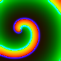
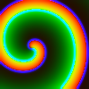

Introduction
Beatbox is a program that could be compiled for sequential or parallel (MPI) use. Currently it has a small collection of cell models, including FitzHugh-Nagumo, Luo-Rudy I, Courtemanche et al. human atrial (this list will be expanding) and solves reaction diffusion equations with these cell models to simulate wave propagation in idealised and realistic cardiac tissue models. Currently the solvers use finite differencing with regular spatial grid and forward Euler in time with or without operator splitting. Some semi-implicit solvers are now in test exploitation and bidomain solvers are under development.
A special feature of Beatbox is its flexibility in setting various
experimental protocols, without the need to recompile the package. A
simulation is set up by constructing an input script that spatial
model (1D cable, 2D rectangel, 3D box, or 2D/3D geometry) details, and "devices", which perform
computations, input/output, and control functions. The simulation
script is typically called filename.bbs, where the
conventional extension bbs stands for "beatbox script",
and filename can be anything you like. The "devices" are
chained together in a ring, with an integer counter t,
usually corresponding to the time steps in the simulation. The concept
of the ring of devices is illustrated in Figure 1.
In this example,
k_func-
(the first instance) works as a control device that defines when
other devices will be active: the second
k_funcat the start of the computations,ppmoutevery so often, andstopin the end. k_func- (the second instance) works as a computational device defining the initial conditions,
diff- is a computational device that performs diffusion substep in the operator-splitting time step,
euler- ... performs reaction substep in the operator-splitting time step,
ppmout- is an output device that writes rounded-up simulation results to the disk for subsequent visualization,
stop- is a control device that terminates the run.
Each device has a set of parameters, specific for it, e.g. the list of
parameters for k_func is different from that for
diff (but there are some "universal" and some "typical"
parameters, such as their control variables or the mesh domain on
which the device operates). A simulation run can use more than one
instance of the given device, each of which may appear anywhere in the
ring; in this example k_func has two instances appearing
one after the other. All instances of the same device will have the same list of
parameters, but the values of parameters are set completely indepently
in different instances.
The function of the input script is to define the computational grid and to describe all the devices for the given run together with their parameters.
A simulation will thus typically involve:
-
The input script being read and the simulation initialised:
- The simulation grid is created with the specified dimensions, and if realistic geometry is used, then the relevant subset of the simulation grid and the diffusion tensor field are defined,
- Devices are added to the ring of devices with the specified parameters.
-
The simulation is run:
- Each device in the ring is called in turn to perform its part of the simulation task, provided it is commanded to be active at this step by the control device(s),
- Repeat until the stop condition is met, or an error occurs.
- The simulation is terminated.
In this distribution, there are some example scripts provided, which illustrate the format of the input scripts and use of the devices. A more formal description of the bbs script language and of the devices available follow below. A certain stage of Beatbox development is reflected in Ross McFarlane, High-Performance Computing for Computational Biology of the Heart, PhD Dissertation, October 2010, see Chapters 2 and 3 in particular.
Setting-up Beatbox
Prerequisites
The developers tried to make Beatbox self-contained and reduce the number of dependencies to an absolute minimum. You will require:
- Certain
autotools, notablyautoconfandautomake, to automatically configure the package for your computer. Pre-configured and pre-compiled versions will be provided in due course, when demand is established. - A C compiler, ideally gcc.
- A suitable MPI library, preferably mpich2 if you want to run in parallel.
- The standard X11 libraries if you want to have run-time visualization (currently only available in sequential mode).
- Some of the examples use utilities from netpbm both for run-time image conversion and for post-processing.
Getting Beatbox
The recommended way to obtain BeatBox is to download the most recent official release from the BeatBox home page,
An alternative which may be more appropriate for beta-testers, is to obtain the most recent version of BeatBox code from its SVN repository, say by issuing the following commands:
mkdir ~/beatbox cd ~/beatbox svn co --username=anonymous --password=beatbox https://beatbox-trac.epcc.ed.ac.uk/svn/trunk/ ./
Note that this will be a read-only copy of the repository, i.e. you will not be able to check any modifications back in. If you would like to become a developer please get in touch with the project team.
Installation instructions
Compiling and installing Beatbox
Assuming that all the components mentioned above are available and in place, the following sequence of commannds
autoreconf -fi export CC=mpicc ./configure CFLAGS="-g -O0" --prefix=$HOME make make install
will compile two versions of the program, Beatbox
(parallel) and Beatbox_SEQ (sequential), and install them
in $HOME/bin/. A shell script
bbx_compile_local.sh is provided in the root distribution
directory, to facilitate the
installation.
You may wish to change the install location specified in this file:
current setting --prefix=$HOME means that the binaries
will be installed in $HOME/bin/. This is reasonable in
the assumption that that directory exists and is in your
$PATH; modify it as appropriate if you prefer to keep
your binaries elsewhere.
The options CFLAGS="-g -O0" mean that the code will be
prepared for debugging and not optimized; for "production runs" this
can be omitted and replaced by CFLAGS="-O3".
If the script, configure or Makefile cannot
find the include and library files, the paths may have to be
explicitly incorporated into src/Makefile.am and then go
through the whole procedure starting from the autoreconf
-fi step.
Compiling and installing Beatbox on HECToR
HECToR (www.hector.ac.uk) is the
national UK supercomputer service. HECToR is a Cray XE6 based
system. In order to install on HECToR, we need to cross compile for
back end nodes and make correct settings,
so the process is a little bit different
(script bbx_compile_hector.sh):
# Create the configure and install scripts autoreconf -fi # Load the PGI compiler module module load pgi # Tell the configure command what compiler we need to use. export CC=cc # Need to explicitly tell the Cray system what X libraries to use export LIBS="-lm -lX11 -lxcb -lxcb-xlib -ldl -lXau" # Run configure - note that it will install in $HOME/bin ./configure --prefix=$HOME # Now make the code make # Install the code to the directories specified by the prefix above. make install
Again, change the
prefix flag if you would like it to install
elsewhere.
Running Beatbox
General Instructions
The sequential version of the program may be run by using:
Beatbox_SEQ [<options>] [--] <input_script> [<arguments> | <options> | -- ]
That is: the executable name (with the full path if necessary),
followed by the input
script and the arguments, if any, with options interpspersed anywhere after
the executable name. Similar to many Unix programs, options are those
words that start with a minus '-', but a double minus
'--' signals an end of all options so a word starting
with - after that is interpreted as input script name or
argument.
Correspondingly, assuming that you have mpich2, the parallel version on a local computer may be run using
mpirun -np <num_procs> Beatbox [<options>] [--] <input_script> [<arguments> | <options> | -- ]
The parsing of the input script and the simulations are commented by printing messages to the standard output and duplicating them into a log file.
The possible options are:
-append: append to the log file. The default is to overwrite it-debug <filename>: this produces a debug file. If<filename>isstdoutorstderr, the debugging information is printed to standard output or standard error rather than a disk file of that name. The default is no debug printouts.-log <filename>: this set the name for the log file. The default is the name of the input script, stripped of the extension.bbsif there is one, and appended extension.log.-mute: no default output to stdout. The default is to copy a (possibly shorter) version of the log file information to the standard output.-nograph: do not use run-time VGA graphics. The default is to use it if there is at least one device that has something to show. This is only effective with the sequential version as the run-time graphics are not yet implemented for the parallel version.-profile: measure timing for each device in the ring and output it in the end. The default is not to measure and not to output that information.-verbose: this makes messages in the log file more verbose. The default brief output does not include e.g. the default values of the device parameters.-decomp [1|2|<NX>x<NY>x<NZ>](in parallel mode only) : the choice of decomposition algorithm, namely 1 due to RMF, 2 due to SRK and<NX>x<NY>x<NZ>]an explicit formula, whereNX,NY,NZare numbers of partitionings along the x, y and z axes respectively. Note that the explicit formula be given as one word consisting of exactly three positive integer numbers separated by two letters 'x'. In full-box simulations, the total number of subdomainsNX*NY*NZshould not exceed the number of processes allocated for the job by the-np <num_procs>option of thempiruncommand. If using tissue geometry (see below) then the number of subdomains can be more than the number of processes, as long as the number of processes is sufficient to cover all non-empty subdomains, i.e. subdomains containing any tissue points. Default is 1, for automatic partitioning by RMF algorithm. Currently, neither of the automatic partitioning algorithms takes into account whether any subdomains are empty, so efficient use of "thin" geometries at high-degree parallelization requires the explicit decomposition formula.
CAVEAT:
The options -debug, -log and -decomp
gobble the next word for the name of the debug or log file; failure to
appreciate that is a common error leading to weird behaviour. This should
be addressed one day, perhaps by making them like
-debug=<filename> instead.
The arguments can be used in the input script, where they appear as pre-defined string macros, see below. The parsing is usual for the unix shells, that is each word makes a separate argument, except when quotes are used.
Beatbox on HECToR
This subsection gives a brief description on how to conduct simulations on HECToR or a similar HPC facility. Before starting any simulations, a certain familiarity with HECToR architecture, compilers, modules, and general terms of usage can be gained from the HECToR User Guide.
On HECToR compilation is done through a set of compilation wrappers,
cc will always correspond to the actual compilation
suite being used. The default version is for the Cray
compilers. Other compiler suites may be used (by loading and unloading
the appropriate modules), but will still use the same wrapper. The
compilation is done for the work nodes - thus we are cross compiling.
HECToR manages production as well as (parallel and serial) debugging
runs by using the
PBSpro queuing system. A PBS script consists of a set of PBS
commands, and other generic shell commands. A sample PBS script that
can be used to run Beatbox jobs is shown below. The commands are
explained in the comments (text following a ## on any
line) - a line that starts with #PBS denotes a PBS
command. The following script was used to run the 3D atrium simulation
and is called Beatboxrun64.sh. Its contents are:
#!/bin/bash --login ## A PBS command starts with #PBS. ## Start by specifying a name for the job. #PBS -N Beatbox64 ## Specify number of cores requested. #PBS -l mppwidth=64 ## Hector is composed of "nodes", each of which consist of ## two 16 cores processors - thus one has 32 cores available in a node. ## The number of cores per node controls memory available to the job. ## Use of all cores in a node (assuming mppwidth is more than 32) ## optimises the use AU charged to your account. #PBS -l mppnppn=32 ## This is the amount of time requested for the simulation. #PBS -l walltime=3:00:00 ## A project code has to be provided, otherwise the job is usually ## not accepted by a queue. #PBS -A e203 ## Assume this PBS script lies in the same directory as the executable ## file. Note to be seen by the back end nodes this must lie in one of ## the work directories. Change directories to where the job was launched. ## You must make sure that you copied the Beatbox executable, the ## humanAtrium.bbs and humanAtrium.bbg scripts to this directory for this ## to work. cd $PBS_O_WORKDIR ## Run the job ## n is the total number of processes ## N is the number of processes per node ## Launch the parallel job using aprun. The stdout is called ## Beatbox64.o_job_number, and stderr is called Beatbox64.e_job_number aprun -n 64 -N 32 ./Beatbox humanAtrium_start_crn.bbs
Before submitting any job using such a submission script, it may be
worthwhile to run a check on the script using the HECToR provided
checkScript:
checkScript Beatbox64.sh
This will indicate if there are any errors in the script so you can fix these before you submit it to the PBS system. The production job is then submitted to a parallel queue using:
qsub Beatbox64.sh
Further options are also available, and can be seen in the user guide. Similarly to production, parallel debugging jobs must also be submitted to the queue with the following command added:
#PBS -v DISPLAY
and the appropriate debugger binary name preceding
the aprun. For example, the TotalView
parallel debugger can be invoked by:
totalview aprun -a -b -a xt -n 64 -N 32 /work/.../myprog.x
The detailed submission script for debugging jobs can be found on the relevant HECToR pages.
The status of submitted jobs can be checked using the command:
qstat -u your_hector_user_name
and the job is deleted using:
qdel job_number
Beatbox Scripting Guide
A Beatbox simulation is defined by the user in the form of an input script ("Beatbox script" or "bbs script"). A script is a plain text file that specifies the computational grid, the devices that are to be used to do the calculations and input/output, and their parameters. Any script should be able to run on any of Beatbox’s supported hardware platforms; if a sequential-only device is used in a script submitted to parallel execution, the warning message will be output but the script will run nonetheless.
This section introduces Beatbox scripts by first describing the scripting language, before discussing common applications. Unlike interpreted scripting languages such as PHP or Python, Beatbox scripts are not run during the simulation. The script is read once to build the simulation, after which the script code does no longer define the flow of execution, so can be modified or removed with no consequences for the current run.
Similar to other programming languages, Beatbox scripts allow the user to define variables and macros, include external code and make calls to the operating system. The Beatbox scripting language also provides a small library of arithmetic and logical functions. The user may also improve the legibility of their code, or disable portions of the code using comments. Each of these features is discussed below.
For the impatient
If you prefer to learn by example rather than go through formal definitions, you may wish to try and jump ahead to a simple working example and then only if and when necessary go back to check out those formal definitions, or go forward to further, more sophisticated examples.
The Data
Any Beatbox run operates with two sorts of data. One is the
computational grid, which is effectively a four-dimensional array of
real numbers (of the precision specified at compile time), which is
the object of operation of the computational devices. The four
dimensions are the three spatial dimensions x,y,z and the
"component" dimension v. Slices in the component
dimension are called "layers".
Associated with the computational grid could be the geometry array (if complex geometry option is on), which has the same shape as the main grid, and determines which points in it belong to the computational domain and which are "void", and (if anisotropy option is on) contains information about fiber directions.
The other are the arithmetic variables and string macros. The
arithmetic variables can be integer or real (with the precision
defined at compile time), their names following C convention. The
input script interpreter contains a built-in interpreter of arithmetic
experession, so parameters of a device can be specified as arithmetic
expressions (possibly depending on arithmetic variables) rather than
specific values. The script is interpreted from top to bottom, so any
arithmetic variable will exist and have a valid value of it was
defined and assigned the value above the point at which it is
used. The exceptions are the pre-defined variables, such
as integer t containing the counter of the device ring
loop, and real pi containing the number pi.
The string macros have the form of a string of characters
between [ and ].
The strings of characers making the names of the macros also have to
obey the C rules. The exception is string macros
[1], [2], [3] ..., which cannot
be defined within the script, and which contain the values of the
command line arguments (see above). There some more pre-defined string
macros, e.g. names of colours used in VGA graphical devices. The values
of ordinary string macros are assigned at the moment of their
definition. Whenever they are used in the script, their values are
simply substituted in place of [...] and the result is
interpreted as if it was part of the script all along. A string macro
may appear e.g. in the expression defining the value of an arithmetic
variable, which is one way to convert string macro to an arithmetic
expression.
In the parallel version, the computational grid (and the geometry array) are split between the threads: if a particular value belongs to one subdomain it is not accessible to another subdomain (with the exception of halo points, see below). On the contrary, any arithmetic variable or string macro is available in all threads; however depending on its use, they may have different values in different threads.
Need to doublecheck the actual syntatic restrictions on variable and string macro names and bring the code and this manual in correspondence with each other.
The Beatbox Scripting Language
After preprocessing (see below), a Beatbox script consists of a series
of commands. A command is a sequence of characters (being
part of one line of script or spanning across several lines),
beginning with a recognised keyword and ending with a semicolon
';'. The following code excerpt shows examples of three commands:
def int sideLength 26; state xmax=sideLength, ymax=sideLength, zmax=sideLength, vmax=3;
euler
v1=[iext]
ode=lrd
par={ht=ht IV=@24}
;
This script defines sideLength which is the used initialise the
state of the system before the euler device is called.
The types of command in a Beatbox script are listed below. Each command describes an action to be taken by Beatbox, with the keyword at the beginning of the command being the verb.
rem- A ‘remark’. Marks code as a comment. This is being processed by the interpreter as usual (so e.g. it should no contain undefined string macros), but otherwise makes no consequences for the simulation.if- Allows a script command to be conditionally read. The keyword is to be followed by an arithmetic expression followed by a command with its own keyword. If the arithmetic expression returns a nonzerp value, the command is interpreted, otherwise it is ignored. This does not affect the flow of execution as the simulation is run, but operates much like conditional compilation.def- Defines a variable or macro.state- Sets the dimensions of the computational grid.screen- Sets parameter for on-screen display for the run-time VGA graphics.- A device name - Adds an instance of the named device, with the
parameters as described in the body of the command, to the ring of
devices. Some of the recognized device names are discussed
below;
the full list is in
devlist.hsource file. end- Marks the end of the script. Anything after such statement is ignored.
Preprocessing
As each line of the script is parsed, Beatbox preprocesses the code in a manner similar to the C Preprocessor [see Kernighan and Ritchie, 1988, chap. 4]. The Beatbox preprocessor handles four tasks:
- skipping comments,
- including other Beatbox scripts,
- calling system commands and
- expanding string macros.
Each of these are discussed below.
Comments
Comments can be added to Beatbox scripts in five ways:
- A C style comment:
/* Multi-line C style comment */
- A C++ style comment:
// Single-line C++ style comment
- A
remstatement:rem ’Remark’ command-style comment, which can go over serveral lines but must end with a semicolon; - Anything added after an
endcommand,... end; Anything here is now ignored by the Beatbox preprocessor so it could be used to comment code..
- Anything within the body of any command which is not recognized as a
valid
name=valuepair.Comment = As Beatbox does not know what the comment is this could be treated as a comment (probably not good practice though);
Text in a comment is ignored by the parser, except undefined macros
will cause fatal errors within a body of a rem or another command.
Including Other Beatbox Scripts
Where the relative path to a Beatbox script file is enclosed in in
angle brackets (< >), the content of the referenced file will be
read and inserted at that location. Unlike in the C programming
language, the name of the file in angle brackets is not preceded by an
#include command. This can be used to maintain
consistency across a number of simulations, or to reduce code
redundancy. Beatbox replaces a filename in angle brackets with the
file’s entire contents. For example, given a script
called useful.bbs:
// Here is a lot of useful code... def real apar=1; def real bpar=2; |
and a script that includes useful.bbs as follows:
// This is my own script <useful.bbs> // Here’s some more of my own code. def real cpar=3; |
The result, after preprocessing, is as shown below:
def real apar=1; def real bpar=2; def real cpar=3; |
The filename in the angular brackets may contain string macros which are expanded in the usual way before the angular brackets operator is applied.
Calling System Commands
Beatbox replaces code in backticks (`...`) with the
result of that code when run as a system command, via
a system() call (stdlib.h). For example:
`date '+%Y%m%d-%H:%M:%S'`
will be replaced with the result of the UNIX date command:
20120710-09:30:55
Expanding String Macros
String macros allow the user to define reusable strings that can be pasted throughout a script. String macros are distinct from variables in that they are expanded once, prior to the script being interpreted and cannot therefore be assigned values other than when they are defined. A string macro is defined as follows:
def str <macro name> <value>;
where <macro name> is a string using letters,
numbers, underscores (_) or hyphens (-) and <value>
is any string not including a semicolon.
Need to doublecheck the actual syntatic restrictions on variable and string macro names and bring the code and this manual in correspondence with each other.
After a macro is defined, its name, wrapped in square brackets ( [ ] ) is associated with its value. When Beatbox input script parser finds a macro’s name in square brackets, it replaces them with the value.
In the following excerpt, the variable hat is assigned
the value porkpie. The variable headware is
assigned the value hat.
def str snack porkpie; // Assigned string ’porkpie’. def str hat [snack]; // Assigned string ’porkpie’. def str headware hat; // Assigned string ’hat’, not value of hat macro.
A macro can expand to anything that could be typed in the script. For
example, a string macro can be used in place of
an int, long or real:
def str ninetynine 99; // Assigned string value ’99’. def int number [ninetynine]; // Assigned integer value 99.
A number variable cannot, however, be used to define a macro:
def int number 99; // Assigned integer value 99. def str ninetynine number; // Assigned string value ’number’.
It is possible to assign several lines of code (excluding semicolons) to a string macro, so this:
def str instruction ppmout when=out file="ppm/%04d.ppm" mode="w" r=[u] r0=umin r1=umax g=[v] g0=vmin g1=vmax b=[i] b0=0 b1=255; [instruction];
is equivalent to:
ppmout when=out file="ppm/%04d.ppm" mode="w" r=[u] r0=umin r1=umax g=[v] g0=vmin g1=vmax b=[i] b0=0 b1=255;
Defining Arithmetic Variables with the def Command
Arithmetic variables defined in the script are distinct from the C
language variables used in Beatbox’s implementation. For clarity,
variables defined in the script, using def may be
referred to as "k-variables".
A k-variable is defined using the def command, like this:
def <type> <name> [=] <value>;
where <type> is one of:
int(integer number),long(integer number),real(real number),float(real number),double: (real number),
so k-variables and arithmetic expressions only have two data types,
real and integer, and their actual precision (int
or long int, float or double)
is determined at the compile time by the settings
in k_.h; typically
long and double respectively.
A <variable name> can consist of letters,
numbers, underscores (_) or hyphens (-).
Variables defined in this way are accessible in the script
during the input script parsing, as well as at run-time by some
devices, e.g. k_func.
The <value> (optional) is an
expression that may be evaluated to the correct type and is assigned
as the initial value of the variable just defined. Expressions are
discussed in greater detail below. If no initial value is given, the
variable is assigned the initial value of 0 or 0.0 as appropriate.
Beatbox stores the names of macros wrapped in their square
brackets ([...]), therefore it is possible for a script to define
macros and variables with the same name.
Predefined k-variables and string macros
Some variables and macros exist without being defined in the input script. All of them are read-only, i.e. cannot be modified in the input script. These are:-
[0]- string macro containing the name of the beatbox script, without the extension.bbs. -
[1], [2], ...- string macros containing the command line arguments passed to the script. -
t- integer, the counter of the device ring loops. -
inf- "infinity", a very big real number. -
xmax,ymax,zmax,vmax- integer, the computational grid sizes as defined by thestatecommand, even if implicitly from the geometry. -
Graph- integer, 0 if-nographcommand line option was given or the parallel version of the program is run, and 1 otherwise. -
graphon- integer, nonzero if VGA graphical output has actually been initiated (e.g. connection to the X server successful). -
XMAX,YMAX- integer, sizes of the VGA graphical screen when run-time graphics is on, in pixels, as specified byscreencommand. -
WINX,WINY- integer, the coordinates of the VGA graphical window on the screen, as specified byscreencommand. -
BLACK, BLUE, GREEN, CYAN, RED, MAGENTA, BROWN, LIGHTGRAY, DARKGRAY, LIGHTBLUE, LIGHTGREEN, LIGHTCYAN, LIGHTRED, LIGHTMAGENTA, YELLOW, WHITE- integer codes of the standard VGA colours to be used in the run-time VGA graphics. -
pi- the real number pi=3.1415926... -
always- the real 1.0. -
never- the real 0.0.
Expressions
Any numerical value in a Beatbox script, be it initial value in a
variable definition or the value of a device parameter, may be
specified as a mathematical expression. An expression may be a literal
value, such as 5.0, or the result of some computation, such
as 6*5 or count/2.
Beatbox expressions can use the standard infix arithmetic operators:
addition (+), subtraction (-), multiplication (*), division (/) and
exponentiation (** or ^), as well unary plus and minus. For more
complex operations Beatbox provides a collection of functions, that
includes replicas of standard C functions
acos,
asin,
atan2,
atan,
ceil,
cos,
erf,
exp,
fabs,
floor,
fmod,
hypot,
log10,
log,
pow,
sin,
sqrt,
tan,
tanh,
and also
-
J0(a)- Returns the Bessel function of the first kind of argumentaand index 0. -
J1(a)- Returns the Bessel index-1 function ofa. -
if(test, then, else)- Returnstheniftestevaluates to true,elseotherwise. -
ifne0(test, then, else)- Returnstheniftestis not equal to 0,elseotherwise. -
ifeq0(test, then, else)- Returnstheniftestis equal to 0,elseotherwise. -
ifgt0(test, then, else)- Returnstheniftestis strictly greater than 0,elseotherwise. -
ifge0(test, then, else)- Returnstheniftestis greater than or equal to 0,elseotherwise. -
iflt0(test, then, else)- Returnstheniftestis strictly less than 0,elseotherwise. -
ifle0(test, then, else)- Returnstheniftestis less than or equal to 0,elseotherwise. -
ifsign(test, neg, zero, pos)- Returnsnegiftestis strictly less than 0,zeroif test is equal to 0,posiftestis strictly greater than 0. -
gt(a, b)- Returns 1.0 ifais strictly greater thanb. -
ge(a, b)- Returns 1.0 ifais greater than or equal tob. -
lt(a, b)- Returns 1.0 ifais strictly less thanb. -
le(a, b)- Returns 1.0 ifais less than or equal tob. -
eq(a, b)- Returns 1.0 ifaandbare equal. -
ne(a, b)- Returns 1.0 ifaandbare not equal. -
mod(a, b)- A synonym for fmod. -
max(a, b)- Returns the greater ofaorb. -
min(a, b)- Returns the lesser ofaorb. -
crop(test, min, max)- Returnsminiftestis strictly less thanmin. Returnsmaxiftestis strictly less thanmax. Returnstestotherwise. -
u(x,y,z,v)- Returns the value of dynamic variable in the layervat point(x,y,z)in the mesh. The values of the arguments are cropped into the corresponding meaningful intervals, e.g. [0,vmax-1] forvetc. If non-integer values are given forx,yorz, the value is linearly interpolated from surrounding grid points. Non-integer values forvare rounded down. -
geom(x,y,z,v)is similar tou(), but provides access to geometry data rather than computational grid data. This function is defined only if a complex geometry is used. Again, non-integer values forx,yimply linear interpolation. Forv=0, the function returns 1.0 for a tissue point and 0.0 for a void point. Forv=1,2,3, the function returns the values of the fiber direction coefficients; these are only available if anisotropy option is used. -
rnd(a, b)- Returns a random real number greater than or equal toaand strictly less thanb, uniformly distributed in between (sequential version only). -
gauss(a, b)- Returns a random real number normally distributed with meanaand standard deviationb, Box-Muller 1958 transformation (sequential version only).
The last two functions are not thread-safe or would be too communicationally expensive to implement in the parallel mode, so are only allowed in the sequential mode.
The arithmetic operators distinguish between real and integer numbers,
so 5/2 produces 2 while 5.0/2.0 gives
2.5. The usual type casting rules apply, e.g. sum of a real and an
integer is a real, etc. All functions take real arguments and return
real values. Calling a function with a wrong number of arguments is an
error. The built-in "k-compiler" of arithmetic expressions is not
optimizing, and any intellectual work is expected to be done by the
user. E.g. calling function with an integer argument,
say 0, will generate the conversion of the
integer 0 into the real 0.0 in the compiled
code; where as putting 0.0 as the argument will not
require that so will generate a slightly shorter and more efficient
"k-executable".
Briefly about Device-Defining Commands
The simplified syntax of a device-defining command is
<device> [<name>=<value> [...]] ;
The <name>=<value> pairs define the device
parameters and are separated from each other by spaces
(including '\t', '\b', '\r'
and '\n' characters). Each device has its own set of
parameters, whose names will be checked for in the body of the
command. The pairs
<name>=<value> with parameter names not
known to the given device, or something that is not
a <name>=<value> pair, are silently
ignored. If there is more than
one <name>=<value> pair with the same
name, only the first occurrence matters and the rest is/are
ignored. If no <name>=<value> pair
corresponding to a parameter is found, the
default value is assigned, or an error message is output and parsing
terminates if there is no default value for this parameter.
The parameters could be arithmetic, string, or blocks.
For the arithmetic parameters, which could be any valid arithmetic
C type, the <value> is taken as the string of
characters after the = sign until the first blank
character, is intepreted as an arithmetic expression, it is evaluated
to the appropriate k-type (integer or real), cast to the required C
type, and assigned to the parameter. A parameter in a device may have
a default value and maximal and minimal allowed values. If a
calculated value goes beyond the prescribed limits, and error
message is printed and parsing is terminated.
For the string parameters, the value (subject to
preprocessing) is intepreted as the literal value of the parameter. A
string containing blank spaces or one of the special characters
\n,
\b,
\f,
\t,
\r,
\a
and
\0
can be used as a value by enclosing it in double
quotes "...". Any other character within the double
quotes, preceded by the backslash \ (including the double
quote and the backslash itself) evaluates to that character.
String parameters may have default values, but obviosuly not minimal
or maximal values.
The block parameters expect the values in the form of text enclosed by
curly brackets, {...}. Such block text may span several
lines of the script and may contain contain its own set of
<name>=<value> pairs (what we shall call a
codeblock) or list of k-expressions
(listblock). There are no defaults for block parameters,
i.e. they are always compulsory.
Defining the Computational Grid with the state Command
General description
The first functional task of a script is to define the mesh. The
mesh is stored as a four-dimensional array, corresponding to a
three-dimensional, regular Cartesian mesh with an array of dynamic
variables at each point. Dynamic variables hold space-dependent
values, local to each point in the mesh. The majority of dynamic
variables are commonly employed to hold variables of the cell
model. The dimensions of the mesh and number of dynamic variables
(i.e. the size of the four-dimensional array) are set using
the state command.
The syntax of the state command is the same as that of a
device-defining command, only it does not add any devices into the
device ring.
The required set of parameters depends on whether geometry file is
used, which is determined by the string
parameter geometry. If this parameter is assigned to a
non-empty string, then it is understood to be the name of the
geometry file. This case is described in more detail below.
If parameter geometry is absent or is assigned to an
empty string, no geometry file is read, the computations are done in a
parallelepiped, and its sizes xmax, ymax
(compulsory) and zmax (optional, default=1) will be
checked for. Parameter vmax is still required.
The integer coordinates (index) x runs from 0 through to
xmax-1 (so the name xmax is a bit of a
misnomer, but stuck for historical reasons).
If zmax≥3, the calculations will be three-dimensional
(3D). Otherwise, if ymax≥3, the calculations will be
two-dimensional (2D). Otherwise, if xmax≥3, the
calculations will be one-dimensional (1D). Otherwise, it is
zero-dimensional case (0D), that is, no spatial extent (ODE model). At
least three points in a particular direction are needed to make that
direction "extended", because in that case the marginal values of the
coordinates need to be kept free, for technical reasons related to
implementation of boundary conditions. The cases of
xmax=2 etc are syntactically allowed but hardly ever used
in practice.
In any case, parameter vmax is accepted. It is
optional and defaults to 2 (a tribute to the FitzHugh-Nagumo
model). It defines the number of dynamic variables per node of the
computational grid, i.e. the number of computational layers. Note
that this number may and ofter is larger that the number of
equations in the model, as extra layers may be required as working
arrays for computational purposes (details are in the description of the
devices that use this feature).
The mesh defined in the example below has 300
points along the x-axis and 400 points along the
y-axis. Since zmax is equal to 1, there is one point
along the z-axis, making the medium flat on the xy-plane. The
variable vmax specifies the number of dynamic variables
stored at every point in the mesh.
state xmax=300 ymax=400 zmax=1 vmax=3; |
Beatbox assumes that the simulation medium will follow a hierarchy of axes; x before y before z, i.e. one-dimensional simulations must use the x-axis and two-dimensional simulations must use the x and y axes.
Any Beatbox input script must contain exactly one state
command, and it should precede any device-defining commands.
Tissue Geometry: simulating in non-rectangular domains
If you would like to use an anatomically realistic mesh for your
simulation, you can specify it in the geometry parameter of
the state command. For
example, geometry=ffr.bbg will select
the ffr.bbg geometry file.
When using a geometry file, there is no need to specify the dimensions
of the mesh, in which case Beatbox will find them automatically by analysing the geometry
file. The set of points read from geometry files will be padded on all
sides by padding grid points, which is a parameter defaulting to 1.
You do still
need to define vmax, however, to suit your chosen RHS
module and any other dynamic variables your simulation needs. Beatbox
will also complain if the fibre directions specified in your geometry
file are not unit vectors. If you like, Beatbox will normalise the
fibre directions for you, if you set the normaliseVectors
parameter to 1. If you would like to model anisotropy, set the
ansiotropy parameter to 1.
When the anisotropy=1, the
behaviour and required parameters of some devices may change. In
particular, the diff device, performing the diffusion
substep, will require two diffusion coefficients, Dpar
and Dtrans for the diffusivity along and across the
fibres, instead of the isotropic D.
Further details, for more advanced users:
Perhaps paradoxically, it is possible to specify both the grid sizes
x0=..., ... z1=... and the BBG file
geometry=.... In this case, the priority is given to the grid
sizes, and the points in the BBG file are expected to comply: any points in
BBG file that do not fit within the expected dimensions are simply discarded. This
makes sense for very big geometries if many runs with the same geometry are
required, since an extra round of reading the whole BBG file is needed to
determine the dimensions, and this can take a long time for a large BBG file.
It is also possible to use nontrivial geometry and/or anisotropy even
without a BBG file. This possibility is realized by specifying
anisotropy=1 without a geometry=... parameter. In
this case, the grid sizes are mandatory, and the geometry can be defined by a
k_func device on the whole grid, assigning nonzero values to the geom0
local variable at all points that are intended to represent the tissue, zero
values for the voids, and assigning geom1,geom2,geom3 the
corresponding fiber
direction cosines with the x,y and z axes respectively. A delicate detail here
is that these computations must be done BEFORE the geometry grid is used, and
it is used say by diff device at parse time. So
the k-function filling the geometry grid must be executed at parse time (and
earlier in the script than any device that may use this grid). To make it
possible, k_func device has a parameter advance. By
setting when=never advance=1, you would ensure that this
k_func device is executed at and only at parse time when the
initialization script reads the input file, which is precisely what is needed
for diff device and the like to work properly. Notice that it is
possible to modify the values in the geometry grid, but this will have no
effect on diff, diffstep and elliptic
devices as their templates are formed at parse time only (this behaviour may
be reconsidered later).
Geometry File Format
The Beatbox geometry file will typically have the extension .bbg
and is a plain text file, each line of which describes a point belonging to
the tissue. Any such line will have four numbers or seven numbers: integers
for x, y and z coordinates of a node and its tissue type, and three reals for
the fibre orientation data. The de-facto limits of the x-, y- and z-components
of all points in the file will be used to define the circumscribed box. The
file does not have to describe every point in the box; the points that are not
mentioned will simply be assumed to belong to the void. A zero tissue type
designates the void, so such lines can be omitted without any loss of
information. The three reals of the fibre orientation data for any nonzero
tissue type will be the directional cosines of the fibres. If no true fibre
data are available in the source of the geometry, and/or no anisotropy is used
in simulations, then any triple can be put as the fibre orientation data, say
1,0,0.
Further details, for more advanced users:
Normally, the directional cosines are silently expected to be
normalised so that the sum of their squares equals one. This will be
explicitly checked by stating checkVectors=1 in the
state command. Moreover, the state command may have
normaliseVectors=1 specified in it in which case the directional
cosines will be normalised as the BBG file is read. If the vector of
directional cosines are very close to zero then instead of normalising them,
BeatBox will replace these cosines with a precise zero which is understood
that this particular point of the grid does not have a fiber direction and
must be treated as isotropic.
About the run-time graphics
The run-time graphics in Beatbox is at present implemented only in the sequential mode. It comes in two kinds.
-
Some legacy devices make graphical
outputs into a single window, common to all such devices, emulating the VGA 640x380,
16-colour interface by means of the X11 protocol. In this manual, this method
is referred to as "VGA graphics" for brevity. The standard window size may
be changed by using a
screencommand which, as thestatecommand, makese effect only at parse time and must precede any devices using VGA graphics. The parameters of thescreencommand are:Type Name Default Description intXMAX639Width of the VGA window - 1, in pixels. intYMAX479Height of the VGA window - 1, in pixels. intWINX-1Horizontal location of the VGA screen. If non-negative, it is the distance of the left edge of the window from the left edge of the screen. The negative values designate the distance of the right edge of the window from the right end of the screen. intWINY-1Vertical location of the VGA screen. If non-negative, it is the distance of the top edge of the window from the top edge of the screen. The negative values designate the distance of the bottom edge of the window from the bottom end of the screen. intonline0Normally, when this flag is 0, the VGA emulator will update the window only when the device updatedescribed below is called. If set to 1, this flag causes the VGA emulator will update the window after every primitive. This will significantly slow down the graphics, but may be useful for debugging purposes purposes. - More recent graphical devices make each their own X11 window as needed. These as rely on the OpenGL extension to X11. In this manual, this method is referred to as "OpenGL graphics" for brevity.
More about Device-Definining Commands
Following the state declaration and possibly a
screen declaration, a script can add to the
ring of devices by invoking or ‘calling’ Beatbox devices. A device
call takes the form of the device name, followed by parameters as
key-value pairs, separated by spaces. The excerpt below shows
the euler device being called with some parameters.
euler v1=[iext] ht=ht ode=lrd pars={IV=@24} name=Geoff;
Each device call will add an instance of the device to the ring of
devices. It is possible to instantiate the same device,
e.g. euler, multiple times and the parameters of each
instance will remain independent. The different instances can be
distinguished from each other (say, in the debugging or profiling
listings) by the values of their optional name parameter,
"Geoff" in the above example.
Assigning Device Parameters
Device parameters are assigned following the device name as key-value
pairs with the syntax <key>=<value>. Since spaces separate
device parameters, an str parameter value that includes
spaces, should be enclosed in quotes (" "). Expressions assigned
to int, long and real
parameters will be reduced to literal values when read. An example is
shown in Listing G.5.
Some devices may request parameters formatted as a codestring or a block.
- A codestring is provided in the same way as a string parameter, with the exception that the string must be a valid Beatbox script expression. The expression should compile to the variable type specified in the device’s documentation. Codestrings allow devices to evaluate an expression as the simulation is running, rather than reduce it to a literal value.
-
A block is a string enclosed in braces ({ }). The contents of a
block will be passed literally to the device, without intervention
from the script interpreter. This allows a block to contain characters
such as ';' or '"' that could not be included in a string parameter. Some
devices, notably
k_func, use a block to accept script statements. For instance,euleruses a block to pass parameters assignments to its RHS module.
Example uses of a codestring and a block are shown below.
Listing G.5 shows the assignment of a parameter,
bar to an imaginary foo device. Although the value of
hat may change throughout the simulation, the value of
the bar parameter will be set only once, when the device
is called. In this case, bar will be assigned the value
40.
def real hat 10.0; foo bar = min(hat ,60)*4; |
Listing G.6 illustrate usage of block parameters
in real devices k_func and
euler.
device.
k_func nowhere=1 pgm={
stim = eq(t,stimTime);
};
def int neqn 24;
def str iext neqn;
euler v0=0 v1=neqn-1 ht=ht ode=crn par={ht=ht, IV=@[iext]};
|
In the k_func, the block parameter pgm is
assigned the string enclosed between the {...} brackets.
This will be compiled and result in a k-executable, which will be
stored among other internal parameters of this instance
of k_func device for future use. Then at each time step
(but only once per thread, as defined by the nowhere=1
parameter), this k-executable will be evaluated using the then
current, run-time values of k-variables t
and stimTime, and the result will be assigned to the
k-variable stim.
In euler, parameter ode, which is a string
defining the kinetic model used by the forward Euler timestepper, is
assigned crn which stands for the
Courtemanche-Ramirez-Nattel 1998 human atrial model. It uses layers
from 0 through to neqn-1=23 so
k-variable neqn must be equal to the number of dynamic
variables in the model (24), at the parsing time, otherwise program
will stop with an error message. Parameter ht, which
designates the time step of the forward Euler scheme, will be assigned
to the current (parse-time) value of the k-variable ht.
Parameter par will be assigned the whole contents within
the {...} brackets, and passed for further parse-time
processing by the ode-specific parser of the euler
device. On this occasion, the CRN model requires the time
step ht again, since it calculates new values of some of
the variables rather than calculating their time derivatives. Note
that using a different value of ht parameter
in euler device and in its crn kinetic model
would be syntactically correct, but would probably not do what you
want. This kinetic model also uses parameter IV which
corresponds to inter-cellular current. Its value is given
as @[iext]. In this example, string
macro [iext] expands to 24, the value of
IV will be different for every point, and it will be the
value taken from the layer 24 at that point (more about the layer
substitution below).
So the difference between the parse-time and run-time execution of k-code within block parameters is not syntactical, but device-specific. In other words, the only way to find out how it will be interpreted is to look into the description of the particular device.
Generic Device Parameters
A set of generic parameters, listed below, is applicable to all device types. All of the generic parameters listed below are optional - if no value is given for them, a default will be provided by Beatbox. Generic parameters and their defaults are described below.
(str) name-
Given name for the device. If the script specifies two instances of a device, giving one of the devices a unique name will disambiguate the devices in any output messages. Also, some devices refer to another device in the simulation using its name parameter. The default for
nameis the device name. (real) when-
The device's condition. The value given for
whenmust be the name of a real k-variable. The device will be run only on timesteps (loops of the device ring) when the value of this variable is nonzero. Think of this parameter as a codestring, where the code is restricted to just one real variable; allowing here a generic k-expression would be more consistent but also more expensive. In particular, a literal value (i.e. a numerical constant) cannot be used for this parameter. For devices that should run on every timestep, Beatbox provides the predefined read-only variablealways, whose value is 1, andwhen=alwaysis the default. - Space Parameters
-
These specify the points of the mesh on which the device will operate:
-
(int) nowhere: if nonzero, the device is not associated with any part of the computational grid, and its execution does not involve any loops throughx,y,zcoordinates on the grid. The other space parameters have effect only ifnowhere=0, which is the default. -
(int) x0Lowerxbound. Allowed values from 0 toxmax-1, defaults to1. -
(int) x1Upperxbound. Allowed values fromx0toxmax-1, defaults toxmax-2. -
(int) y0Lowerybound. Allowed values from 0 toymax-1, defaults to0for one-dimensional calculations and to1otherwise. -
(int) y1Upperybound. Allowed values fromy0toymax-1, defaults toymax-1for one-dimensional calculations and toymax-2otherwise. -
(int) z0Lowerzbound. Allowed values from tozmax-1, defaults to1for three-dimensional calculations and to0otherwise. -
(int) z1Upperzbound. Allowed values fromz0tozmax-1, defaults tozmax-2for three-dimensional calculations andzmax-1otherwise. -
(int) v0Lowerv(layer number) bound. Allowed values from 0 tovmax-1, defaults to0. -
(int) v1Upperv(layer number) bound. Allowed values from 0 tovmax-1, defaults tov0.
In general, a device will operate on points from, e.g.
x0 ≤ x ≤ x1. In some devices, thev0,v1parameters do not define a range ofvcoordinate, but identify separate layers each having its own function. For example, Beatbox’sdiff*devices usev0to indicate the dynamic variable containing transmembrane potential or another diffusing field, andv1to indicate where the Laplacian of that field should be stored. For devices that have no effect on the computational grid, thenowhereparameter should be set to 1 to indicate this. The operation of some devices, in particulark_funcis strongly affected by thenowhereparameter. -
- Window Parameters
-
These specify the placement and colouring of the area associated with the device within the VGA graphical screen when run-time VGA graphics is on.
int row0Lower row.int row1Upper row.int col0Left column.int col1Right column.int colorColour.
screencommand. Thecoloris an 8-bit integer encoding the "backround" or "border" VGA colour (senior 4 bits) and the "foreround" VGA colour (junior 4 bits); the exact interpretation of those is device-dependent.
The k_func Device
All the standard devices (with the exception of ad-hoc, experimental
ones) are described in detail in
the Beatbox Device Reference
below. However the k_func device is so important for
understanding of the Beatbox control flow that it warrants consideration
immediately. This device takes a codeblock parameter
pgm which is expected to be a "k-program", that is a set
of one or more "k-assignments", separated by semicolons. A
k-assignment is a string of the form:
<k-variable>=<k-expression>
The expressions are compiled at parse-time, but evaluated and assigned at run-time using the then current values of k-variables.
The functioning of the k_func device somewhat differs
depending on the value of its nowhere parameter.
If nowhere is nonzero, then the "k-program" is executed
exactly once per per time step, and it can only use the usual "global"
k-variables both in the right-hand sides and in the left-hand sides of
the assignments. If, however, nowhere=0 and the device
has space, then at every time step the k-program is executed at every
point of the space. In this case, the k-programs may use the device's
"local" real variables:
-
x,y,zare numerically equal to the corresponding integer (grid) coordinates of the point at which the k-program is executed; -
u0, u1, ... u<vmax-1>- variables containing the corresponding values of the computational grid at the point at which the k-program is executed. -
geom0- this is defined only when realistic geometry is used, and has value of 1 if the the point at which the k-program is executed belongs to the tissue. -
geom1, geom2, geom3- this is defined only when realistic geometry is used and the anisotropy option is on, contains the values of the components of the fibre direction vector at the point at which the k-program is executed. -
phasep, phaseu, p0, p1, ... p<vmax-1>- variables used for the phase-distribution method (see the next section). -
np, nv- iffileparameter is set, these will be the the number of lines and the number of columns in the table read from thefile.
In addition, you can define extra local k-variables within the body of the
pgm={...} codeblock, in the same syntax as the global k-variables
outside.
All the local k-variables can be used in the left-hand sides as well as the
right-hand sides. The resulting values of u0, u1, ... as well as
geom0, geom1, ... variables are stored back into the
computational grid and geometry grid respectively. The resulting values of all
other local variables will be lost after the device instance finishes its work
at the given time step. In this mode, k_func can be used to fill
the computational grid with values according to given formulas or other
algorithms.
A common and very important application of k_func device
in the nowhere mode is in updating variables used for
devices’ when parameters. For example, to run another
device at timestep 200 only, the k_func device
called below will assign the value 1.0 to stim when the
current timestep, t equals stimTime, and the
value of 0.0 otherwise:
def real stimTime 200;
k_func nowhere=1 pgm={
stim = eq(t,stimTime);
};
The following device call adds a line to the pgm
parameter to set k-variable print to 1.0 on timesteps 0,
50, 100, ...
and to 0.0 otherwise:
def real stimTime 200;
def real printInterval 50;
k_func nowhere=1 pgm={
stim = eq(t,stimTime);
print = ifeq0(mod(t,printInterval));
};
The example
below illustrates use of k_func with a space
(nowhere=0 mode). It models stimulation of the excitable
medium by raising the transmebrane voltage (allocated in the layer
whose number is encoded by string macro [V]), in the left
half of the box. The value of the stimulus linearly depends on the
y coordinate and varies linearly between 0 at
y=0 and and 1.5 at y=ymax-1:
def str V 0;
k_func when=stim x0=1 x1=(xmax-1.0)/2 pgm={
u[V] = u[V] + 1.5*y/(ymax-1);
};
Phase Distribution
Device k_func implements a method that is very specific
for cardiac, and generically excitable media simulations. This is a
"phase distribution" method, particularly suitable for creating
initial conditions. The method was described e.g. in
V.N. Biktashev et al., Phil. Trans. Roy. Soc. London, ser A 347: 611-630, 1994.
The idea of the method is that the user a
scalar field, the phase, defined up to an integer multiple of 2π,
and Beatbox then automatically fills the space of the
k_func device with corresponding values of the dynamic
variables, where what values of dynamic variables correspond to what
values of the phase is defined by a "profile", provided in an input
file. For this purpose, k_func takes parameter
file, which will be the name of a text file, containing
space-separated columns of real numbers. Each column corresponds to
values of one dynamic variable, and the number of rows represents the
whole circle [0,2π) of the phase.
For example, the following data file contains a 2×10 table of values:
2.378 5.111 5.768 8.860 5.609 7.777 1.493 6.545 5.609 7.777 1.347 7.346 4.256 7.423 4.167 6.245 1.234 7.987 3.245 5.222 |
Conceptually, the values are arranged in a circle, as shown in Figure 2.
If parameter file is given and correponds to a valid
profile, phase distribution is initiated by assigning a value to local
variable phaseu in the k_func program. The
value assigned to phaseu, taken to be in radians,
indicates a point on the circle, and consequently the line of the
input file to be read. Since phaseu is a real number,
linear interpolation is used to calculate values from two neighbouring
rows of array, as illustrated in Figure 3. The
calculated value is then assigned to the corresponding layer
of u: the values interpolated from the first column of
the profile to
u0, from the second to u1 etc until
the last column available on the profile. Note that if the number of
u* is more than the number of layers allocated to this
k_func instance by its vmin,vmax parameters,
then the trailing values will be lost.
An alternative version of the phase distribution method is with
assignment to phasep local variable instead of
phaseu. In this case, instead of calculating the values
of u0, u1, ... local variables, the same algorithm is
used to calculate the values of local variables p0, p1,
.... Those local variables can then be used later in the same
k-program to calculate the u0,u1,... variables. Such
indirect assignment may be required if the columns in the profile go
in a wrong order etc.
Enumerated output files
Some output devices generate multiple output files, or read multiple
input files, which are
automatically ``enumerated'', in the sence that their names are not
fixed device parameters, but are generated at run time, and the
variable part of the file name is a number. There are two
different methods of such name generation. In one method, the number
is given by a k-expression, which is evaluated when it is time to open
the file. In the other method, the files are enumerated
sequentially. In both methods, instead of a fixed file name, the
script is expected to define a file mask which contains a C format
string, such as file%04d.ext.
Enumeration by a k-expression is typically used when the output file
name is in fact a part of a filter parameter, which is a
character string containing a bash
command or pipeline, which takes the output of the device at its
standard input, such as
filter="pnmtopng > image%04.0f.png"In such cases, the
filter parameter is accompanied by a
corresponding filtercode parameter which is a character
string containing the k-expression which is executed to generate the
value to fill the place allocated for the number part of the output
file. For the sake of genericity, the k-expression is interpreted as
real, hence the C format should be accepting real values, i.e.
%f (as in the above example) or %g. This
method is used e.g. by devices
ezpaint,
imgout,
k_imgout
and
k_paintgl.
Sequential enumeration, on the other hand, always operates with
integer enumerators, hence the format string should be one accepting
integer values, e.g. %d. In the device descriptions in
this manual, the parameters defining the file masks used with this
method, are designated as type
sequence. Such
sequence parameters by themselves are character strings, but they
are implicitly accompanied by the
following parameters optional with fixed names:
postproc: a character string coding the command that can do something useful with the output file, e.g. gzip it. It defaults to an empty string, meaning no postprocessing is to be done. If given, the string must contain%sin the place where the file name to be processed is to be substituted.autonumberis an integer flag (0/1), defaults to 1. If 1, then at start time the device checks for existing files fitting the given description and skips them.startfromis an integer, the number from each enumeration starts. Defaults to 0.ignoreemptyis an integer flag (0/1), defaults to 0. If 1 and ifautonumberflag is also on, then any zero-length files found during the check are ignored (not considered as "existing").
ppmin,
ppmout,
record,
screen_dump
and
vtkout2
(the last two are not yet documented).
Putting it all together: a simple example
We now consider a simple working example of a Beatbox script, minimal.bbs. It corresponds to Figure 1 above, and solves a standard initial/boundary-value problem for the FitzHugh-Nagumo model, as defined in A.T.Winfree, Chaos 1:305,1991:
∂u/∂t
=
ε-1(u-u3/3-v)
+
D∇2u,
∂v/∂t
= ε(u+β-γv),
(x,y) ∈ Ω
= [0,Lx]×
[0,Ly] ;
∂u/∂n = 0,
(x,y) ∈ ∂Ω ;
u(x,y,0)={-1.7, x≤Lx/2; 1.7,
otherwise},
v(x,y,0)={-0.7, y≤Ly/2; 0.7,
otherwise}.
It may be executed, say, in the sequential mode by using the following command:
Beatbox_SEQ minimal.bbs
state xmax=102 ymax=102 vmax=3;
/* device control variables */
def real begin;
def real output;
def real end;
/* Schedule */
k_func name=schedule nowhere=1 pgm={
begin =eq(t,0);
output=eq(mod(t,100),0);
end =ge(t,2000);
};
/* Initial conditions */
k_func name=ic when=begin
x0=1 x1=100 y0=1 y1=100 pgm={
u0=-1.7+3.4*gt(x,50);
u1=-0.7+1.4*gt(y,50);
};
/* Diffusion substep */
diff v0=0 v1=2 D=1.0 hx=0.5;
/* Reaction substep */
euler v0=0 v1=1 ht=0.03
ode=fhncub par={
eps=0.2
bet=0.8
gam=0.5
Iu=@2
};
/* Output image files */
ppmout when=output
file=%04d.ppm
r=0 r0=-1.7 r1=1.7
g=1 g0=-0.7 g1=0.7
b=2 b0=0.0 b1=1.0;
stop when=end;
end;
|
The expected results of the run are described below, and for now we consider the script itself, which is shown on the right.
The script starts with a space command, which defines
the 2D
computational grid of 100×100 internal nodes (zmax
defaults to 1), and three layers,
they will have numbers 0,1,2. Layers 0 and 1 will be used for
variables u and v, and layer 2 will keep the values of
the diffusion term D∇2u.
The "device control variables" begin,output,end are
required to define which devices work when. They are defined by the
three def commands, their values are updated by the
first k_func device and used as values of
the when parameters of other devices.
The first k_func device does not have a
when parameter, so its value defaults to
always and it is executed at each step. It has
nowhere=1 so its k-program is not iterated over any grid
points, but only executed once. The k-program assigns value 1 to
k-variables begin at the very first loop of the
device ring, when the loop counter t is zero, otherwise
begin is assigned zero. Variable
output will be 1 at every 100th step, and 0
otherwise. And variable end will be zero until the step
2000, and from then on it will be assigned 1.
The second k_func device calculates the initial
conditions in accordance with the formula above. It only works during
the very first loop (when=begin), and iterates over all
internal points, as specified by x0,x1,y0,y1. Its
k-program assigns the values to the u0 local k-variable
(which means layer 0 value, i.e. u variable of the model)
and u1 local variable (layer 1, v variable),
according to the formulas for the initial conditions above. The
k-expressions depend on local k-variables x,y each of
which runs from 1 through to 100, and the ranges 1..50 and 51..100
represent two halves of the computational box.
Notice that the two k_func devices use the optional
name parameter. This is used to tell them from each other
in the output.
The diff device calculates the diffusion term using
values in layer zero (v0=0) and puts the results into
layer two (v1=2). It uses the diffusion coefficient value
of 1.0, and hx=0.5 is the spatial discretization
step. The device applies every step (no when parameter),
at all the inner points of the grid (no space parameters, so the
defaults are used).
The euler device makes the forward Euler timestep.
It also applies at every step and at all the inner points of the
grid. This device uses layers 0 and 1, as v0=0,
v1=1. It uses time discretization step
ht=0.03, and the right-hand sides of the FitzHugh-Nagumo
model are selected by ode=fhncub. The parameters of the
model are defined by the name-value pairs within the codeblock parameter
pgm, namely ε=0.2, β=0.8, γ=0.5. The
parameter Iu stands for the extra term in the right-hand
side for the u variable, which is defined here, through the
layer substitution call @2, as the value of
layer 2 at the same point, i.e. the value of the diffusion term as
computed by the previous diff device.
The ppmout device make the results of calculations
usable. Every time it is active, i.e. at every 100th time
step, it outputs a file in
the ppm
format. The space for this device is not specified so it defaults to
all inner points.
The discretization of the floating point data from the computational
grid to the one-byte unsigned integers in the PPM file is defined by
the following parameters. Integer r=0 says that the
red-component will be made from the values in layer 0, i.e. values of
the u variable. Its values below r0=-1.7 will be
mapped to "0" bytes (zero intensity of the red component), the values
above r1=1.7 will be mapped to the maximal "255" bytes
(maximal intensity of the red component), with a linear interpolation
of values in between. Similarly, the (g)reen component is made out of
v values in layer 1, and the (b)lue component out of values of
the diffusion term in layer 2. Thus the head of the excitation wave is
red, its back is yellow and the refractory tail is green. The blue
component, represents the Laplacian but shows only the positive part
of it (as b0=0.0). This shows as a dark blue
stripe ahead of the front of the excitation wave, and a cyan stripe
around its back (the images can be seen
below).
The names of the output files are encoded by the string parameter
file.
The value of this parameter is treated as a file mask, where resulting
file names will have the form of the four
digits representing the file's ordinal number, followed by
.ppm, so the filenames will be
0000.ppm,
0001.ppm,
...,
0020.ppm.
The last device is stop, which does what it says on
the tin. Its only one parameter when=end means,
according to the assignment for k-variable end above,
that this device would work at every timestep, starting from 2000 and
above. But it only works once as after that Beatbox terminates.
The script is terminated by the end command, which is
purely syntactical, to signal that the script file is complete and the
rest of it, if any, should be ignored.
A sequential run of this script may produce standard output like this:
525 $ Beatbox_SEQ minimal.bbs Beatbox v1.0 ------------------------------------------------------------------------------------ Sequential version compiled Aug 31 2012 19:10:55 $ Execution begin at Tue Sep 25 18:24:11 2012 $ Input file minimal.bbs without additional arguments $ with options: noappend nodebug noverbose graph noprofile logname=minimal.log state /* grid 102 x 102 x 1 x 3 */ $ k_func $ k_func $ diff $ euler $ ppmout $ stop $ end $ Ring of 6 devices created: (0)schedule (1)ic (2)diff (3)euler (4)ppmout (5)stop $ STOP AT 2000[0] BEATBOX_0.1 finished at t=2000 by device 5 "stop" Tue Sep 25 18:24:14 2012 ====================================================== 526 $
and the file minimal.log with a bit more detail, such as
values of the device parameters read, and k-variables assigned. First the standard output and
the log file show the commands being read in; so if an error happens
at parse time, it is clear which device has caused it. Then the whole
device ring is described again, now giving devices' ordinal numbers in
the ring, and using
their proper names where given. After that there would be output from
devices produced during their work, or debug information if it was
specified, but in this example the only message is from the
stop device. The final message is a signal of normal
termination: stopping by any other device would probably happen due to
a fatal run-time error. Wall-clock times are printed before and after
the execution, so we see that this run took about 3 second.
If ppm format is not convenient, the output files can be
converted to another using e.g. an appropriate netpbm
utility, say (in bash):
for (( i=0 ; $i<=20 ; i=$i+1 )); do n=`printf %04d $i`; pnmtopng $n.ppm > $n.png; done
Here are the resulting figures:
 |
||||||
|  | ||||||
|  |
The example we have considered is "minimal" and this sort of task is routinely done by any cardiac simulation packages. However, Beatbox's flexibility allows you to do much more than that. To discover Beatbox's capabilities, do look at further sample scripts provided.
Specifics of the parallel execution
BeatBox uses a straightforward MPI parallelization whereby the computational
mesh is divided into subdomains lines or surfaces parallel to the
coordinate x,y,z axes, and computations related to each subdomain are
performed by a dedicated thread. Any information exchange necessary to coordinate the
work of the threads is performed by message passing. This includes
information pertaning to global variables, as well as the information about
nearby points which is required by some devices, e.g. diff
device used in the simple example above. Hence to allow access to such
devices, the points in every subdomain that are next to the split
are considered "halo" points and included in exchange buffers served by
message passing.
Currently the notion of "nearby"
points is restricted to points with the difference by no more than one grid
point in every coordinate, x, y and z. Hence the depth of the exchange
buffers (==thickness of the halos) is restricted to 1 grid point. Details of
related algorithms can be found in
R. McFarlane, "High-Performance Computing for Computational Biology of the
Heart", Ph.D. thesis, University of Liverpool, 2011
and
M. Antonioletti et al., "BeatBox—HPC simulation environment for
biophysically and anatomically realistic cardiac electrophysiology",
PLoS ONE 12(5): e0172292, 2017
Some of the devices cannot or have not yet been parallelized, and are only available in the sequential version of BeatBox.
Some more advanced scripts
Here we describe a few sample scripts that illustrate some typical uses of BeatBox and can be used as templates for your specific tasks. These scripts are located under:
data/scripts/sequentialfor scripts illustrating the fundamentals, which can or should be run in sequential mode, and-
data/scripts/parallel_Hectorfor more specialized script illustrating parallel work.
These scripts are designed to introduce BeatBox devices in an informal, "how-to" way; a more formal description of devices is given later in the Beatbox Device Reference.
Sequential
fhn0.bbs
This script generates action potentials using single cell with FitzHugh-Nagumo kinetics. See the script below:
The APs are initiated repeatedly: a stimulating pulse is issued every
time that the two dynamic variables satisfy certain inequalities,
meaning the system comes back close enough to the resting state. The
solution corresponding to the n-th action potential, n=4,
is output to the file (you need to run the code for this file to be
present):
This file is used in the next example. This example illustrates the use of:
-
k_funcas a feedback control device: stimulating shock is defined as a function of current cell state; -
sampledevice to convert grid value into a global k-variable, which is required for thek_func; -
screencommand andk_drawdevice for run-time VGA graphics output: draw phase trajectory of the system as the solution progresses; -
recordoutput device to write contents of the grid (in this case, just single cell) to a file. -
clockoutput device that shows integer simulation time counter.
Inputs to this script:
- none
- The output of this script are run time VGA graphics if using it, and a record file called
fhn0.rec.
To run this script with run-time graphics, call it using:
Beatbox_SEQ fhn0.bbs
and without graphics, use:
Beatbox_SEQ fhn0.bbs -nograph
The same applies to all examples with run-time VGA graphics.
fhn1.bbs
This script simulates propagation of excitation pulses in a one-dimensional cable with FitzHugh-Nagumo kinetics. See:
The pulses are initiated by non-stationary non-homogeneous Dirichlet
conditions on the left boundary, where u-variable is made
time-dependent according to the record in the fhn0.rec
(the file obtained in the previous example). The input is included in
the fhn1.bbs script code and need not be given at command line. It
outputs a point record during n-th front, n=5, into
file: fhn1.rec. This record file will be used in the
next example. This example illustrates use of
- angle brackets
⟨...⟩to include contents of another file; - backticks
`...`to capture output of a child process (here just counting the number of lines in the given file); -
poincareandk_poincaredevices to detect arrivals of wavefronts at selected points, which is then used both to control execution and to calculate the propagation speed; -
k_plotrun-time VGA graphics device: to plot spatial profiles of the dynamic fields at selected moments of time. -
pausedevice for suspending execution and keeping the last picture on the screen until the user presses enter in the terminal window.
Inputs to this script:
fhn0.recobtained by runningfhn0.bbs.
- The output of this script are run time VGA graphics if using it,
and a record file called
fhn1.rec.
To run this script with run-time VGA graphics, call it using:
Beatbox_SEQ fhn1.bbs
and without graphics,
Beatbox_SEQ fhn1.bbs -nograph
fhn2.bbs
This script simulates a spiral wave in a two-dimensional square sheet with FitzHugh-Nagumo kinetics, and periodically outputs the solution. See:
Essentially, this is a variant of the minimal.bbs script
discussed above. Some new things that this script illustrates:
- more extensive use of k-variables to save typing and ease modification;
- use of
k_funcas a computational device for creating intial conditions by phase distribution method, using data from filefhn1.recobtained by the previous fhn1.bbs; - use of computational devices
d_dtandgrad2dto compute time derivative and absolute value of spatial gradient of a field; - use of run-time VGA graphics device
k_paintto crudely visualize distribution of dynamic fields in the plane using 16-colour VGA palette; - use of
singzdevice which detects spiral wave tips and is both computational and output; - use of
shelloutput device to call arbitrary OS command from BeatBox (here to create an output directory for the image files); - use of
imgoutandk_imgoutoutput devices to output image files; - use
pausedevice for suspending execution and keeping the last picture on the screen for a fixed time interval. - use of the
d_dtdevice for computing numerical derivative of a chosen variable.
Note that this script will create file fhn2.trj
containing the records of the detected spiral tips, and directory
fhn2.dir which will contain several png
image files created by imgout and k_imgout
devices.
Inputs to this script are:
fhn1.rec(file obtained by runningfhn1.bbs)
Outputs from this script are:
- on-screen graphics if used with graphics;
- spiral wave trajectory in ASCII file
fhn2.trj; - PNG images of frames of the 2D simulation;
Before running this script, make sure that a correct fhn1.rec has been created by running fhn1.bbs. To run this bbs script with VGA graphics, use the following command:
Beatbox_SEQ fhn2.bbsand to run without graphics, use the following command:
Beatbox_SEQ fhn2.bbs -nograph
b02.bbs
This script simulates propagation and destruction of a critical solution in the model of in a-driven excitation front described in:
V.N. Biktashev, "Dissipation of the excitation wavefronts", Phys. Rev. Lett., 89(16): 168102, 2002,
and reproduces figure 5 from that paper. See:
This script reproduces both panels of the figure, and it is placed in a separate subdirectory in which some post-processing is done as well. The new things that this script illustrates are:
- Use of command-line arguments to vary a simulation parameter and the name of the output file;
- Slightly more complicated k-expressions for piecewise definition of the initial conditions;
- Use of
k_printdevice to write the output files in thepngformat.
The directory
../data/scripts/sequential/b02/
also contains Makefile which describes the
workflow leading to creation of the final product,
fig5a.png and fig5b.png files. For this to
work,
netpbm has to be installed on your
computer.
The following steps can be done to reproduce the workflow:
- Create a fresh empty directory, say
mkdir ~/b02-test
- Copy the prerequisite files into that directory. Assuming your
copy of Beatbox is under
~/beatbox-1.2/, this can be done by the following commands:cd ~/beatbox-1.2/data/scripts/sequential/b02/ cp Makefile fig5.bbs ~/b02-test/ cd ~/b02-test/
- The following command will show the entire workflow without
actually doing it:
make --dry all
Using the output of this command as a guide, you can execute the whole workflow step by step, by typing or copy/pasting its output to your command line. Note that due to thepausedevice in the script, you would need to press enter in the terminal window used to launch BeatBox. - The following command will actually do all the work automatically:
make all
If all works correctly, you will find filesfig5a.pngandfig5b.pngin the~/b02-test/directory. Compare them with the ones obtained by the BeatBox developers, which are back in~/beatbox-1.2/data/script/sequential/b02/directory.
- value of sigma (0.624 or 0.625)
- name of output directory
- onscreen graphics if used with graphics;
- PGM output files for visualisation
Before running this script, please read sec 4.1.4 of beatbox.html.
This script comes with a Makefile that will allow you to
do the simulation. To use this Makefile for the
simulations, type at the command line:
make all
Alternatively, to run this bbs script from command line with VGA graphics, use one of the following commands::
Beatbox_SEQ fig5.bbs 0.624 output_dir or Beatbox_SEQ fig5.bbs 0.625 output_dirand to run without graphics, use the following command:
Beatbox_SEQ fig5.bbs 0.624 output_dir -nograph or Beatbox_SEQ fig5.bbs 0.625 output_dir -nograph
Parallel
scroll.bbs
This script simulates a scroll waves in a cuboidal 3D domain with Barkley kinetics and explicit Euler approximation of diffusion. It is a short crude model of actual simulations used in H. Dierckx et al., ``Buckling of scroll waves'' Phys. Rev. Lett., 109(17):174102, 2012 (that paper also used an alternating-direction semi-implicit approximation of diffusion, but it is still to be documented). See:
The script uses phase-distribution method to create initial
conditions in the form of a slightly twisted scroll wave, using a
pre-recorded file bkl1.rec in the same directory.
Further things to note in this script are:
- The first command-line argument is the name of the pre-recorded file used for the initial conditions.
- The second command-line argument is a number used as part of the name of the output directory. It will be 0 for the sequential run and will be a number of threads for parallel runs.
-
The
diffdevice is called twice as in that model both equations contain diffusion terms, and with different diffusion coefficients. Correspondingly, two extra layers[iu]and[iv]are used to keep the values of these terms instead of just the usual one. -
The
ppmoutdevice is used to output a "three-dimensional image". It has the usual PPM header, showing the x- and y-sizes of the 3D array it contains, as width and height respectively. However this header is followed not by anx×nyarray of byte triplets, but bynzsuch arrays, thus making the whole 3Dnx×ny×nzarray. Note that the "3D ppm" format used for that is NOT the standard multi-image ppm, which also can havenzarrays going one after the other, but there each of them has its own header. Our "3D ppm" format is not standard but it is understood by theEZViewviewer (see below). -
The
singzdevice outputs not the position of the tip of the spiral wave, as in 2D simulations discussed above, but a position of such a tip in everyz=constcross-section. Since in this simulation the filament of the scroll wave goes monotonically in vertical direction, such collection of spiral tips effectively makes up a description of the filament of the scroll wave. This output was used for processing to measure "buckling" of a scroll wave in the above cited paper. The visualization of the scroll filament can be done independently by the visualizer, see below.
The directory
../data/scripts/parallel/Barkley/
also contains Makefile which describes the
workflow leading to creation of the final product,
bkl1.rec pre-recorded file used for the initial
conditions, and report.dat which contains the table of
run time in seconds vs number of processors used when this script was
tested by the developers on a MacPro workstation. As in
b02.bbs example above, you can use make --dry
all to see the workflow involved, or just make all
to do it all automatically.
The report.dat obtained by the developers for BeatBox
version 1.2.484 on a MacPro with 2 x 2.4 GHz 6-Core Intel Xeon
processor contained
1 207.352903 2 105.242710 4 55.027358 8 31.047070 16 30.074329
which indicates that parallelization is effective only up to about 8
processes and further increase of number of processes does not offer
any speed-up. Presumably this is due to the relatively small size of
the box, so communication cost start dominating
after np=8.
Exercise: Increase the size of the box twice in each direction and repeat the scaling test.
Answer: On the same computer as above, the
resulting report.dat contained:
TBD
Visualization of the resulting "3D ppm" files can be done using
EZView. To this end, the
../data/scripts/parallel/Barkley/
directory contains Perl script view.pl. As can be seen
from the Makefile, to view the result of simultion on 8
processors, you say:
make view-8
on the command line, etc. The Perl script creates an appropriate "task
file" in the relevant directory, and then calls ezscroll
binary which thus has to be already installed on your computer and
visible in your $PATH. See
http://empslocal.ex.ac.uk/people/staff/vnb262/software/EZView/
for the EZView source code and instruction; this particular
scroll will work with version 1.1 (beware, different versions of
EZView use different format of task files).
Command line inputs:
bkl1.rec(provided with this bbs script)- number of MPI processors (integer value)
The outputs from this bbs script are:
- dump file called scroll.dmp (in out_dir)
- sampled variables in history.dat (in out_dir)
- 3D ppm files (in directory called ppm)
- scroll filament called singz.dat (in out_dir)
Before running this script, make sure that the bkl1.rec
is in your working directory. You will also need the
provided view.pl (a Perl script) in your working
directory. To run this script in parallel and do the exercise, you
can edit the scroll.bbs file and then type:
make all
to do all the tasks in the simulation. To do the tasks individually,
see the Makefile.
bbg (geometry) data and cell models
bbg (geometry)
There is an extensive repository (and ever growing) of cardiac
anatomical models in Beatbox. These models are provided as ASCII text
files with an extension .bbg (e.g. ffr.bbg).
The way to include any of the following geometries into a simulation
is by means of a state device call in the bbs program as follows:
state file=name_of_your_geometry.bbg normaliseVectors=1 anisotropy=1 vmax=neqn+1;
The bbs program can then work out the bounding box xmax, ymax, and zmax. If you have isotropic simulation, the normaliseVectors and anisotropy parameters should not be included in the state call. A brief description of the geometries, and asssociated bbs programs is below. The space step is usually obtained from the authors of the geometry, as is the species type (human, rabbit,...).
ffr.bbg
This is a rabbit ventricle geometry. The space step in this geometry is 0.1 mm. The bbs program that can initiate a spiral wave and gives all other optimised simulation paramters using LRD kinetics is:
The purpose of this script is to allow 3D simulation using the ffr.bbg rabbit geometry. This bbs script also demonstrated the use of the anisotropic diff device.
The inputs to this script are:
-
ffr.bbg(this file should be in your working directory)
The outputs of this script are:
- 3D ppm files (in
sub-dir ppm/) - a record of all dynamical variables at given point location where
the file is called
LRD_ffr.recinout/ - a dump file called
LRD_ffr.dmpinout/
To run this simulation, make sure you have ppm/
and out/ sub-directories. To run this simulation in
serial, use the command:
Beatbox_SEQ LRD_ffr.bbs -verbose
To run this in parallel using np number of processors, use the command:
mpirun -n np Beatbox LRD_ffr.bbs -verbose -profileQuicker calculations with the same geometry can be done using
ffr_slice.bbg
This is a slice of the above rabbit ventricle geometry. The space step in this geometry is 0.1 mm. There is 1 tissue type in this geometry. The bbs program that can initiate a spiral wave and gives all other optimised simulation paramters using LRD kineitcs is:
The purpose of this script is to allow 2D simulation using an uneven geomtry. The inputs to this file are the geometry, i.e. ffr_slice.bbg. The 2D geometry has fibre orientation and this file demonstrates the use of the anisotropic diff device. The output from this script are 2D ppm files (in the sub-dir ppm/). To run this simulation in serial, use the command:
Beatbox_SEQ LRD_ffr_slice.bbs -verbose
To run this in parallel using np number of processors, use the command:
mpirun -n np Beatbox LRD_ffr_slice.bbs -verbose -profile
Cell models
There is an extensive repository (and every growing) of electrophysiological and electro-mechanical cardiac cell models in Beatbox. These cell models are provided as modules and are assigned a name that can be used in the bbs programs. The cell model module is accessed in a call to the ode solver, i.e. euler device. The euler device's generic syntax is:
euler v0=0 v1=neqn-1 ht=ht ode=my_cell_model_name rest=100 par={
ht=ht;
Iu=@[iext];
par1=val1;
par2=val2;
};
where neqn is the number of ODEs in the cell model, and
par1 and par2 are cell model specific parameters that you may want to
modify (e.g. increase gCaL). Assuming that your diffusing variable is
voltage, the layer of voltage is explained in the sub-sections
below. See Beatbox Cell Model
Reference below for several cell model available in the package.
Beatbox Developer's Guide
Hello Beatbox!
Devices are the primary building block of a Beatbox simulation. A
simulation consists of two or more devices that are called in turn, at
most once for each simulation timestep. When called, the device can
perform a task, with optional access to the simulation
medium, New.
In this tutorial, we’ll build a device to output the text
“Hello, Beatbox !” in the simulation’s standard output
file. We won’t go into much detail in this section, rather we’ll just
look at the absolute minimum one has to do to build a working device.
The Device Skeleton
The template below shows the a .c file containing the
basic outline of a minimal device.
#include <assert.h>
#include <stdio.h>
#include <stdlib.h>
#include <string.h>
#include "system.h"
#include "beatbox.h"
#include "device.h"
#include "state.h"
#include "bikt.h"
#include "qpp.h"
typedef struct {
int dummy; // Add your own device -specific storage here.
} STR;
RUN_HEAD(myDevice)
/* Put code to perform the device ’s task here. */
RUN_TAIL(myDevice)
DESTROY_HEAD(myDevice)
/* Free any allocated resources here. */
DESTROY_TAIL(myDevice)
CREATE_HEAD(myDevice)
/* Add any initialisation code here. */
CREATE_TAIL(myDevice ,1)
There are four key parts to a device:
-
The first is the definition of the
STRdatatype. Every device in Beatbox definesSTRto meet its specific storage requirements. Usually,STRis used to define a structure for any constants required by the device. For our “Hello, Beatbox !” device, we won’t need any persistent storage, so we’ll just use the minimal implementation that’s given in the template. We’ll see how to useSTRin more detail in the Anatomy of a Device section. -
The second part of interest is the function used to run our device. Code between the
RUN_HEADandRUN_TAILmacros defines what the device does. This is where whatever computation or output tasks to be performed by the device will happen. For our “Hello, Beatbox!” device, this is where we want to output our message. We’ll use theMESSAGEmacro, defined inbeatbox.h, which will print to bothstdoutand the simulation’s.resfile.RUN_HEAD(hello) MESSAGE("Hello , Beatbox!\n"); RUN_TAIL(hello)We’ll also have to change the name in the parentheses of the
RUN_HEADandRUN_TAILmacros frommyDevicetohello.hellowill be the name of our device, and we’ll need to use it wherever we refer to the device. Device names cannot use spaces and are, by convention, all lower-case, without punctuation. If you really need to separate words, use an underscore (_). -
The function defined by expanding the
DESTROY_HEADandDESTROY_TAILmacros is called only once, at the end of a simulation, and should be used to free any allocated resources. Since our device won’t allocate anything, we don’t have anything to free, so we can leave this function empty and just put the device name in the parentheses:DESTROY_HEAD(hello) /* Nothing to do here. */ DESTROY_TAIL(hello)
-
The fourth and final part prepares the device to be run. The function defined by expanding the
CREATE_HEADandCREATE_TAILmacros will be called only once, at the start of the simulation and should be used to perform any initialisation tasks required by the device. This is discussed in much more detail in the Anatomy of a Device section. For our “Hello, Beatbox!” device, we needn’t add any code here, so just put the device name in the parentheses.CREATE_HEAD(hello) /* Nothing to do here. Quite boring , actually. */ CREATE_TAIL(hello ,1)
Although we’ve not put any code between the
HEADandTAILmacros, it’s important not to remove them altogether, as they are all referred to elsewhere in Beatbox. Also, be sure not to change the order of the macros, sinceCREATE_TAILdefines code dependent upon theRUN_HEADandDESTROY_HEADmacros. We can now save our device file. By convention, the device’s.cfile should have the same name as the device, so ours will behello.c.
Registering our Device
Now that we have a new device, we need to inform Beatbox that it’s
available for use in a simulation. We do this by listing our device’s
name in devlist.h. The name listed here must match
exactly (case matters) the name we used in our device code.
Open devlist.h and add the following line:
D(hello)
It’s good practice to add your device in alphabetical order. You’ll
see a few devices in there that are listed
as S(somedevice). These devices will only work in
sequential mode, and will be disabled in parallel. They’re naughty
devices. Since we don’t want our new device to fall in with this rough
crowd, we’re going to use D(), ok?
Building Beatbox with our Device
Beatbox is built using the GNU Autotools. To include our new device in
the build, we must add it to Makefile.am, which, like
your hello.c file, should be in the src
directory. Makefile.am contains a simple description of
what’s required to build the software. When we’re done changing it,
we’ll use automake to generate a
new Makefile, from which the code will actually be built.
Open Makefile.am. Scroll down the file, past the flags
and other stuff until you find the line:
common_sources = \
followed by a long list of .c and .h
files. In correct alphabetical order, add the following line to the
list:
hello.c\
We can now build Beatbox with our new device. First, we need to
generate a new Makefile by invoking automake
from the beatbox directory.
$ pwd $ /Users/rossmcf/Working/beatbox $ automake
With automake, no news is good news. We can now compile
our new version of Beatbox containing the hello
device. We’ll run the local configure script to set up
the build system for our machine, and then make to actually build the
code.
$ pwd $ /Users/rossmcf/Working/beatbox $ ./configure ... (Lots of stuff) $ make ... (Lots more stuff , hopefully no errors.)
This will compile the code. Assuming all is well, you can now install the binary wherever you want it.
$ make install ... (Even more stuff.)
Don’t be too worried about all the text whizzing by. If anything goes amiss, the last line usually tells you all you need to know.
Running our Device
To include our new device in a simulation, we use the device’s name in
the script. So, to print our “Hello, Beatbox!” at each
timestep, we include the following line, making sure to leave a space
between the device name and the semicolon: hello ; You
can try using the following simple script, let’s call
it basic.bbs, to test it:
// The medium
state xmax=1 ymax=1 zmax=1 vmax=4;
// Schedule and display parameters
def real begin;
def real end;
k_func nowhere=1 pgm={
begin =eq(t,0);
end =ge(t,20);
};
// Our new device!
hello ;
stop when=end;
end;
Running the script with the following command:
$ <mpirun commands> Beatbox basic.bbs <-options>
should produce something like:
Beatbox ------------------------------------------------------------------------------------ BEATBOX_1.0 -- MPI version date Oct 26 2010 22:11:47 $ execution begin at Tue Oct 26 22:14:12 2010 $ Input file basic.bbs without additional arguments $ with options: noappend nodebug noverbose nograph noprofile resname=basic.res state Simulation medium (1 x 1 x 1) Domain decomposed as (001,001,001). 0 processors of 1 remain idle. $ k_func $ hello $ stop $ end of input file $ Loop of 3 devices created: (0)k_func (1)hello (2)stop $ Hello , Beatbox! Hello , Beatbox! Hello , Beatbox! Hello , Beatbox! Hello , Beatbox! Hello , Beatbox! Hello , Beatbox! Hello , Beatbox! Hello , Beatbox! Hello , Beatbox! Hello , Beatbox! Hello , Beatbox! Hello , Beatbox! Hello , Beatbox! Hello , Beatbox! Hello , Beatbox! Hello , Beatbox! Hello , Beatbox! Hello , Beatbox! Hello , Beatbox! Hello , Beatbox! TIMING INFO ------------------------- This run took 0.000266 seconds. BEATBOX_0.1 finished at t=20 by device 2 "stop"
So, now that you’ve built your first device, you might want to make one that actually does something. For that, you’ll need to read Anatomy of a Device sectin.
Anatomy of a Device
This section assumes that you’ve read Hello
Beatbox! section and have built a Beatbox device using the method
described therein. We’re now going to go a little more slowly, taking
the time to see how and why things work they way they do in
Beatbox. Much of the generic code required of a device is provided as
a collection of macros and type definitions in device.h,
which must be included by all devices.
The Parameter Structure
For the persistent storage of data, devices must declare a parameter
structure using the STR datatype. STR is a
marker type that should be defined, using typedef , as
a struct. Typically, the STR struct has
fields for one or more user-specified parameters and any other
constants required by an instance of the device. A minimal
implementation, as shown in hello.c, above, should
define STR as a struct with at least one field.
Commonly, the parameter structure is used to hold values of parameters
read from the script. This process is described in
the Reading Parameters subsection.
The Device Datatype
The Device datatype (device.h) represents an
instance of a device, as called in the user script.
One Device structure is allocated for each of the device
calls in the script, such that if the same type of device
(e.g. k_func) is called multiple times, there will be
multiple Device structures. For the most part,
the Device structure is only used ‘behind the
scenes’. One field of the Device structure that you will
see a lot, however, is the Space structure.
Your device’s space determines the points and dynamic variables of the
simulation medium on which it should operate. A device’s
implementation code should not interact directly with
the Device structure, so we won’t look at it any
longer. Forget you even saw it. Some minimal interaction with the
Device structure is provided in the function template
macros defined in device.h. Using these is the best way
to get the job done without wandering into any dangerous territory.
Device Function Templates
As we saw in the Hello Beatbox! section,
your device needs to define three functions, referred to
as Create, Run
and Destroy. device.h defines three template
macros that will wrap around your function implementations. Using
these templates is strongly recommended since they ensure reliable
operation of devices, keep code concise and reduce redundancy. Each
template takes the form of a HEAD and TAIL
macro. These open and close the function respectively, and throw in
some standard functionality for good measure.
The head macros take at least one argument, the name of the
device. This is included into the function’s name when the macro is
expanded, so that, for example, the euler device will
have functions
called create_euler(), run_euler() and
destroy_euler(). Your chosen device name must be unique
and used consistently throughout all macros and
in devlist.h.
CREATE_HEAD and CREATE_TAIL
You device’s Create function performs any initialisation
required for the device. The function is run once only, before the
simulation begins. The CREATE_HEAD macro declares and
allocates memory for the device’s parameter structure, S,
a local variable of type STR. You can use the body of the
function to assign values to the parameter structure.
The defined function will have the name
of create_<name>, where
<name> is the argument to
theCREATE_HEAD macro. To avoid name collisions, it is
strongly recommended that <name> correspond to the
name of the device.
The create_<name> function has two
parameters, dev and w. dev is a
pointer to the Device structure and is used by the
CREATE_TAIL macro to assign values to its
fields. w is a pointer to the parameter string taken from
the device call in the user script. This can be used in combination
with the functions defined in qpp.h to acquire values
from the user script. For more details on how to do this, see
the Reading Parameters subsection.
The CREATE_TAIL macro assigns the address
of S and pointers to functions
named run_<name> and
destroy_<name> to
the par, p and d fields of the
Device structure respectively.
Although the Create function has access to
the Device structure at this point, it is perilous to
tamper with the device structure, so just don’t.
RUN_HEAD and RUN_TAIL
Your device’s Run function describes the task it will
perform. The function will be called run_<name>
where <name> is the argument to the RUN_HEAD
macro. The Run function is pointed to by the p
field of the Device structure, with
the s, w and par fields of the
same structure passed as arguments.
-
sis the device’sSpacestructure, which is discussed in the Accessing New subsection. -
wis the device’sWindowstructure. -
paris the device’s parameter structure.
The RUN_HEAD macro contains code that
assigns par to a local variable, S, of type
STR. Fields of the parameter structure can then be
accessed using S->fieldName. Commonly,
the Run function begins by retrieving values from the
parameter structure to local variables. This can be done using
shortcut macros defined in device.h. We discuss this in
more detail in the Reading
Parameters subsection.
The RUN_TAIL macro closes the function, returning 1 to
indicate success. If the Run function of any device
returns, 0 Beatbox will stop the simulation immediately.
DESTROY_HEAD and DESTROY_TAIL
In your device’s Destroy function, it should put its toys
away; it’s time for bed. Specifically, the Destroy
function should free any memory allocated for the device and close any
open files. If you use the provided template macros, there is no need
to free par/S. The function is pointed to by
the d field of the Device structure, with
the s, w and par fields of the
same structure passed as arguments.
-
sis the device’sSpacestructure. -
wis the device’sWindowstructure. -
paris the device’s parameter structure.
The DESTROY_HEAD macro will again point local
variable S to your device’s parameter
structure. The DESTROY_TAIL macro frees par
and returns 1 to indicate success.
Accessing New
Beatbox’s simulation medium is a four-dimensional data set - multiple
dynamic variables or layers at points in three-dimensional space.
Beatbox represents the simulation medium with a one-dimensional array
called New, defined in state.h. In addition
to exporting New, state.h provides a
collection of variables and macros with which to navigate it. These
are listed in Table I.1.
| Name | Description |
|---|---|
t | The current time step. |
New | The simulation medium. |
vmax | Number of layers. |
xmax | Number of points in the x-axis. |
ymax | Number of points in the y-axis. |
zmax | Number of points in the z-axis. |
vmax_xmax | Number of variables in the v/x plane. |
vmax_xmax_ymax | Number of variables in the v/x/y plane. |
DX | The number of array locations between neighbouring points on the x-axis. (See Figure 2.8) |
DY | The number of array locations between neighbouring points on the y-axis. (See Figure 2.8) |
DZ | The number of array locations between neighbouring points on the z-axis. |
DV | The number of array locations between neighbouring points on the v (variable) axis. |
dim | The dimensionality of the mesh, from 0 (single cell) to 3. |
ONE | 1 if the dimensionality is greater than or equal to 1. 0 otherwise. |
TWO | 1 if the dimensionality is greater than or equal to 2. 0 otherwise. |
TRI | 1 if the dimensionality is greater than or equal to 3. 0 otherwise. |
To access a point in New, use the ind()
function to obtain the index of the desired
location. ind() takes 4
coordinates, {x,y,z,v}. For a pointer, you will commonly
use New+ind(x,y,z,v), and for an absolute
value New[ind(x,y,z,v)].
When accessing New, your device MUST only alter values at
points within its space, i.e. i0 <= i <= i1. When
iterating over the medium, it is advised that the space structure’s
fields be used as loop bounds. Not doing so will produce inconsistent
behaviour for users.
RUN_HEAD(example)
int x, y, z;
real HUGE *u;
for(z=s.z0;z<=s.z1;z++){
for(y=s.y0;y<=s.y1;y++){
for(x=s.x0;x<=s.x1;x++){
u=New+ind(x,y,z,s.v0);
/* do something to u here */
}
}
}
RUN_TAIL(example)
Accessing points immediately (x ± 1,y ± 1,z ± 1) outside
of the device’s space is acceptable, provided such access is
read-only. If your device does reference neighbouring points in this
fashion, it MUST include the DEVICE_REQUIRES_SYNC macro
in its Create function. This will ensure that the device
continues to operate correctly in parallel.
Great care should also be exercised when writing to locations
in New. Since New may hold values relating
to more than one timestep, the mathematical procedure may be corrupted
if values required by other devices are overwritten. In general,
operations on New MUST be commutative — the device MUST
NOT assume a particular order of execution. In addition, devices that
are not explicitly parallelised MUST NOT assign values derived from
New to their parameter structure, or any other global
variable. This will stop terrible things from happening when the
device is run in parallel.
To keep users happy, layers accessed by your device should be
specified via the Space structure. In most
cases, v0 and v1 describe a range, but some
devices use them separately, e.g. s.v0 as ‘source’
and s.v1 as ‘destination’.
Tissue Geometry
If your device is interested in accessing data about the underlying
tissue geometry, you’ll find it
in Geom. Geom is organised in much the same
way as New, and we use geom_ind(x,y,z,v) to
access it. The v variable can have one of four values:
GEOM_STATUS,GEOM_FIBRE_1,GEOM_FIBRE_2,GEOM_FIBRE_3.
To test if a point is tissue, use isTissue(x,y,z). The
same rules apply to Geom as to New, in
particular, stick to your Space structure and don’t
reference any further away than ( x ± 1,y ± 1,z ± 1).
Reading Parameters
Commonly, a device will take some parameters from the user via the script. We call this process ‘accepting’ a parameter. There are two steps to this process:
- Firstly, the parameter is read by the script preprocessor, and assigned to the device’s parameter structure.
-
Later, in order to use the parameter, the device will retrieve the
value from the parameter structure. Both of these steps are greatly
simplified by some handy macros defined in
qpp.h.
Parameter Accept Macros
Parameter accept macros provide a quick way to pull a parameter value from the script and assign it to its namesake field in the device’s parameter structure. The first thing to consider is the type of parameter you’d like to accept. There are four common types:
IntegersRequires anintin the parameter structure.Real NumbersRequires adoublein the parameter structure.StringsRequires achar[]array in the parameter structure.FilesRequires two fields in the parameter structure; aFILE *with the same name as the parameter, and achar[]array of sizeMAXPATHwith the name<param>name, where<param>is the name of the parameter.
The corresponding parameter accept macros are listed below. They each have a default argument that, if given the corresponding null value, will require that the user supplies a value, rather than merely making it optional.
ACCEPTI(name,deflt,minv,maxv);
-
-
nameName of the parameter whose value is to be read. -
defltDefault value, in case no parameter callednameis found. IfINONE, a script parameter MUST be found. -
minvMinimum allowed value. IfINONE, no minimum is prescribed. -
maxvMaximum allowed value. IfINONE, no maximum is prescribed.
-
ACCEPTR(name,deflt,minv,maxv);
-
nameName of the parameter whose value is to be read.defltDefault value, in case no parameter callednameis found. IfRNONE, a script parameter MUST be found.minvMinimum allowed value. IfRNONE, no minimum is prescribed.maxvMaximum allowed value. IfRNONE, no maximum is prescribed.
ACCEPTS(name,deflt);
-
nameName of the parameter whose value is to be read.defltDefault value, in case no parameter callednameis found. IfNULL, a script parameter MUST be found.
ACCEPTF(name,mode,deflt);
-
nameName of the parameter whose value is to be read.modeAccess mode in which the file is to be opened. Syntax is identical to afopen()call:rorrbOpen existing le for reading.worwbCreate le or wipe existing le before writing.aorabAppend to end of existing le, creating if necessary.rtorrbtorrtbOpen existing le for updatereading and writing.wtorwbtorwtbCreate le or wipe existing le before updating.atorabtoratbAppendOpen or create le for update, writing at end of le.
defltDefault filename, in case no parameter callednameis found. IfNULL, a filename MUST be found in the script.
Parameter Shortcut Macros
To aid access to fields of the parameter
structure, device.h provides shortcut macros to declare
local variables and initialise them with values from their namesake
fields in the parameter structure.
-
CONSTis used to copy values fromSto a local variable. -
VARcopies the address of a variable inSto a local pointer. -
ARRAYcopies the address of the first element of an array inSto a local pointer.
The Laws of Devices
Beatbox allows simulations to be run on distributed-memory parallel machines using MPI. Many devices can be run in parallel without special adaptation, but it’s difficult to tell exactly what will and won’t work in parallel. The ‘Laws of Devices’ below describe how a device should behave in order to ensure its safety in parallel. If these rules aren’t followed, there is a very real chance that your device will crash horribly in parallel, or worse, quietly produce incorrect results. Please read and stick to them.
- A device must only alter layers of
Newin its space, at points in its space. - All operations on
Newmust be commutative — the order of operation cannot be assumed. - Aside from the permitted regions of
New, a device may only alter the values of local variables or those in its parameter structure. - Assignments made to a device’s parameter structure must not be
derived from data in
New. - Assignments made to a device’s parameter structure must not be
derived from data in its
Spacestructure. - Assignments made to a device’s parameter structure must not be
derived from local minima or maxima
(e.g.
local_xmax). - Assignments made to a device’s parameter structure must not be derived from a random number generator.
- From any point in its space, a device may not reference points in
Newbeyond{x ± 1 ,y ± 1 ,z ± 1}. - A device that references neighbouring points in
Newmust put theDEVICE_REQUIRES_SYNCmacro in itsCreatefunction. - From any point in its space, a device may not reference points in
Geombeyond{x ± 1 ,y ± 1 ,z ± 1}. - Files accessed from a device must only be read.
If you’re planning on making a device that needs to do something
forbidden by the laws above, it will need to be explicitly
parallelised to run in parallel. Please consult your local MPI
expert. In the meantime, you can enable the device as sequential only,
by going to devlist.h and changing the D
before your device’s name to an S. It’s now one of the
naughty devices.
Specification of Ionic Modules
Overview
The ionic modules split the system of equation describing the kinetics of the reaction system according to their type into:
- Hodgkin-Huxley type gating variables
- dependent on membrane voltage (tabulated)
- dependent on other variables (non-tabulated)
- Markov chain models
- "other" (non-gating) variables
Ionic modules are solved using ruslarsen device, which allows to exploit specific properties of the specific types of variables by using exponential integration method. In particular it allows using Rush-Larsen method for gating variables and Matrix Rush-Larsen method for Markov chain variables.
Data Structure of Ionic Modules
The device for integration of ionic modules (rushlarsen device) assumes
the data structures as shown on the Figure 4. The top level structure
STR contains an element I which refers to an underlying structure
ionic_str. The structure ionic_str points to channel_str called
channel which contains Markov chains. Each Markov chain is divided
to a number of subchains of type subchain_str to which the
channel_str point through the element named subchain.
Figure 4: Data structures in rushlarsen device. Elements accepted from BBScript (red font); elements specifying underlying substructures (blue font, with arrow); new elements introduced for the implementation of Markov chain models (gray background).
Some elements of the rushlarsen data structure STR can be
provided through parameters of BBScript (in red
on Figure 4). The name of the parameter
in BBScript, which initialises an element of the
structure, is normaly identical to the variable name of the element
(except p initialised by par
parameter). Most of the parameters are not required
in BBScript, and when they are missing the element adopts
its default value.
The detailed information about the elements initialised from
BBScript can be found
in this Table. The other elements of
the data structures are used to participate on internal tasks of the
rushlarsen device such as hold intermediate results, look up tables,
or translation a BBScript variables in a different type.
C-Preprocessing with Function-Like Macros
The function-like macros used in BeatBox are normaly in a format
similar to _(<code1>,<code2>), where <code1>, and <code2> are
pieces of code. The function like macros are processed by C
preprocessor (cpp) according to the definition of a particular
macro. An example of such definition is:
#define _(variable,initial) var_##variable, #import "<filename>.h" #undef _
where the string var_ is concatenated with the first argument called
variable (through cpp operator ##). During the preprocessing stage
of the compilation the cpp processes the code after the definition
(for instance from the #import "<filename>.h" files) and substitute
each construct a defined expression. For example a code definiting
initial value of membrane voltage: _(V,-80.0) would be substituted
by =varV,=.
The following code listing illustrates the idea of expansion of function-like macros included from header files. This case shows for enumeration of all dynamical variables:
/* Enumerate the dynamical ("state") variables within the vector
of dynamical variables */
enum {
#define _(variable,initial) var_##variable,
#include "<ionic>_other.h"
#include "<ionic>_ngate.h"
#include "<ionic>_tgate.h"
#undef _
NV /* total number of variables */
};
Notice, that due to the use of enumeration the var_V can be used
interchangeably with a number corresponding to the position position
of specific function-like macro (starting from 0). The value of NV
now corresponds to the total number of dynamical variables. The macro
NV is required by the ionic module. In the same fashion we define
other macros such as number of "other" (NO), tabulated (NT) and
non-tabulated gating variables (NN), as well as number of tabulated
transition rates (NTAB).
The counting and initialisation of variables can be done through
including of separate header files named <ionic>_<type>.h into the
main file (<ionic>.c). Here <type> stands for other ("other"
variables), ngate (non-tabulated gating variables), tgate
(tabulated gating variables), par (parameters), fun (other
voltage-dependent tabulated functions).
IONIC_CREATE_HEAD(<ionic>) and IONIC_CREATE_TAIL(<ionic>)
The IONIC_CREATE_HEAD(<ionic>) and IONIC_CREATE_TAIL(<ionic>)
macros define a IonicCreate C-function. Once the macros have been
expanded the name of the C-function becomes create_<ionic>. The
create_<ionic> is called only once and its purpose is to alocate
memory of the data structures to the default values or to the values
provided from the BBScript.
The Markov chains are defined within this function through a template
macro SUBCHAIN(fun_tr, index, min, max, incr, sc). This assigns the
transition rates function trans_rates_mat, the index of the control
(independent) variable for tabulation i_control, the minimum tmin,
and the maximum tmax limits of the control variable in the table,
the tabulation step tincr on the corresponding tabulation scale and
the scale of the tabulation scale. The predefined macro also
calculates the number of subchains (num_sub) automatically.
IONIC_FTAB_HEAD(<ionic>) and IONIC_FTAB_HEAD(<ionic>)
The IONIC_FTAB_HEAD(<ionic>) and IONIC_FTAB_HEAD(<ionic>) macros
define IonicFtab C-function which computes the tabulated
transition rates (voltage dependent) of gating variables. The
dynamical equations of the gating variables have a standard form, so
the time derivative can be inferred from the known form and given
values of transition rates.
IONIC_FDDT_HEAD(<ionic>,NV,NTAB,NO,NN) and IONIC_FDDT_TAIL(<ionic>)
The IONIC_FDDT_HEAD(<ionic>,NV,NTAB,NO,NN) and
IONIC_FDDT_TAIL(<ionic>) macros define IonicFddt type
C-function. This C-function computing the time derivative of the
non-gating ("other") variables as defined on the right hand side of
the equation and computing the non-tabulated transition rates
(dependent on "other" variables).
Once the macros have been expanded the name of the
C-function becomes fddt_<ionic>. The variables in the template of
the macros are the numerical value of total number of variables NV,
the number of voltage-dependent tabulated functions NTAB, the number
of non-gating "other" variables NO, and the number of
"non-tabulated" gating variables NN.
CHANNEL_TR_MATRIX(<ionic>_<subchain>)
The C-functions to fill transition rates matrices of Markov chains
are generated using a macro CHANNEL_TR_MATRIX(<ionic>_<subchain>)
which defines TransRatesMat C-function. After the macro has been
expanded the name of the C-function becomes <ionic>_<subchain>.
The macro _RATE helps to generate TransRatesMat functions that
fills the transition rates matrix of a subchain.
CHANNEL_TR_MATRIX(<ionic>_ical){
#define v u[0]
#define _(n,i)
#define _VFUN(name,expression) real name=expression;
#define _RATE(from,to,direct,reverse) \
TR_MAT(<channel>,from,to,direct,reverse)
#include "<ionic>_<channel>.h"
#undef _RATE
#undef _VFUN
#undef _
#undef v
return 1;
}
The transition rates matrix is constructed from macro
_RATE(from,to,direct,reverse), where as the name suggest the first
two arguments specify two states from, to between which the
transition rates are defined in direct, and reverse expressions.
The diagram Figure 5 ilustrates the process of filling the entries of the transition rates matrix. The pannel (a) shows the form of the function-like macro with arguments. The arguments are substituted during the preprocessing phase of the compilation with the names of the states and the expressions for the transtion rates. A diagram of a part of the Markov chain described by given function-like macro is shown on the pannel (b). The panel (c) shows the corresponding entries in the transition rates matrix filled with the expressions for the transition rates.
Figure 5: Construction of the transition rates matrix: (a) a form of the function-like macro with arguments; (b) a diagram of the Markov chain (with additional states S1 and S2) corresponding to the function-like macro; (c) part of the transition rates matrix constructed from the function-like macro.
In the figure, the possition of the state is given by <channel>_from
and <channel>_to where the from and to are substituted with the
arguments of the function-like macro.
Minimalist Example of Ionic Module
A minimalist example of ionic module including Markov chains can be found in
src/hh52m.c
Visualisation
Beatbox has the functionality to output ppm files which
allow easy visualisation, especially of large data sets. The
visualisation can be further improved using BBXVIEW
package.
To convert ppm to jpg/png, use something
like this in a shell script from netpbm and usually 0. If
voltage is being output to the ppm files, then the:
for (( i = $start; i <= $finish; i++))
do
ppmtojpeg out/ord2_${i}.ppm > jpegs/ord2_${i}.jpg
done
Further, to make an animation, use ImageMagick using the convert command:
convert -delay 20 -loop 0 sphere*.gif animatespheres.gif
A shell script to handle these tasks will have the following contents:
#!/bin/bash
for (( i = $start; i <= $finish; i++))
do
ppmtojpeg out/ord2_${i}.ppm > jpegs/ord2_${i}.jpg
done
#
convert -delay 20 -loop 0 sphere*.gif animatespheres.gif
You will need to make this shell script executable. For example, if you save it as myscript.sh, then you need to do the following:
chmod 766 myscript.sh
After this, you can run your script like any other program from the command line as:
./myscript.sh
ParaView can be used to make animations using the
3D ppm data. To do this, first run the
script ppm_2_paraview. This perl script
needs the inputs bgr bgg bgb channel threshold
filename.ppm where the rgb values are from the bbs file,
or default values (255 255 255). The channel is again
from the bbs file threshold is usually around 127. Once the vtk files
are produced in this manner, use paraview to prepare the visualisation
interactively using the first file. An output to animation will then
produce the desired
jpegs / tiffs
/ pngs. Use convert from ImagemMagick to make
a low maintainence animated gif that can be put into
powerpoint or web pages.
Advanced
call graphs to show how the code works for developer's.
How to implement a CellML cell model into Beatbox
Following is a method involving minimal manipulation of CellML cell model code to incorporate it into Beatbox format. We use the OHara-Rudy 2011 model as an example to illustrate the method.
Step 1: Get the CellML file
Published cardiac and other simulation models are distributed by means
of the CellML Project website, that can be found
here: CellML Project. In
particular, the cell models are listed in the
repository: CellML
Repository. The desired CellML file should be downloaded from the
repository. The file that we are looking for is usually has an
extension of .cellml. As an example, the OHara-Rudy (ORd)
cell model file looks like this: ORd
CellML file. There are other formats in which the cell model may
be provided (C, C++, MATLAB,...) and the best location to get the
CellML file is from the provided tar.gz download all files section.
Step 2: Convert the CellML file to C code
The information in the CellML file obtained as in Step 1 needs to be
converted into suitable C format. In principle, the converted codes
as delivered by the CellML website may be sufficient. However, to
obtain all the information required to construct the cell model in
Beatbox format (i.e. initial conditions and the algebraic-differential
equations for the model dynamics) is ideally obtained by means of COR
software. COR (Cellular Open Resource) is primarily a Windows
software, but may be installed on Linux and MAC-OS if the operating
system is 32 bit or if there are 32 bit emulators available. As of the
date of this document, a Linux variant is also being developed. So the
next thing to do is download and
install COR.
Once it is
installed, open the CellML file that you downloaded in Step 1 and
export it to C. The exported files are a .c and
a .h with the same name as the CellML file. For example,
the ORd exported files
are: Ohara_Rudy_2011.c
and Ohara_Rudy_2011.h.
Step 3: Define the constant modelling default parameters
The header file as exported in Step 2 simply declares all constants
and variables. The format that the declarations appear in the header
file depend on the original CellML file and how the model authors
provided the original codes to CellML. In the C file
(Ohara_Rudy_2011.c in our case), there is hopefully an
annotated section (called "Constants" or similar) that shows the model
constants and this section should be identified. It should be borne in
mind that these constants should be simply numerical assignments to
place holders, i.e. a formula should not appear on the right hand side
of these assignments. Further, due to the Beatbox format, these
modelling constants should all be real (i.e. float
or double) numbers. All derived constants and integer
constants are handled otherwise (see below).
Take this list of constants and put them in a file called, say
ord_par.h. The format of the list of constants should be further
manipulated such that Beatbox macro's can do what they should do. The
final ord_par.h should look like
this: ord_par.h.
Step 4: Define the initial conditions to the model
A void init(void) (or similarly named function) is
provided4 in the exported C file. Contents of this function without any
alterations should be copied to another file. In the ORd example, we
choose to call this file ord_init.h. Note that none of
the contents of the initialisation have been altered. The exported C
file probably (hopefully) uses a vector to maintain values of dynamic
variables, and that should also be retained to reduce manipulation of
original code. The prepared ord_init.c file can be found
here: ord_init.h. Note that unlike in the
parameter file of Step 3, the code in the initialisation has not been
manipulated at all.
Step 5: Define the actual model calculation
After having defined the constant real parameters and assigned initial
values to the dynamic variables vector, we now construct the code that
will be used for the actual cell model integration. This step starts
with identifying the function called void compute(double t) or similar
in the exported C file. The contents of this function should be
imported into another header file, say called ord_step.h. You may
notice that in this code, there are several derived variables
(e.g. currents, fluxes,...), integer constants, etc. These derived
variables are typically declared as "Computed Variables" or with
similar annotation. These declarations should be put at the top before
the model code. The resulting ord_step.h look like this:
ord_step.h.
Thus obtained code may be slightly optimized by hand by replacing
pow function with integer exponents, which is not
efficient in C, with inline C macros, such as
ord_step.h.
Note that no integration (forward
Euler or otherwise) is included in this ord_step.h; this
is simply the code for computing the right-hand sides of the
differential equations. These are stored in a vector called dY[] may also be found in this code. We will deal with
this in a bit.
Step 6: Update rhslist.h
The list of RHS of cell models needs to be updated. This list is in:
Beatbox/src/rhslist.h
of the package. Code, similar to what is shown below, should be added to this file:
D(ord)
Explanations on the meaning of the macro D, the choice of names etc. are to be found in the developers guide.
Step 7: Define the wrapper for the model simulation
The main C wrapper that initialises, declares local placeholders, and
provides the cell model code to the Euler solver is given a consistent
name. For example, in case of ORd, it is simply called ord.c. This
wrapper contains headers, macros, and basically includes the code from
the above files.
- To begin with, the file contains several generic headers, and if required, the cell model specific headers.
-
Then the number of dynamic variables should be defined, typically
using a
#define Ndirective. -
Next, a structure is declared that includes the parameter file, and
other modelling parameters. For cell models, this is typically the
(constant) time step and the stimulus current variable. Using
the
RHS_CREATE_HEADmacro, we initialise members of the structure with constant parameters and initial values using the files that we created above. In theRHS_RUNmacro, first the parameters are declared as part of the structureS. Since the local vector of variables is probably called something different fromu[](probablyY[]), we make that association here. -
The next thing to do is simply include the
_step.h. If required, add the current stimulus to the appropriate ODE variable and then the macro can be closed.
Step 8: Update the Makefile.am
There is a Makefile.am in the Beatbox/src
directory. Add entries for _step.h,
_init.h, _par.h, and .c files
that you have just created. Save, do a distclean, configure, and make
again. Hopefully, it all compiles. To start using the cell model, make
a bbs file as shown in the template below.
Step 9: Make a bbs file to simulate the AP
Abbs file example:
ord0.bbs.
Use it to test the new device by generating an action potential.
A Practical Guide for Automake if you add new modules
The inclusion of cellular modules into BeatBox requires changes of BeatBox source files and files of the GNU build system of BeatBox configure.ac (the suffix is an abreviation from Autoconf) and Makefile.am (the suffix is an abreviation from Automake). Those files are used to create configuration configure and build script Makefile.
The building of a new ionic module starts by including its name into the ioniclist.h in a form D(<ionic>).
D(hh52) D(hh52m)
The building of a new rhs module starts by including its name into the rhslist.h in a form D(<rhs>).
#if HH D(hh) #endif
#define HH 1
The main module file contains formal definition of the model. It is expected in the file <name>.c. The time stepping devices require the module module to initialise specific structures and functions.
All files used in for the implementation of those modules have to be listed within common_sources variable in src/Makefile.am in BeatBox root directory:
common_sources = \ hh52.c hh52_other.h hh52_tgate.h hh52_par.h hh52_ftab.h\ hh52m.c hh52m_ik.h hh52m_ina.h\ hh.c \ hh.h \
this file maintains the list of the source files. The Automake takes care of generating the =Makefile=s specific for build on a target computer architecture, that BeatBox executable is aimed for. This allows for portability of the code to a large variety of different machines.
The template files Makefile.am and configure.ac (not modified in this example) are processed to generate and install corresponding configure and Makefile in the appropriate directories. This is done by a command
autoreconf -fi
in the root directory of BeatBox (-f for force, -i for install).
Bash / perl scripting for increased Beatbox functionality
Content to be added.
Beatbox Device Reference
activation
Overview
This is a computational device, which computes and stores
activation times at all points in the grid, within its space. The
activation time at a point of the grid is defined as the most recent
moment when the value of a certain field at that point has crossed a
given value in a given direction. The typical intended use is that the
"certain field" is the transmembrane voltage. The activation times are
in terms of the integer counter t, but their values are
real, and defined by linear interpolation between the current and the
previous value of the selected field at the given point. If activation
times in terms of the model time are required, these values should be
properly interpreted, typically just multiplied by the time
step. Since the device needs the current and the immediately preceding
values of the given field, it should be run at continuous time
intervals for correct work.
Parameters
| Type | Name | Description |
|---|---|---|
int | v0 | The layer containing the field used for definining the activation time, e.g. the transmembrane voltage layer. |
int | v1 | The layer used
for storing the computed activation times. Must be different from
v0. |
int | vd | An auxiliary
layer, used for storing previous values of the field. Must be
different from both v0 and v1, and must
not be modified by any other devices. In particular, it should be
outside the range of layers used by the cell model(s). |
real | threshold | Activation
is the event when the selected field crosses this value, in the
direction defined by the next parameter, sign. |
int | sign | Only the sign of this parameter matters. If positive, activation is defined when the selected field value crosses the threshold value upwards; if negative, activation is when the value crosses the threshold downwards; if zero, then crossing in either direction will be counted as activation. |
All parameters are mandatory.
Typical Syntax
activation v0=[Volt] vd=[p] v1=[a] threshold=Vact sign=1;
where string macro [Volt] contains the number of the
layer used for storing transmembrane voltage, [p] and
[a] are layers outside the kinetic model, where layer
[a] will contain the most recent activation times in all
points through which the excitation wave passed at least
once. Excitation wave is considered to have passed through a point
when the voltage at that point crossed the value given by the
previously assigned k-variable Vact upwards.
Instances in Example Scripts
beatbox/data/scripts/sequential/TenTusscherPanfilov_modelS/ttp06/benchmark.bbs
This script can be run e.g. using the following command:
Beatbox_SEQ benchmark.bbs 0.5.bbg 0.5 0.05 0.5_0.05.dat
where 0.5.bbg is the geometry file, 0.5 and 0.05 are
space and time discretization steps, and 0.5_0.05.dat is
the output file where the results of the benchmark will be stored.
More results will be also stored in files in the subdirectory
0.5_0.05.dat.dir. See the Makefile and
eport.pdf in that directory for more details.
adi3d
Overview
This is a computational device, which performs an alternating-direction implicit (ADI) timestep for an isotropic diffusion operator with Neumann boundary conditions in box geometry in 3D. We use the Brian algorithm as described e.g. in Carnahan et al. book for implicit solution of heat equation (eqn. 7.56 on page 453).
Parameters
| Type | Name | Description |
|---|---|---|
int | v0 | The layer containing the diffusive field. |
int | v1 | An auxiliary layer, used
for intermediate ADI calculations. Must be different from
v0. |
real | ht | Time step. |
real | hx | Space step. |
real | D | Diffusion coefficient. |
All parameters are mandatory.
Typical Syntax
adi3d v0=[u] v1=[aux] D=D hx=hx ht=ht;
where string macro [u] contains the number of the
layer used for storing the diffusive field (say the transmembrane
voltage),
[aux] is a layer outside the kinetic model, and
D, hx and ht are k-variables
for the diffusion coefficient, space step and time step.
Instances in Example Scripts
beatbox/data/scripts/sequential/Barkley_model/implicit.bbs
This script can be run using the following command:
Beatbox_SEQ implicit.bbs
and the directory containing this script also contains the
pre-requisite file bkl1.rec.
It also contains Perl script view.pl.
To view the result of simultion,
you say in that directory:
./view.pl implicit.dir
on the command line.
clock
Overview
Prints the current integer timestep to stdout and VGA graphics
window.
Parameters
| Type | Name | Description |
|---|---|---|
int | when | rate of output |
int | col0 | starting column of VGA graphics window (measured in characters). |
int | row0 | starting row of VGA graphics window (measured in characters). |
int | color | Color code of line graphics. |
Typical Syntax
The clock device is mainly used during simulations with run time VGA graphics.
The typical syntax of clock device is as follows.
The clock device is mainly used during run time graphics simulations.
The typical syntax of clock device is as follows.
clock when=often color=WHITE row0=10 col0=20;
Instances of clock in Example Scripts
beatbox/data/scripts/sequential/FitzHughNagumo_model/fhn0.bbs beatbox/data/scripts/sequential/FitzHughNagumo_model/fhn1.bbs beatbox/data/scripts/sequential/FitzHughNagumo_model/fhn2.bbsThe inputs, outputs, and methods of running for fhn0-fhn2.bbs have been described in previous sections.
ctlpoint
Overview
Saves the entire simulation state for disaster recovery, or to facilitate a branching point in long simulations.
Parameters
| Type | Name | Description |
|---|---|---|
str | file | Control point file to be restored from / saved to. |
int | enrich | Can the restored control point define k variables not present in the script. |
d_dt
Overview
Computes the time derivative of a layer (dynamical variable) at a given location.
Parameters
| Type | Name | Description |
|---|---|---|
real | ht | time step |
int | vd | Dynamical variable for which derivative is sought. |
Typical Syntax
d_dt ht=ht vd=1;Instances in Example Scripts
beatbox/data/sequential/FitzHughNagumo_model/fhn2.bbs
The inputs, outputs, and method of simulation for fhn2.bbs have been described above.
diff
Overview
Computes the Laplacian (or Laplacian-Beltrami for anisotropic case), with Neumann (resp. non-flux) boundary conditions.
Parameters
diff must be used with the default
space. The v0 space parameter is used to indicate the
diffused variable, usually the transmembrane
voltage. The v1 space parameter is used to indicate the
layer in which the Laplacian should be stored.
| Type | Name | Description | Isotropic or Anisotropic |
|---|---|---|---|
int | v0 | The layer containing the diffusive field. | Both |
int | v1 |
The layer that will contain the Laplacian of the diffusive field.
Must be different from v0.
| Both |
real | hx | Space step. | Both |
real | D | Isotropic diffusion coefficient. | Isotropic only |
real | Dpar | Anisotropic diffusion coefficient parallel to the fibres. | Anisotropic only |
real | Dtrans | Anisotropic diffusion coefficient in the transverse direction, perpendicular to the fibres. | Anisotropic only |
Typical Syntax
The typical syntax of diff device is as follows. Assuming
that the diffusing layer is diff_layer (a number) and the
layer in which the Laplacian is to be stored
is lap_layer, the syntax for the isotropic diffusion is:
diff v0=diff_layer v1=lap_layer D=D hx=hx;
where uniform diffusion is used throughout the tissue. In case of
anisotropic diffusion, the syntax changes to account for diffusion
parallel to the fibres (signified by Dpar) and transverse
to the fibres (signified by Dtrans) and is:
diff v0=diff_layer v1=lap_layer Dpar=D Dtrans=D/4 hx=hx;
Instances of diff in Example Scripts
All example scripts can be found in beatbox/data/scripts of the
distribution package. Examples of dump device can be
found in the following:
beatbox/data/scripts/sequential/FitzHughNagumo_model/fhn1.bbs beatbox/data/scripts/sequential/LRD_model/LRD_ffr.bbs
and for the anisotropic case can be found in
beatbox/data/scripts/sequential/LRD_model/LRD_ffr.bbs
The inputs, outputs, and method of simulation
for fhn1.bbs, fhn2.bbs, and
LRD_ffr.bbs have been described above.
diffstep
Overview
As diff device, but in addition to calculating the
diffusion operator ∇D∇V,
it implements the explicit Euler timestep with this operator for the
diffused variable. That, is, if the diffusive variable is V and
the time step is ht, then after this
device's work, the field in the diff_layer will be
incremented by ht times the Laplacian.
V(x,y,z,t)
→
V(x,y,z,t+ht)
=
V(x,y,z,t)
+
ht
∇(D (x,y,z)∇
V(x,y,z,t)
)
Parameters
diffstep must be used with the default
space. The v0 space parameter is used to indicate the
diffused variable, usually the transmembrane
voltage. The v1 space parameter is used to indicate the
layer in which the Laplacian should be stored.
| Type | Name | Description | Isotropic or Anisotropic |
|---|---|---|---|
int | v0 | The layer containing the diffusive field. | Both |
int | v1 |
The layer that will contain the Laplacian of the diffusive field.
Must be different from v0.
| Both |
real | ht | Time step. | Both |
real | hx | Space step. | Both |
real | D | Isotropic diffusion coefficient. | Isotropic only |
real | Dpar | Anisotropic diffusion coefficient parallel to the fibres. | Anisotropic only |
real | Dtrans | Anisotropic diffusion coefficient in the transverse direction, perpendicular to the fibres. | Anisotropic only |
Typical Syntax
is very similar to diff, only it should contain
ht= definition; otherwise parameter ht will
be assume the default value of zero and the work of this device will
be identical to that of diff only slightly less
efficient. So, assuming
that the diffusing layer is diff_layer (a number) and the
layer in which the Laplacian is to be stored
is lap_layer, the syntax for the isotropic diffusion is:
diffstep v0=diff_layer v1=lap_layer D=D hx=hx ht=ht;
where uniform diffusion is used throughout the tissue. In case of
anisotropic diffusion, the syntax changes to account for diffusion
parallel to the fibres (signified by Dpar) and transverse
to the fibres (signified by Dtrans) and is:
diffstep v0=diff_layer v1=lap_layer Dpar=D Dtrans=D/4 hx=hx ht=ht;
Notice that if a positive value for ht is given then after this
device's work, the field in the diff_layer will be
incremented by ht times the Laplacian, and the layer
diff_layer may be recycled for another purpose, say as a
Laplacian layer for another diffusion device.
CAVEAT: in the (straightforward) operator-splitting schemes, the value of parameter
ht in this device should, obviously, be equal to the time
step used in the devices that do other substeps (unless the contrary
is required by a more sophisticated operator-splitting scheme
e.g. Strang splitting, where some of the substeps are done with time
step ht/2).
If ht=0 (which is the default value), then the contents
of the layer diff_layer will remain unchanged, and the
only result of the work of the diffstep device will be
the values of the Laplacian stored in the layer
lap_layer, i.e. the outcome will be identical to that of
a diff device.
Instances of diff in Example Scripts
All example script can be found in data/scripts of the package distribution: following:
beatbox/data/scripts/sequential/CRN/compare1D.bbs
This script is considered in detail in the section for the
rushlarsen device.
dump
Overview
Writes the contents of the simulation medium within its space to a binary file.
Parameters
| Type | Name | Description |
|---|---|---|
str | file | Relative path to the dump file. |
int | append | Should the file be appended to? |
Typical Syntax
The typical syntax of dump device is as follows. Assuming
that the dynamical layers are between ode_layer0 (a
number) and the layer ode_layer1 the syntax for the dump
device is:
dump when=end v0=ode_layer0 v1=ode_layer1 append=0 file=my_dump_file.dmp;
Instances of dump in Example Scripts
All example scripts can be found in beatbox/data/scripts of the
distribution package. Examples of dump device can be
found in the following:
beatbox/data/scripts/sequential/FitzHughNagumo_model/fhn1.bbs beatbox/data/scripts/sequential/LRD_model/LRD_ffr.bbs
The simulation state saved in such a manner may be used to continue
the simulation using the load device. The inputs,
outputs, and method of simulation for fhn1.bbs and
LRD_ffr.bbs are described elsewhere in this document.
elliptic
Overview
Solves an elliptic problem (Poisson equation) for the
Laplace-Beltrami operator corresponding to the fiber direction field
of the current geometry and given diffusion coefficients along and
across fibers (as in diff device). The primary intended
use is calculation of the extracellular (or intracellular) potential
field for a given transmembrane field in the bidomain model. The
method of solution is Full Multigrid with vertex-centered
restrition/prolongation operators with bi/tri-linear interpolation,
and (multicoloured) Gauss-Seidel or Jacobi smoother. Can be used
either for Dirichlet boundary conditions, where boundary values are
those that are just outside the device box, or Neumann boundary
conditions. In the latter case, this will require an extra "pinning"
condition, to select a unique solution out of infinitely many: the
solution at a given point should have a given value.
Parameters
| Type | Name | Default | Description |
|---|---|---|---|
real | Dpar | - | Anisotropic diffusion coefficient parallel to the fibres. |
real | Dtrans | - | Anisotropic diffusion coefficient in the transverse direction, perpendicular to the fibres. |
real | hx | - | Space step. |
real | tolerance | - | One step tolerance: if maximal pointwise change of solution during one iteration, the iterations are considered converged. |
int | maxiter | - | Maximal number of final iterations after the Full Multigrid cycle. |
int | maxiter | - | Maximal number of final iterations after the Full Multigrid cycle. |
int | pin | 0 | If nonzero, then a pinning condition will be engaged. |
int | xpin | - | x-coordinate of the pinning point. |
int | ypin | - | y-coordinate of the pinning point. |
int | zpin | - | z-coordinate of the pinning point. |
real | upin | - | The pinning value. |
int | upper_level | -1 |
The maximal number of lavels in multigrid.
The original (basic) grid is at level 0, and each next level has the
number of points in each dimension approximately twice smaller.
When this parameter is 0 or -1, straightforward iterations at basic
level (i.e. without multigrid) are performed; only for upper_level=-1 they are
performed right with the New array, whereas for
upper_level=0 the right-hand side and solution data are copied to a from the
separate structures designed for multigrid.
|
string | smoother | GS |
Name of the smoother used at each iteration.
This can be either Jacobi, or GS for Gauss-Seidel.
|
string | transfer | correct |
The method of transfer of the problem from one level to the other.
Can be either transfer or correct.
In case of transfer, all levels compute the same
problem but at different discretization. In case of correct
, higher levels compute corrections to the lower-level solutions.
|
real | damping | 1.0 |
Relaxation coefficient. Normally damping=1. If
0<damping<1, the iterations are done half-way; use
damping&gr;1 for the successive over-relaxation (not
recommended when multigrid is engaged).
|
real | delta | 1.0 |
Tolerance factor for multigrid. The tolerance of iterations of the
next level is delta times bigger than the tolerance
of the previous level.
|
int | FMGlevel | upper_level | The range of the Full Multigrid (Nested) iterations. |
int | vcycles | 1 | The number of V-cycles per one nested iteration. |
int | preiter | maxiter | The number of pre-iterations in a V-cycle. |
int | postiter | maxiter | The number of post-iterations in a V-cycle. |
int | postiter | maxiter | The number of post-iterations in a V-cycle. |
int | tol0, tol1,
... | (same from prev level) |
parameter tol can be specified for individual multigrid
levels 0, 1, ...
|
int | preiter0, preiter1,
... | (same from prev level) |
parameter preiter can be specified for individual multigrid
levels 0, 1, ...
|
int | postiter0, postiter1,
... | (same from prev level) |
parameter postiter can be specified for individual multigrid
levels 0, 1, ...
|
str | debug | - |
Relative path
to output file for debugging purposes. If stdout, will
print to screen of the parent shell. |
str | profile | - |
Relative path
to output profiling information. This will measure separately time spent at
each of the levels of the multigrid (and noticeably slow down
computations). Now is available only in sequential mode.
If stdout, will
print to screen. |
Typical Syntax
see in the example of use referred to below.
Instances of elliptic in Example Scripts
An examples of elliptic device can be found in the following:
beatbox/data/scripts/sequential/ZFK_model/zfkmod2.bbsIt does not require command-line parameters so can be run e.g. by
Beatbox_SEQ zfkbid2.bbsThis calculates a bidomain model with the one-component Zeldovich-Frank-Kamenetsky (a.k.a. Nagumo) kinetics, with initial and (Dirichlet) boundary conditions chosen in such a way as to accommodate an exact analytical solution for a front propagating at the angle of 30 degrees wrt the x-axis. For comparison, there is a file
zfkmod2.bbs script in the
same directory, which solves a similar problem in the monodomain
formulation.
euler
Overview
General pointwise ODE stepper for the rhs modules.
Parameters
| Type | Name | Description |
|---|---|---|
real |
ht |
Timestep duration. |
str |
ode |
Name of the RHS module to use. |
int |
rest |
If nonzero, the device will make so many steps with the given model to find an approximation of the initial conditions, and then fill the whole device space with this initial condition. |
codeblock |
par |
The parameters of the RHS module; their list depends on the module. The codeblock contains k-assignments of the form <parameter>=<k-expression>, separated by blank spaces. |
The parameter ht defines a duration of one time step used in forward
Euler calculations.
The parameter ode is a name of the rhs module that implements the
cellular kinetics. This module is used for the simulation. The ode
model has to follow the rhs format.
The parameter rest is used if the device determines the initial
conditions of the dynamical variables by a steady state
approximation. The device runs the simulation for the number of steps
specified in rest using the initial conditions as specified in the
code of rhs module.
Model dependent parameters of rhs module are passed to euler device
through the par parameter in BBScript. The assignment has to
follow the format {<parameter>=<value>} (within curly brackets {}
as shown). When multiple parameters are assigned, their definition
must be all given within the same curly brackets and each assignment
must be separated by a blank space (such as space, or newline).
Typical Syntax
The typical syntax of euler device is as follows. Assuming that the
ODE layers are between ode_layer0 (a number) and the layer
ode_layer1, the ODE module (i.e. cell model) that you are using od
ode\module, and the user defined model parameters are defined in bbs
parameters p1, and p2, the syntax is:
euler name=name_to_device_call v0=ode_layer0 v1=ode_later1 ht=ht ode=ode_module rest=100 par={par1=p1; par2=p2;};
You can given the device call a convinient name, name_to_device_call
in this case, to refer to your device elsewhere in the bbs script.
Instances of euler in Example Scripts
All example scripts can be found in beatbox/data/scripts of the
package distribution. Examples of euler device can be found in the
following:
beatbox/data/scripts/sequential/FitzHughNagumo_model/fhn0.bbs beatbox/data/scripts/sequential/FitzHughNagumo_model/fhn1.bbs beatbox/data/scripts/sequential/FitzHughNagumo_model/fhn2.bbs
Indeed, most bbs scripts in the examples use the euler device.
ezpaint
Overview
This is 2D visualising device using OpenGL, based on the
graphical part of D. Barkley's
EZSPIRAL .
In comparison to EZSPIRAL, it does not provide any run-time dialogue, but does include the
function of plotting tip path on top of the raster. The position of
the tip is not computed in this device, but is expected to
be computed elsewhere, say by the singz device, and passed via
k-variables. The colour scheme is either defined by k-functions
computing the RGB colour components, or by linear mapping of grid values of
selected layers to these components. The possibility of saving the
graphics as image files is provided. Further detail are in the
description of the parameters that follows, and
after it.
Parameters
| Type | Name | Default | Description |
|---|---|---|---|
codeblock |
pgm |
"" |
k-program computing colour of a particular rectangle
constituting the raster to be painted. In its absence (i.e. when
pgm= key is absent in the device description in the script), the raster is
defined by the alternative methods, based on grid values.
In addition to standard
global k-variables, the following local variables are defined:
abs (abscissa, the horizontal coordinate in the raster),
ord (ordinate, the vertical coordinate in the raster),
app ("applicate", a term denoting the third Cartesian
coordinate, in the present context may be described as "depth" but its exact meaning is discussed below);
red (red colour component),
grn (green colour component),
blu (blue colour component).
All the six variables are real; the coordinates are input variables
(to be used only in right-hand sides of the assignments), whereas
the colour variables are output variables (each of them must appear
in the left-hand side of an assignment at least once). The
coordinate values are assigned values according to loop parameters
described below. The meaningful range of a colour variable is between 0
(absence of colour component) and 1.0 (maximal intensity of the
colour component).
|
int |
nabs |
- |
Number of abs values, i.e. number of
"pixels" in the raster in the horizontal direction.
To be used only with the pgm={...} codeblock,
otherwise it is defined by the Space parameters of this device instance.
|
int |
absmin |
0 |
Mininal value of abs variable.
To be used only with the pgm={...} codeblock.
|
int |
absmax |
nabs-1 |
Maximal value of abs variable.
To be used only with the pgm={...} codeblock.
|
int |
nord |
- |
Number of ord values, i.e. number of
"pixels" in the raster in the horizontal direction.
To be used only with the pgm={...} codeblock,
otherwise it is defined by the Space parameters of this device instance.
|
int |
ordmin |
0 |
Mininal value of ord variable.
To be used only with the pgm={...} codeblock.
|
int |
ordmax |
nord-1 |
Maximal value of ord variable.
To be used only with the pgm={...} codeblock.
|
int |
napp |
1 |
Number of app values, i.e. number of
"pixels" in the raster in the "depth" direction.
To be used only with the pgm={...} codeblock,
otherwise it is defined by the Space parameters of this device instance.
|
int |
appmin |
0 |
Mininal value of app variable.
To be used only with the pgm={...} codeblock.
|
int |
appmax |
napp-1 |
Maximal value of app variable.
To be used only with the pgm={...} codeblock.
|
str |
aspec |
"xy" |
When used in 3D with the "grid colours" option, defines
which pair of Cartesian coordinates are used to paint the raster. Valid
values are "xy", "yx", "xz", "zx", "yz" and "zy".
To be used only without the pgm={...} codeblock.
|
int |
rlayer |
-1 |
For the values between 0 and vmax-1
inclusive, this defines the grid layer that determines the red
colour componenent. Negative values mean red component will not be
included.
To be used only without the pgm={...} codeblock.
|
real |
rmin |
0 |
Values at or below this will produce zero red
colour componenent.
To be used only without the pgm={...} codeblock.
|
real |
rmax |
1 |
Values at or above this will produce maximal red
colour componenent.
To be used only without the pgm={...} codeblock.
|
int |
glayer |
-1 |
For the values between 0 and vmax-1
inclusive, this defines the grid layer that determines the green
colour componenent. Negative values mean green component will not be
included.
To be used only without the pgm={...} codeblock.
|
real |
gmin |
0 |
Values at or below this will produce zero green
colour componenent.
To be used only without the pgm={...} codeblock.
|
real |
gmax |
1 |
Values at or above this will produce maximal green
colour componenent.
To be used only without the pgm={...} codeblock.
|
int |
blayer |
-1 |
For the values between 0 and vmax-1
inclusive, this defines the grid layer that determines the blue
colour componenent. Negative values mean blue component will not be
included.
To be used only without the pgm={...} codeblock.
|
real |
bmin |
0 |
Values at or below this will produce zero blue
colour componenent.
To be used only without the pgm={...} codeblock.
|
real |
bmax |
1 |
Values at or above this will produce maximal blue
colour componenent.
To be used only without the pgm={...} codeblock.
|
real |
bg_r |
0 |
red component of the background colour representing
the void.
To be used only without the pgm={...} codeblock.
|
real |
bg_g |
0 |
green component of the background colour representing
the void.
To be used only without the pgm={...} codeblock.
|
real |
bg_b |
0 |
blue component of the background colour representing
the void.
To be used only without the pgm={...} codeblock.
|
k-variable |
xtip |
"" |
Name of the k-variable containing the current x-coordinate of the tip (in the grid system of coordinates). |
k-variable |
ytip |
"" |
same, y-coordinate. |
int |
ntipmax |
100 |
Maximal number of preceding tip positions used to draw
the tip path. Only used when xtip and ytip
are specified.
|
str |
filter |
"" |
The mask of a shell command line that will receive the content of the window in the PPM format; expected to be used to produce an image file of the same. The mask can contain a C-style format field for printing a floating-point value, e.g. "%.0f" which can be used to enumerate the output files. |
k-expression |
filtercode |
t |
a formula to compute the enumerator for the images:
will be interpreted as a real and printed through the format defined
by filter to produce the actuall shell command. |
int |
winx |
-1 |
horizontal position of the window from left edge of screen, pixels |
int |
winy |
0 |
vertical position of the window from top edge of screen, pixels |
int |
width |
640 |
window width, pixels |
int |
height |
640 |
window height, pixels |
int |
doublebuffer |
0 |
A 0/1 flag showing whether the double buffer will be used for rendering. The advantages and disadvantages are probably minor but are platform dependent. |
str |
title |
"ezpaint t=%.0f" |
The title of the window. May contain one '%' field. |
k-expression |
titlecode |
t |
The formula computing the value to be displayed in the window title. |
Further detail
Some explanation is required regarding usage of ezpaint in the 3D
case, and in particular the use of the "applicate" (depth) dimension.
In the "grid colours" version, any pair of Cartesian coordinates can be used
to generate the raster, as defined by the aspect parameter.
The most straightforward use in 3D is for aspect=xy by setting
z0=z1 in its Space. This would then display the selected
z-cross-section of the solution. Setting instead z0 < z1
allows the possibility to represent a layer of grid as a 2D image. This is
done by averaging the colours of all the points with the given x
and y coordinates and for all z0 ≤ z ≤ z0,
excluding any void points. If all points in this range happen to be
void, then the "background colour" bg_r, bg_g, bg_b is displayed.
Similar for other aspects (yx,xz,zx,yz,zy), mutatis mutandis.
The "k-version" (with the pgm={...} block) allows more
flexibility, e.g. it can be used to represent cross-sections other than
orthogonal to any coordinate axis. In fact, it allows depiction of an arbitrary 2D raster
in which the colour of each pixel is defined by an arbitrary formula depending
on any k-variables and functions including any grid values. In this context,
the k-variable app merely allows this function to be defined as a result of
napp iterations of the same k-program, which may involve the
variable app which runs through a regular grid of values from
appmin through to appmax.
Note that the xtip and ytip variables always
represent the position of the tip in the raster coordinates, rather than grid
coordinates even in the case of "grid colour" version.
Instances of ezpaint in Example Scripts
Examples of ezpaint device can be found in the following:
beatbox/data/scripts/sequential/Barkley_model/ezspiral.bbs beatbox/data/scripts/sequential/Barkley_model/rabbit.bbs
ezstep
Overview
This is a timestepper emulating those of the "basic" model of
D. Barkley's
EZSPIRAL and EZSCROLL
(depending on the dimensionality of the grid for which it is called).
That is, it can be used to simulate Barkley's model in 2D and 3D,
including both the reaction and diffusion. Care is taken to reproduce
as far as possible all the optimizations used in
there. Correspondingly, this timestepper works only in sequential
mode, with box geometries, isotropic diffusion and spatially uniform
parameters. However, the compilation flags from EZSPIRAL
and EZSCROLL are now device parameters.
As a trivial extension, this device can also do reaction-only
computations for the Barkley model, without the diffusion. In this case, the
device may be used in nontrivial geometries.
With the
choice explicit=1, this is mathematically equivalent to using euler
ode=fhnbkl ...; except for the advantage of optimizations done
in EZSPIRAL's ezstep which make it noticeably
faster. This possibility is realised by setting D=0 in
the parameter list, in which case it is expected that
Dv=0 as well. Naturally, this choice renders parameters
hx, split and manypoints
(described below) irrelevant, so setting them in the script will cause
warning messages.
Parameters
| Type | Name | Description |
|---|---|---|
real |
a |
kinetic constant (slope of fast null-cline) |
real |
b |
kinetic constant (threshold) |
real |
eps |
kinetic constant (time separation) |
real |
D |
diffusivity of the activator (u-variable) |
real |
Dv |
diffusivity of the inhibitor (v-variable) |
real |
hx |
space discretization step |
real |
ht |
time discretization step |
real |
delta |
shortcut round-up tolerance |
int |
explicit |
if 0 then implicit u-kinetics, else explicit; defaults to 0 |
int |
split |
if nonzero then split diffusion and kinetics steps; defaults to 1 |
int |
manypoint |
Equivalent of NINEPOINT and
NINETEENPT flags from EZ software. Defaults to 0. |
Instances of ezstep in Example Scripts
Examples of ezstep device can be found in the following:
beatbox/data/scripts/sequential/Barkley_model/ezspiral.bbs beatbox/data/scripts/sequential/Barkley_model/ezscroll.bbs beatbox/data/scripts/sequential/Barkley_model/rabbit.bbs
ezview
Overview
This is a 3D visualising device using OpenGL, based on the
graphical part of D. Barkley and M. Dowle's
EZSCROLL . It provides similar (somewhat extended)
run-time dialogue possibilities as the original. The list of device parameters
is also extended compared to what is specified in the "task file" of the
original. The possibility of saving the graphics as image files and of the
detected filament as text files is provided. The layers containing the
variables for finding the surface, and for finding the filaments, are
(independent) parameters. There are variations of the algorithm of painting
the surface compared the original.
An extra option, available for anisotropic diffusion case,
is visualization by plotting "fibres" constructed according to fibre directions
defined by the geometry.
More explanation
ahead, below the list of parameters.
Parameters
| Type | Name | Default | Description |
|---|---|---|---|
int |
winx |
-1 |
horizontal position of the window from left edge of screen, pixels |
int |
winy |
0 |
vertical position of the window from top edge of screen, pixels |
int |
width |
640 |
window width, pixels |
int |
height |
640 |
window height, pixels |
real |
theta |
0 |
view angle: rotation about z axis, degrees |
real |
phi |
0 |
view angle: elevation about z=0 plane, degrees |
real |
psi |
0 |
view angle: rotation around view line, degrees |
real |
distance |
5.0 |
former DISTANCE of
ezgraph3d.h in EZSCROLL.
distance=1 corresponds to the largest dimension of the
visualized volume.
|
real |
theta0 |
20 |
initial |
real |
phi0 |
60 |
values |
real |
psi0 |
0 |
of the |
real |
distance0 |
5.0 |
same |
int |
imin |
1 |
3D subset |
int |
imax |
xmax-2 |
of the box |
int |
jmin |
1 |
to be displayed |
int |
jmax |
ymax-2 |
(similar to Space |
int |
kmin |
1 |
parameters x0,...,z1 |
int |
kmax |
zmax-2 |
but changeable in dialogue) |
int |
norm_res |
1 |
view and run mode resolution |
int |
rot_res |
1 |
rotate mode resolution |
int |
show_surface |
1 |
whether to draw the surface |
int |
ulayer |
0 |
isosurface layer |
real |
uc |
0 |
isosurface critical value |
int |
vlayer |
0 |
"other variable" layer |
real |
vc |
0 |
"other variable" critical value |
real |
vmin |
0 |
"other variable" range lower end |
real |
maxv |
1 |
"other variable" range upper end
(NB: global variable vmax is reserved for the total
number of layers)
|
int |
rlayer |
0 |
red component layer |
real |
rmin |
0 |
red component range lower end |
real |
rmax |
1 |
red component range upper end |
int |
glayer |
0 |
green component layer |
real |
gmin |
0 |
green component range lower end |
real |
gmax |
1 |
green component range upper end |
int |
blayer |
0 |
blue component layer |
real |
bmin |
0 |
blue component range lower end |
real |
bmax |
1 |
blue component range upper end |
int |
alayer |
0 |
alpha (opacity) layer |
real |
amin |
0 |
alpha range lower end |
real |
amax |
1 |
alpha range upper end |
int |
color_mode |
1 |
surface colouring algorithm |
real |
alphamin |
0 |
minimal opacity |
real |
alphamax |
0 |
maximal opacity |
int |
show_filament |
0 |
whether to draw filaments |
int |
layer1 |
0 |
singular filament layer 1 |
real |
const1 |
0 |
singular filament constant 1 |
int |
layer2 |
0 |
singular filament layer 2 |
real |
const2 |
0 |
singular filament layer constant 2 |
real |
flm_r |
1 |
filament |
real |
flm_g |
1 |
colour |
real |
flm_b |
0.8 |
components |
real |
flm_wt |
3.0 |
and the linewidth |
int |
flm_balls |
0 |
.., plot it by spheres |
real |
flm_em |
0 |
emission property |
int |
remove_backs |
0 |
remove (positive=1/negative=-1/none=0) part of surface |
int |
clipping |
0 |
use the extra clipping plane |
int |
ezdepth |
1 |
use the depth buffer |
int |
write_images |
0 |
save all images |
int |
write_filament |
0 |
write all filament data |
real |
bg_r |
0.0 |
background |
real |
bg_g |
0.0 |
colour |
real |
bg_b |
0.0 |
components |
real |
bbox_r |
0.5 |
bounding box |
real |
bbox_g |
0.5 |
colour |
real |
bbox_b |
0.5 |
components, |
real |
bbox_a |
0.5 |
its opacity |
real |
bbox_wt |
2.0 |
and the linewidth |
int |
verbose |
1 |
verbosity level of ezview |
int |
autostart |
1 |
autostart flag |
real |
lightx |
-50.0 |
position |
real |
lighty |
+10.0 |
of the |
real |
lightz |
+10.0 |
directional |
real |
lightw |
1 |
light |
real |
amb_r |
0.5 |
color |
real |
amb_g |
0.5 |
of the |
real |
amb_b |
0.5 |
ambient |
real |
amb_a |
0.5 |
light |
int |
show_fibres |
0 |
whether to show fibres |
int |
fib_dx |
xmax/10 |
number of grid points between fibre stems in the
x direction |
int |
fib_dy |
fib_dx |
number of grid points between fibre stems in the
y direction |
int |
fib_dz |
fib_dx |
number of grid points between fibre stems in the
z direction |
int |
fib_x0 |
imin |
x-coordinate of the initial point of the
fibre stems grid |
int |
fib_y0 |
jmin |
y-coordinate of the initial point of the
fibre stems grid |
int |
fib_z0 |
kmin |
z-coordinate of the initial point of the
fibre stems grid |
real |
fib_step |
1.0 |
length of fibre segments |
int |
fib_len |
10*xmax |
number of fibre segments either way from the stem |
int |
fib_rlayer |
0 |
fibres red component layer |
real |
fib_rmin |
0 |
fibre red component range lower end |
real |
fib_rmax |
1 |
fibre red component range upper end |
int |
fib_glayer |
0 |
fibre green component layer |
real |
fib_gmin |
0 |
fibre green component range lower end |
real |
fib_gmax |
1 |
fibre green component range upper end |
int |
fib_blayer |
0 |
fibre blue component layer |
real |
fib_bmin |
0 |
fibre blue component range lower end |
real |
fib_bmax |
1 |
fibre blue component range upper end |
real |
fib_wt |
1.0 |
fibre linewidth |
int |
show_marker |
0 |
whether to show the marker |
real |
marker_size |
0 |
size and |
real |
marker_x |
xmax/2-1 |
coordinates |
real |
marker_y |
ymax/2-1 |
of the marker |
real |
marker_z |
zmax/2-1 |
position |
real |
marker_r |
1.0 |
marker |
real |
marker_g |
1.0 |
colour |
real |
marker_b |
0.0 |
components, |
real |
marker_a |
1 |
its opacity |
real |
marker_wt |
2.0 |
and the linewidth |
file |
filament |
- |
text file to output the found filaments |
string |
images |
- |
template for filenames to output the images |
k-expression |
imagescode |
- |
a formula to compute the enumerator for the images' filenames |
Further detail
The surface is defined as the isosurface at the leveluc of the field
contained in the layer ulayer. Parameter values
color_mode=1,2,3 have similar meaning to the original
EZSCROLL implementaion, where
ulayer plays the role of the u-variable and vlayer
plays the role of the v-variable; the values
color_mode=4,5 activate the same new colour-coding
algorithm in which the colour components are defined by: for red,
rlayer is the field, the value rmin maps to its zero
and rmax to its full strength, and similarly for the green, blue
and alpha (opacity) components. Additionally, "zero" and "full strength" of
the opacity component are defined correspondingly by alphamin and
alphamax. Other values of the color_mode
parameter correspond
to the default algorithm where the three colour components are defined
by the three spatial
coordinates. The filaments, when requested, are computed as intersections of
isosurfaces of fields in layer1 and layer2 at
levels const1 and const2 respectively. Unlike in the
original, an attempt is made to connect the segments of the found filaments
into contiguous chains, both for display and for text output purposes. There
is an option to visualise filaments not by segments of straight lines but by
balls, by setting flm_balls=1. Another new facility is
the "marker",
whose position and size (in gridpoits), color, and weight (linewidth) can be
specified. Parameters of the directional and ambient light can also be
specified.
The visualization "by fibres" involves plotting curves that are tangent to the
fibre directions and colouring them using a scheme similar to
color_mode=4 used for surfaces as described above, only the
parameters of the colour coding are prefixed with a fib_ to allow
simultaneous and independent use of surface and fibres coloured differently
(this is not a recommendation or endorsement, just statement of the
possibility!). The algorithm is as follows. The "fibres" are drawn from
selected grid points called here "stems", in both directions. They are
constructed by effectively solving the initial-value problem for a system of 3
ODEs defined by the fiber direction field. The
ODE system is solved numerically using the forward Euler method with step
fib_step. The direction field between the grid nodes is defined
by tri-linear interpolation. Solution continues for fib_len steps
or until the curve reaches the void, whichever comes first. The initial points
for the curves, or the "stems", are selected in a regular subgrid. This
"grid of stems" is
defined thus: the x coordinates start from fib_x0
and go with the sep fib_dx for as long as the x
coordinate stays within the Space of the device, and similar for
y and z coordinates.
The mouse and hot-key control of the visualization are possible in much the
same way as in the original, with some extensions. Parameter
autostart=0 means that the program will stop after drawing the
first image and await user's instructions in the dialogue mode. Mouse click-and-draw gestures can
be used to change the view. The use of keyboards is considerably extended, and
is explained briefly by a table below. Features different compared to
EZSCROLL are marked by *. Caveat: original features may be assigned to different letters.
| Key | Action |
|---|---|
P,p | pause BeatBox and enter into ezview dialogue mode |
Q,q | exit ezview device and command BeatBox to stop |
(space) | exit ezview dialogue mode and let BeatBox resume simulation |
S,s | * toggle Surface drawing |
F,f | toggle Filament plotting |
B,b | * toggle fiBres plotting |
M,m | * toggle Marker drawing |
V,v | * switch remoVal of fronts/backs/none |
C,c | toggle Clipping plane |
D,d | toggle Depth buffer |
O,o | Original view theta=theta0 etc |
R,r | Redraw |
W,w | Write "all" (image and filament) |
X,x | * view along/against X axis |
Y,y | * view along/against Y axis |
Z,z | view along/against Z axis |
0..9 | change the color_mode |
(arrows) | * rotate the box by changing theta and phi angles; SHIFT+: big steps (same below) |
(PgUp/PgDn) | * tilt the image: change the psi angle |
(ALT+arrows,PgUp/PgDn) | * rotate the image in an alternative way ("yaw","pitch","roll") |
(CTRL+arrows) | * move the window about the screen |
(CTRL+ALT+arrows,PgUp/PgDn) | * move the marker (change its x,y,z coords) |
CTRL+, CTRL- | * increase and decrease distance of the viewpoint from the box |
= | * change the parameters in a text dialogue |
The "removal" function is a slight extension of EZSCROLL's
function of "back removals". Here it is not a toggle but a three-position
switch: remove "fronts" (polygons of the surface for which
v<vc), remove "backs" (v>vc) or do not remove
any, where v is the field value in the layer
vlayer.
The (rather rudimentary) text dialogue that follows pressing a "="
key takes place in the parent shell from which BeatBox was
started, and requires the user to enter a parameter name to be changed
following the "parameter=" prompt, and then the new value following
"old value=XXX new value=" prompt. Trailing spaces in user inputs
are ignored. An empty string entered as the value confirms the old
value; an empty
string entered as the parameter name finishes the dialogue and returns control
to the ezview graphics window. Entering anything that is not a
valid parameter name will print the list of known parameter names.
Finally, the window and icon name is composed of a
customizable part and a
standard part. The customizable part is defined in the script by parameters
title and titlecode and interpreted in much the same
way as for ezpaint device. The standard
part includes a "busy" indicator in angular brackets, a sequence of upper- or
lower-case characters "SFBM VCD" in square brackets for the flags, and the camera position in
round brackets. The "busy" indicator is one of:
- blank space for "running"
mode, meaning that this instance of
ezviewis not busy neither in drawing nor in dialogue with the user, - '-' meaning that drawing is in progress (this phase may not be noticeable for simple scenes),
- '+' meaning that the
execution has paused, drawing of the current scene is completed, and
ezviewis waiting for the user's input; - '=' meaning that
ezviewis in "rotating" mode, i.e. changing the viewing angle, either caused by mouse gestures or hot keys.
theta, phi, psi and
distance.
Instances of ezview in Example Scripts
Examples of ezview device can be found in the following:
beatbox/data/scripts/sequential/Barkley_model/ezscroll.bbs beatbox/data/scripts/sequential/Barkley_model/rabbit.bbs
grad2d
Overview
Computes the absolute value of the 2D gradient of the field in layer
v0, and puts it into layer v1.
Computation is done using second-order accurate central differences.
Parameters
The only parameter is the space step, hx.
Typical Syntax
grad2d hx=hx;Instances in Example Scripts
beatbox/data/sequential/FitzHughNagumo_model/fhn2.bbsThe input, output, and simulation method of fhn2.bbs has been described previously.
imgout
Overview
The purpose of this device is to produces image files representing the current state of the grid. Values from specified layers of the simulation medium are mapped to colour channels by linear interpolation using specified minima and maxima. This device is intended to produce a new file every time it is run, enumerated in a prescribed way.
Parameters
| Type | Name | Default | Description |
|---|---|---|---|
str |
filter |
- |
The mask of a shell command line that will receive the generated image in the PPM format; expected to be used to produce actual image file of the same, using appropriate NETPBM modules and/or other appropriate command-line tools. The mask can contain a C-style format field for printing a floating-point value, e.g. "%.0f" which can be used to enumerate the output files. |
k-expression |
code |
t |
a formula to compute the enumerator for the images:
will be interpreted as a real and printed through the format defined
by filter to produce the actuall shell command. |
int |
r |
- | Layer of the simulation medium from which the red colour channel should be mapped. |
real | r0 |
- | Value of the layer assigned to r that should map to 0. |
real |
r1 |
- | Value of the layer assigned to r that should map to 255. |
int |
g |
- | Layer of the simulation medium from which the blue colour channel should be mapped. |
real |
g0 |
- | Value of the layer assigned to g that should map to 0. |
real |
g1 |
- | Value of the layer assigned to g that should map to 255. |
int |
b |
- | Layer of the simulation medium from which the green colour channel should be mapped. |
real |
b0 |
- | Value of the layer assigned to b that should map to 0. |
real |
b1 |
- | Value of the layer assigned to b that should map to 255. |
int |
bgr |
255 |
Red value of the background colour, to be displayed at void points. |
int |
bgg |
255 |
Green value of the background colour, to be displayed at void points. |
int |
bgb |
255 |
Blue value of the background colour, to be displayed at void points. |
str |
debug |
"" | Path to output file for debugging purposes. If stdout, will print to screen of the parent shell. |
Typical Syntax
The typical syntax ofimgout device is as follows.
imgout filter="pnmflip -tb | pnmtopng > [outdir]/uvi%07.0f.png" mode="w" r=[u] r0=umin r1=umax g=[v] g0=vmin g1=vmax b=[i] b0=-1 b1=1;
Instances of imgout in Example Scripts
Examples of using imgout device can be found in the following:
beatbox/data/scripts/sequential/TenTusscherPanfilov_modelS/ttp06/benchmark.bbs beatbox/data/scripts/sequential/CRN_model/pd_crn2.bbs beatbox/data/scripts/sequential/FitzHughNagumo_model/fhn_crossFieldStim_ffr_slice.bbs beatbox/data/scripts/sequential/FitzHughNagumo_model/fhn_spiral_ffr_slice_aniso.bbs beatbox/data/scripts/sequential/FitzHughNagumo_model/fhn2.bbs beatbox/data/scripts/sequential/ZFK_model/zfkbid2.bbs beatbox/data/scripts/sequential/ZFK_model/zfkmon2.bbs
k_clock
Overview
Prints the current time to stdout and VGA graphics window.
Parameters
| Type | Name | Description |
|---|---|---|
int | col0 | starting column of VGA graphics (measured in characters). |
int | row0 | starting row of graphics (measured in characters). |
int | color | Color code of line graphics. |
real | code | k-expression for the value to be displayed. |
string | format | string defining format of output real |
Typical Syntax
Thek_clock device is mainly used during simlations with run time VGA
graphics. It is similar to clock but offers more flexibility by
allowing the displayed value to be defined by an arbitrary k-expression.
The typical syntax of k_clock device is as follows.
k_clock when=often color=WHITE row0=1 col0=21 code=t*ht format="T=%4.1f ms";
Instances of k_clock in Example Scripts
beatbox/data/scripts/sequential/FitzHughNagumo_model/fhn0.bbsThe inputs, outputs, and methods of running for fhn0.bbs have been described in previous sections.
k_draw
Overview
Draws a curve in the VGA graphics window. Unlikek_plot device,
this one adds one segment or point to the curve at each call.
Parameters
| Type | Name | Description |
|---|---|---|
int | col0 | starting column of graphics. |
int | col1 | end column of graphics. |
int | row0 | starting row of graphics. |
int | col1 | end column of graphics. |
int | color | Color code of line graphics. |
Typical Syntax
The typical syntax of k_draw device is as follows.def str win1 col0=col0 col1=col1 row0=row0 row1=row1 color=15*16+15; k_draw when=always [win1] color=BLUE*16;
Instances in Example Scripts
beatbox/data/scripts/sequential/FitzHughNagumo_model/fhn0.bbs
k_func
Overview
Allows the user to specify user defined functions to be executed as part of the simulation run.
Parameters
| Type | Name | Description |
|---|---|---|
int | restricted | If this parameter is nonzero, this device will never run in any non-tissue points. |
str | file | Path to file for phase distribution. See Beatbox Scripting Guide. |
str | debug |
Relative path to output file for debugging purposes. If
stdout, will print to screen of the parent shell.
|
codeblock | pgm |
The function to be executed when the device is run.
The codeblock contains k-assignments of the form
<k-variable>=<k-expression>,
separated by semicolons. Users should note that the
behaviour of k_func changes significantly in relation to
the nowhere parameter.When nowhere=1, assignments can be
made to k variables only. Assignments from the simulation medium or
random number generators are disallowed. When nowhere=0,
assignments can be made to the simulation medium only. It is possible
to define intermediate variables in k_func programs,
using the def keyword. Variables must be initialised before they are
used, and are reinitialised on each iteration of the
k_func program.
|
Typical Syntax
The typical syntax of k_func device is as follows.
k_func name=timing nowhere=1 pgm={
begin = eq(t,0); // 1 when t is equal to zero, 0 otherwise.
often = eq(mod(t,10),0); // 1 if t is divisible by 10, 0 otherwise.
end = ge(t,100000); // 1 if t is greater or equal than 100000,
// 0 otherwise.
};
Instances in Example Scripts
beatbox/data/scripts/sequential/FitzHughNagumo_model/fhn0.bbs
k_imgout
Overview
Produces png images of the space. Similar to imgout device, with
more flexibility due to use of k-expressions to code the colours instead of
direct linear mapping of the grid values.
Parameters
| Type | Name | Default | Description |
|---|---|---|---|
str |
filter |
- |
The mask of a shell command line that will receive the generated image in the PPM format; expected to be used to produce actual image file of the same, using appropriate NETPBM modules and/or other appropriate command-line tools. The mask can contain a C-style format field for printing a floating-point value, e.g. "%.0f" which can be used to enumerate the output files. |
k-expression |
filtercode |
t |
a formula to compute the enumerator for the images:
will be interpreted as a real and printed through the format defined
by filter to produce the actuall shell command. |
int |
width |
- | Horizontal size of the images, in pixels. |
int |
height |
- | Vertical size of the images, in pixels. |
codeblock |
pgm |
- |
A k-program computing the colour of each pixel of the
output image. In the lexical scope of this program, local variables
i, j (integer) r, g
and b (real) are defined. If synonymous global variables
exist, these local variables supercede those.
The real variables r,
g and b are output variables.
Their values have to be computed (each of them must
occur at least once in the left hand-sides of the assignments in the
k-program). They are then cropped to the range 0..1 and
represent correspondingly the red, green and blue components of the
pixel colour. Their values may depend on the read-only variables
i and j which represent the integer
coordinates of the pixel (running in the ranges 0..width-1,
0..height-1 respectively, inclusive).
|
Typical Syntax
An example of thek_imgout syntax:
k_imgout when=out
filter="pnmflip -tb | pnmtopng > [outdir]/udg%06.0f.png"
filtercode="t/tout"
width=nx height=ny
pgm={
r=(u(1+i,1+j,0,[u])-umin)/(umax-umin);
g=fabs(u(1+i,1+j,0,[d]))/2.0;
b=u(1+i,1+j,0,[g])/2.0;
};
Instances of k_imgout in Example Scripts
Examples ofk_imgout device can be found in the following:
beatbox/data/scripts/sequential/FitzHughNagumo_model/fhn2.bbs beatbox/data/scripts/sequential/FitzHughNagumo_model/fhn_crossFieldStim_ffr_slice.bbs beatbox/data/scripts/sequential/TenTusscherPanfilov_modelS/ttp06/benchmark.bbs
k_paint
Overview
k_paint is a device for run-time graphics to paint the field using VGA emulator.
Parameters
| Type | Name | Default | Description |
|---|---|---|---|
int |
nabs |
- | Horizontal (abscissa) size of the virtual raster |
int |
absmin |
0 |
Minimal value of he abscissa counter |
int |
absmax |
nabs-1 |
Maximal value of the abscissa counter |
int |
nord |
- | Vertical (ordinate) size of the virtual raster |
int |
ordmin |
0 |
Minimal value of he ordinate counter |
int |
ordmax |
nord-1 |
Maximal value of the ordinate counter |
codeblock |
pgm |
- |
A k-program computing the colour of each virtual pixel of the
output image. In the lexical scope of this program, local variables
abs,
ord,
red,
grn and
blu
(all real) are defined. If synonymous global variables
exist, these local variables supercede those.
The variables red,
grn and blu are output variables.
Their values have to be computed (each of them must
occur at least once in the left hand-sides of the assignments in the
k-program). They are then cropped to the range 0..1 and
represent correspondingly the red, green and blue components of the
pixel colour.
Their values may depend on the read-only real variables
abs
and
ord,
for "abscissa" and "ordinate" of the image raster, which in this device
are distinint from pixel enumeration. These scan
nabs values from absmin to absmax,
respectively
nord values from ordmin to ordmax
which are linearly mapped to the
area of the VGA emulator with coordinates
col0..col1 and row0..row1.
|
Typical Syntax
The typical syntax of k_paint device is as follows.
k_paint when=out nabs=nx nord=ny // how many abscissa and ordinate values
col0=col0 col1=col1 row0=row0 row1=row1 // output it into the left panel
color=WHITE*16+WHITE // white borders for the panel
pgm={ // program should calculate colour for given (abs,ord)
// and we take abs=x and ord=y
col=ifge0(u(abs,ord,0,[u]),LIGHTRED,0) // red component there if u field is above 0
+ ifge0(u(abs,ord,0,[v]),GREEN,0)}; // and green if [v] field is above 0
Instances in Example Scripts
beatbox/data/scripts/sequential/FitzHughNagumo_model/fhn2.bbs
k_paintgl
Overview
This is similar in purpose to thek_paint, but uses its own X
window and produces run-time graphics using OpenGL.
A copy of each image can be written to a file through a filter.
This device is obsolete by ezpaint and is retained only for
compatibility with legacy scripts.
Parameters
| Type | Name | Default | Description |
|---|---|---|---|
str |
title |
k_paintgl t=%.0f |
Title of the window. May countaing a C format specifier for a real value. |
str |
titlecode |
t |
k-expression computing the real value to be represented in the windown title. |
int |
winx |
-1 |
horizontal position of the window from left edge (or right, if negative) of screen, pixels |
int |
winy |
1 |
vertical position of the window from top edge (or bottom, if negative) of screen, pixels |
int |
width |
512 | Horizontal size of the window, in pixels. |
int |
height |
512 | Vertical size of the window, in pixels. |
int |
nabs |
- | Horizontal (abscissa) size of the virtual raster |
int |
absmin |
0 |
Minimal value of he abscissa counter |
int |
absmax |
nabs-1 |
Maximal value of the abscissa counter |
int |
nord |
- | Vertical (ordinate) size of the virtual raster |
int |
ordmin |
0 |
Minimal value of he ordinate counter |
int |
ordmax |
nord-1 |
Maximal value of the ordinate counter |
codeblock |
pgm |
- |
A k-program computing the colour of each virtual pixel of the
output image. In the lexical scope of this program, local variables
abs,
ord,
red,
grn and
blu
(all real) are defined. If synonymous global variables
exist, these local variables supercede those.
The variables red,
grn and blu are output variables.
Their values have to be computed (each of them must
occur at least once in the left hand-sides of the assignments in the
k-program). They are then cropped to the range 0..1 and
represent correspondingly the red, green and blue components of the
pixel colour.
Their values may depend on the read-only real variables
abs
and
ord,
for "abscissa" and "ordinate" of the image raster, which in this device
are distinint from pixel enumeration. These scan
nabs values from absmin to absmax,
respectively
nord values from ordmin to ordmax
which are linearly mapped to
width*height
of the X raster.
|
str |
filter |
"" |
The mask of a shell command line that will receive the generated image (screen shot) in the PPM format; expected to be used to produce actual image file of the same, using appropriate NETPBM modules and/or other appropriate command-line tools. The mask can contain a C-style format field for printing a floating-point value, e.g. "%.0f" which can be used to enumerate the output files. |
k-expression |
filtercode |
t |
a formula to compute the enumerator for the image files:
will be interpreted as a real and printed through the format defined
by filter to produce the actuall shell command. |
Typical Syntax
The typical syntax of k_paintgl device is as follows.
k_paintgl when=out width=300 height=300 nabs=100 nord=100
pgm={red=u(abs,ord,0,0); grn=u(abs,ord,0,1)/0.8; blu=0};
Instances in Example Scripts
beatbox/data/scripts/sequential/Barkley_model/ez.bbs
k_plot
Overview
Plots curves in the VGA graphics window. Unlikek_draw, this
device plots a whole curve at each call.
Parameters
| Type | Name | Description |
|---|---|---|
int | col0 | starting column of graphics. |
int | col1 | end column of graphics. |
int | row0 | starting row of graphics. |
int | row1 | end column of graphics. |
int | color | Color code of line graphics. |
int | linewidth | Width of line. |
int | absmin | Minimum value of variable. |
int | absmax | Maximum value of variable. |
int | clean | Clean or not. |
Typical Syntax
The typical syntax of k_plot device is as follows:
k_plot name=uplot when=often
col0=col0 col1=col1 row0=row0 row1=row1 // defines the part of the graph window for this output
color=WHITE*16+WHITE // colour of the "window" border
lines=1 // connect the dots
clean=1 // clean window before drawing this graph
ordmin=umin ordmax=umax // limits for the ordinate of the plot
N=nx // the abscissa will be integer running from 1 to nx
pgm={ord=u(abs,0,0,[u]);col=LIGHTRED}; // ordinate is value of u variable at the point, plot in light red
Instances in Example Scripts
beatbox/data/scripts/sequential/FitzHughNagumo_model/fhn1.bbs
k_poincare
Overview
Watches a "trajectory", represented by a set of k-assignments, for the moment when a chosen component of this trajectory crosses the zero level. You can choose to watch for crossing up, crossing down, or crossing in either direction.
Parameters
Since the k_poincare device works with a k-variable, it
does not apply to any subset of the dynamic grid, so must be run
with nowhere=1.
| Type | Name | Default | Description |
|---|---|---|---|
codeblock |
pgm |
- |
Semicolon-separated set of k-assignments, defining the trajectory. Semantics of the k-assignments are not the same and are not straightforward; the details are explained below under "Typical syntax". |
int |
which |
0 |
Identifies which trajectory component is watched for. Here
which=0 means it will be the component defined by
the first assignment, which=1 means it will be the
second assignment, etc. |
int |
sign |
1 |
The sign of the crossings to be detected:
|
Typical Syntax
The typical syntax of k_poincare device is as follows.
k_poincare nowhere=1 sign=1 pgm={front1=U1-umid;tfront1=t};
In this example, parameter which defaults to
0, so the first component of the trajectory, defined by
the k-assignment front1=U1-umid, is watched for. As a
result, the value of k-variable front1 will be
1 if the value of the expression of U1-umid
has changed from negative to positive since the last call of this device;
and it will 0 otherwise. This counter-intuitive semantics
applies only to the k-assignment identified by the which
parameter. For all other k-assigments, the semantics is more
expectable: the k-variable in the left-hand side takes the value of
the k-expression in the right-hand side, if the crossing has
happened; otherwise the value of the k-variable in the left-hand
side remains unchanged. More precisely, the value of
the k-expression in the right-hand side is estimated for the "time of
crossing", using linear interpolation between the previous and the
current calls of the device. In the given example, there is only one
"other" assignment, and the interpolated
value of the step counter t will be stored
tfront1.
Instances of k_poincare in Example Scripts
beatbox/data/scripts/sequential/FitzHughNagumo_model/fhn1.bbs
k_print
Overview
Outputs values of k-expressions into a text file/stream. In that
it is different from record device which outputs only the
grid values. It is the possibile to repeat the output expressions
N times, with the expressions depend on k-variable
i local to this device which runs from 0 to
N-1 inclusive. As the record device,
k_print uses a hierarchical set of separators, which are
valuesep, fieldsep and
recordsep. As a matter of convenience, some extra text at the
beginning of the file and/or at the beginning of each line may be specified.
The k_print is allowed to work with k-expressions
involving global k-variables, but not any subset of the dynamic grid,
so must be run with nowhere=1.
Parameters
| Type | Name | Default | Description |
|---|---|---|---|
str | file | - | Path to the output file. |
int | append | 0 | Should the file be appended to? (0 for no, 1 for yes) |
str | filehead | "" | Text to be placed at the beginning of the output file, or at the beginning of the newly written section, if the file is appended to. |
str | headformat | "" | If
non-empty, defines the text in the beginning of each output line. May
contain a C format specifiers (using % sign), which will
then be used to represent the current value produced by headcode. |
k-expression | headcode | "" |
k-expression to be represented in headcode; evaluated as
real. |
long | N | 1 | How man times
should the contents of the list be output? |
listblock | list | - | A list
of k-expressions, separated by ; and enclosed in {...} |
str | valuesep | "," | Separator
between the values in the list. Must be at most 80 characters in length. |
str | fieldsep | " " | Separator
between different i-iterations of the output. Must be
at most 80 characters in length. |
str | recordsep | "\n" | Separator between records, i.e. outputs produced by individual calls of the device. |
Typical Syntax
The typical syntax of k_plot device is as follows:
// Calculate and report the propagation speed to standard output
k_print nowhere=1 when=end file=stdout headformat="c=" headcode=0 list={(xout2-xout1)*hx/(T2-T1)};
// Output the record of dynamical variables u and v at the "samplepoint"
// while "paceout" is nonzero into the file fhn1.rec.
k_print nowhere=1 when=paceout file=[0].rec append=0 valuesep="\t" list={U2;V2};
Instances in Example Scripts
beatbox/data/scripts/sequential/FitzHughNagumo_model/fhn1.bbs beatbox/data/scripts/sequential/FitzHughNagumo_model/singz.bbs beatbox/data/scripts/sequential/FitzHughNagumo_model/fhn0_ap.bbs beatbox/data/scripts/parallel/Barkley/scroll.bbsand many more
load
Overview
Loads data from a file saved by dump into the simulation
medium.
Parameters
| Type | Name | Description |
|---|---|---|
str | file | Relative path to the file to be read. |
int | rewind | Should the file be rewound before reading? |
Typical Syntax
The typical syntax of load device is as follows. Assuming
that the dynamical layers are between ode_layer0 (a
number) and the layer ode_layer1 the syntax for the dump
device is, and that the dump file (see above) has been saved to a file
called my_dump_file.dmp, then the syntax is:
load when=begin v0=ode_layer0 v1=ode_layer1 append=0 file=my_dump_file.dmp;
Instances of load in Example Scripts
All example scripts can be found in beatbox/data/scripts of the
package distribution. Examples of load device can be found in the
following:
beatbox/data/scripts/sequential/FitzHughNagumo_model/fhn1_load.bbs
The purpose of this script is to give an example of the use of load
device. The input that this file expects is the dump
file fhn1.dmp, say the one created by running the
fhn1.bbs. The script also produces its own dump file
at the end of the run. To run this script, use the following command:
Beatbox_SEQ fhn1_load.bbs
matout
Overview
Saves grid data to a Matlab readable file ("MAT-file"). The current
implementation saves data as a 5-dimensional array, with dimensions
v*z*y*x*t (in that order, v index changing
the fastest, and t the slowest); any of these dimensions
may be equal to 1. The (possibly counter-intuitive) order
v*z*y*x corresponds to the order in which the grid data
are allocated in BeatBox memory. The actual dimensions are not
specified as such, but are determined by this devices Space parameters
and the "decimation" parameters dx,dy,dz,dv defined
below. The t-dimension is filled up one by one by
successive calls of this instance of matout device, by
the end of the current run the last timension of the output array will
be 7 if this instance has been called 7 times during the run, but will
contain a smaller array, with the corresponding correct value of the
t-dimension, if the job has been killed before
completion.
The user has the choice of the Matlab type of data to be saved: the eight integer types (from signed 8-bit to unsigned 64-bit) and two floating point (single and double). The default is the BeatBox's main floating point format (normally double, but depends on how BeatBox has been compiled). For the integer types, the script will need to specify the range of real numbers that is to be mapped to the full scale of the integers representable by the chosen type.
Limitations:
- Currently the device is implemented only for the sequential mode,
- and ignores the geometry, i.e. outputs grid values in the same way for tissue points and void points.
- This implementation produces only non-compressed MAT-files,
containing exactly one array with 5 dimensions, some of which may be
equal to 1. If a compressed MAT-file and/or arrays without singleton
dimensions are desired, one can process it in Matlab using its
load,squeezeandsavefunctions. - Matlab documentation states that the format of MAT-files is endian-neutral in that Matlab will accept files written on machines with either endianness. However the current implementation is written on a little-endian platform and tested by Matlab running on the same platform. It will probably need to be amended if it is to be used on a big-endian platform.
Parameters
| Type | Name | Default | Description |
|---|---|---|---|
str | head | (automatic) | Text of the header of the MAT-file. Default is an automatically generated text reporting the version of BeatBox and the date and time of creation of the MAT-file |
str | file | - | Relative path to the file to be written. |
str | array_name | "beatbox" | Matlab name of the array to be created. This must be a valid Matlab identifier (not checked by BeatBox, so is the user's responsibility) |
str | array_type | "native" |
Matlab type of the array to be created. Valid values are:
"int8",
"uint8",
"int16",
"uint16",
"int32",
"uint32",
"int64",
"uint64",
"single",
"double",
"native".
In the integer types, prefix "u" stands for unsigned, and the
digital postfix is the number of bits in the type, so in C terms, "uint8" is unsigned
char, and "int64" is 8-byte signed long int.
Value "native" stands for the real (floating-point) type used by
BeatBox for calculations (usually "double").
|
real | u0 | - |
Only used when array_type is one of the integer types.
Grid values that are less or equal to u0 will be output
as the minimal possible value allowed by array_type,
e.g. -128 for "int8".
|
real | u1 | - |
Only used when array_type is one of the integer types.
Grid values that are greater or equal to u1 will be output
as the maximal possible value allowed by array_type,
e.g. 127 for "int8".
Grid values that are between
u0 and u1 will be linearly interpolated
and discretized to the full range of values allowed by
array_type.
|
int | dx | 1 |
Must be a positive integer. The output data will include only the
points of the grid whose x coordinate is such that
x-x0 is divisible by dx where
x0 is value from this instance's Space parameters.
E.g. for dx=3, every third gridpoint in x
direction will be output.
|
int | dy | 1 |
Same, for the y dimension.
|
int | dy | 1 |
Same, for the z dimension.
|
int | dy | 1 |
Same, for the v dimension. So, the overall size of data
output to the MAT-file will be roughtly dx*dy*dz*dv
times smaller than the default.
|
str | debug | - |
Relative path to output file for debugging purposes. If
stdout, will print to screen of the parent shell.
|
Example
of using this device is available as the test script
beatbox/data/tests/matout.bbsTo run this script, use the following command:
Beatbox_SEQ matout.bbs
poincare
Overview
This device has a similar purpose to k_poincare device
described above, but is more efficient and less flexible. Rather than
watching for an arbitrary k-expression, it samples a dynamic variable
at a single point in the mesh, to detect a crossing in time of a
specified value. When the crossing has happened, the device just raises a
flag and remembers the value of the time step, linearly interpolated
to the moment of crossing, rather than that of any k-variable.
Parameters
The poincare device must be run on a single point. Upper
space parameters x1, y1, z1
and v1 are unused by this device. The v0
space parameter is the grid layer from which dynamic variable is to be sampled at point
(x0,y0,z0).
| Type | Name | Description |
|---|---|---|
| k-variable | result |
Name of the k-variable into which the result should be stored: 1 if a crossing has been detected on this timestep, 0 otherwise. This must be a real variable. |
| k-variable | timestep |
Name of the k-variable into which the timestep of the last crossing should be stored. An assignment will only be made to this variable on the timestep when a crossing is detected. This must be a real variable (even though it will be only assigned integer values). |
real |
cross |
The crossing threshold. If previous and
current values of the sampled dynamic variable straddlecross, a
crossing is detected. |
int
| sign |
The sign of the crossings to be detected:
|
Typical Syntax
The typical syntax of poincare device is as follows.
poincare x0=xout y0=yout z0=zout v0=[u] cross=umid sign=1 result=front timestep=tfront;
In this example, when the value of the [u] fild at point
syntax, front1 will become 1 when the variable U1
is increasing (slope sign 1). Additionally, the value of the integer
time counter t will be stored tfront1.
Instances of k_poincare in Example Scripts
beatbox/data/scripts/sequential/FitzHughNagumo_model/fhn1.bbs
ppmin
Overview
Reads PPM images and maps its colour components into grid values; quasi-inverse of the ppmout device described below.
Makes little sense in actual simulations, but can be used e.g. for post-processing previously computed data recorded via ppmout.
Parameters
| Type | Name | Description |
|---|---|---|
sequence | file | Format specifier for the sequence of the read files. |
int | r | Layer of the simulation medium to which the red colour channel is mapped. |
real | r0 | Value of the
layer r to which 0 of the red colour component is mapped. |
real | r1 | Value of the
layer r to which 255 of the red colour component is mapped. |
int | g | Layer of the simulation medium to which the green colour channel is mapped. |
real | g0 | Value of the
layer g to which 0 of the green colour component is mapped. |
real | g1 | Value of the
layer g to which 255 of the green colour component is mapped. |
int | b | Layer of the simulation medium to which the blue colour channel is mapped. |
real | b0 | Value of the
layer b to which 0 of the blue colour component is mapped. |
real | b1 | Value of the
layer b to which 255 of the blue colour component is mapped. |
Typical Syntax
The typical syntax of ppmin device is as follows.
ppmin when=always file="[in]/%06d.ppm3" // input files filecode=t // .. enumerated by the step number r=[u] r0=umin r1=umax // the first channel from u, umin->0, umax->255 g=[v] g0=vmin g1=vmax // the second channel from v, ... b=[i] b0=-1 b1=1 // the third channel from [i]; rarely used ;
Instances of ppmin in Example Scripts
(none for the moment)
ppmout
Overview
Produces PPM images of the space. Values from specified layers of the
simulation medium are mapped to colour channels by linear
interpolation using specified minima and maxima. ppmout produces a
new, sequentially numbered file every time it is run. In
three-dimensional meshes, ppmout produces non-standard PPM files, in
which multiple z-layers are stacked into a single
file. For a reading program, the z dimension an be
inferred from the x and y dimensions
specified in the PPM header and the file size.
Parameters
| Type | Name | Description |
|---|---|---|
sequence | file | Format specifier for the sequence of files produced. |
int | r | Layer of the simulation medium from which the red colour channel should be mapped. |
real | r0 | Value of the layer assigned to r that should map to 0. |
real | r1 | Value of the layer assigned to r that should map to 255. |
int | g | Layer of the simulation medium from which the blue colour channel should be mapped. |
real | g0 | Value of the
layer assigned to g that should map to 0. |
real | g1 | Value of the
layer assigned to g that should map to 255. |
int | b | Layer of the simulation medium from which the green colour channel should be mapped. |
real | b0 | Value of the layer assigned to b that should map to 0. |
real | b1 | Value of the
layer assigned to b that should map to 255. |
| Geometry Only | ||
int | bgr | Red value of the background colour, to be displayed at void points. |
int | bgg | Green value of the background colour, to be displayed at void points. |
int | bgb | Blue value of the background colour, to be displayed at void points. |
Typical Syntax
The typical syntax of ppmout device is as follows.
ppmout file="ppm/%04d.ppm" mode="w" r=[u] r0=umin r1=umax g=[v] g0=vmin g1=vmax b=[i] b0=0 b1=255;
where the red, green, and blue channel are defined by maximum, minumum, and mid-point values of user defined dynamical variables.
Instances of ppmout in Example Scripts
All example scripts can be found in data/scripts of the package
distribution. Examples of ppmout device can be found in the following:
beatbox/data/scripts/sequential/fhn2.bbs
record
Overview
Writes values from the computational grid to file(s) in ASCII
format. A hierarchical set of separators
— vsep, xsep, ysep
and zsep — are used between
values. recordsep is used between records, i.e. separate
runs of the record device.
Parameters
| Type | Name | Default | Description |
|---|---|---|---|
sequence |
filesequence | "" |
Format specifier for the sequence of files produced. This is alternative to file. Exactly one of these must be specified. |
str |
file |
"" |
Path to the (single) file to be written. This is alternative to filesequence. Exactly one of these must be specified. |
int |
append |
1 |
Should the file be appended to? (0/1) |
str |
filehead |
"" |
Text to be placed at the top of (each of) the record file(s). |
int |
timestamp |
0 |
Should a time stamp showing the current value value of t precede each record? (0/1) |
str |
timestampformat |
"%-6ld\t" |
Format of the time stamp. May contain text but must contain a C format specifier for an integer. |
int |
timestampwidth |
8 |
Number of characters to be occupied by a time stamp. Agreement with timestampformat is responsibility of the user. |
str |
format |
"%38f" |
Format for writing the recorded grid values. Must contain a C format specifier for a float. |
int |
formatwidth |
38 |
Number of characters to be occupied by a grid value record. Agreement with format is responsibility of the user. |
str |
vsep |
" " |
v-axis separator. Must be at most 2 characters in length. |
str |
zsep |
", " |
z-axis separator. Must be at most 2 characters in length. |
str |
ysep |
"; " |
y-axis separator. Must be at most 2 characters in length. |
str |
xsep |
" \n" |
x-axis separator. Must be at most 2 characters in length. |
str |
recordsep
| "\n\n" |
Record separator. Must be at most 2 characters in length. |
Typical Syntax
The typical syntax ofrecord device is as follows.
record when=often file=output_record_file_name.rec append=0 x0=1 x1=xmax-1 y0=1 y1=ymax-1 z0=1 z1=zmax-1 v0=ode_layer0 v1=ode_layer1;
Instances of record in Example Scripts
All example scripts can be found in data/scripts of the package distribution. Examples ofrecord device can be found in the following:
beatbox/data/scripts/sequential/fhn0.bbs
reduce
Overview
Reduce performs a reduction operation — sum, product, minimum or maximum — over its space. The result of the operation is assigned to a specified k-variable.
Parameters
| Type | Name | Description |
|---|---|---|
k-variable | result | Name of the k-variable into which the result should be stored. |
str | operation | Name of the operation to perform. Accepted values are “sum”, “product”, “min” and “max”. |
str | debug | Name of the file to print debugging information to, possibly "stdout". |
Typical Syntax
The typical syntax ofreduce device is as follows.
reduce name=U_sample operation=max v0=[u] result=U;
Instances of reduce in Example Scripts
All example scripts can be found in data/scripts of the package distribution. Examples ofreduce device can be found in the following:
beatbox/data/scripts/sequential/fhn0.bbs beatbox/data/scripts/sequential/fhn1.bbs
rk4
Overview
Runge-Kutta 4th order; general pointwise ODE stepper for the rhs modules.
Parameters
| Type | Name | Description |
|---|---|---|
real |
ht |
Timestep duration. |
str |
ode |
Name of the RHS module to use. |
int |
rest |
If nonzero, the device will make so many steps with the given model to find an approximation of the initial conditions, and then fill the whole device space with this initial condition. |
codeblock |
par |
The parameters of the RHS module; their list depends on the module. The codeblock contains k-assignments of the form <parameter>=<k-expression>, separated by blank spaces. |
The list and meaning of parameters are exactly the same as for the
euler device; we repeat it here for
user's convenience.
The parameter ht defines a duration of one time step used
by the solver.
The parameter ode is a name of the rhs module that implements the
cellular kinetics. This module is used for the simulation. The ode
model has to follow the rhs format.
The parameter rest is used if the device determines the initial
conditions of the dynamical variables by a steady state
approximation. The device runs the simulation for the number of steps
specified in rest using the initial conditions as specified in the
code of rhs module.
Model dependent parameters of rhs module are passed to rk4 device
through the par parameter in BBScript. The assignment has to
follow the format {<parameter>=<value>} (within curly brackets {}
as shown). When multiple parameters are assigned, their definition
must be all given within the same curly brackets and each assignment
must be separated by a blank space (such as space, or newline).
Typical Syntax
The typical syntax of rk4 device is precisely the same as
that of euler device. For instance,
rk4 when=run v0=[u] v1=[v] ht=ht ode=cgle par={alp=0 Omg=-1 bet=0};
(this is from the example quoted below).
Instances of rk4 in Example Scripts
One example is provided in
beatbox/data/scripts/sequential/RK4 of the package
distribution. This example solves an initial-value problem for a
system of two coupled nonlinear ODEs, with a known exact solutions,
and prints out the norm of the difference between the numerical
solution and the exact answer at the final moment of time. The example
is complete with a Makefile which allows to compute a
series of runs and produce the graph of the numerical convergence,
illustrating the fourth-order accuracy of the solver.
rushlarsen
Overview
The rushlarsen device is an integration device for ionic models which allows to exploit Rush-Larsen exponential integration scheme for the gate variables and Matrix Rush-Larsen scheme for the Markov chains. The device tabulates the transition rates that depend on the voltage (and possibly on unchangeable physical constants) before the simulation time for the reference at the run time in order to speed-up the simulations.
Ionic models have to be defined in a different way from a generic RHS model description, as this definition has to make distinction between gate variables and non-gate variables.
They do implement the formulas for the time derivative of all dynamical variables only for "other" variables. The equations for gating and Markov chain are implied from their standard from a standard form and transition rates definition. The details about the definition of ionic modules is found in specification of ionic modules.
Parameters
| type | name | description |
|---|---|---|
real |
ht |
time step duration. |
str |
ionic |
name of the cellular model in ionic format. |
int |
rest |
number of steps to approximate initial conditions of the dynamical variables (resting state). When the value is set to zero (0), the default initial conditions from the module are used. |
codeblock |
par |
model-dependent parameters of ionic module. The parameter is set by a codeblock in a form par={<parameter>=<value>} separated by blank spaces if more than one parameter is specified. |
str |
order |
the order of execution of substeps: one of tog, tgo, totg, where the substeps are done consecutively: t stands for table look-up, o stands for "other" variables and computation non-tabulated gates, g stands for tabulated gating variables. |
str |
exp_ngate |
defines method of computation of non-tabulated gates: non-zero for exponential (Rush-Larsen); zero (0 default) for forward Euler method. |
real |
Vmin, Vmax |
minimal and maximal value of voltage for tabulation. Default is -200, 200 respectivelly. |
real |
dV |
voltage-step for the tabulation of gating transition rates. Default is 0.01. Value 0.0 disables tabulation. |
str |
exp_mc |
specifies method of integration of Markov chains: mcfe forward Euler, tabmrl MRL with tabulation, ntabmrl MRL without tabulation (MRL only if subchain has a control variable, otherwise uses forward Euler) |
The parameter ht defines the duration of one time step used in
forward Euler and Rush-Larsen calculations.
The model of cellular kinetics is passed to rushlarsen device through
the string parameter ionic. The module has to follow the ionic
format.
Module dependent coefficients in the model equations of the ionic
model can be set using the BBScript parameter par. This assignment
is done through a block of code in a form <parameter>=<value>. The
<parameter> is a name of the coefficient specific to the on
particular ionic module (specified in ionic). If more than one
"parameter" is specified all specification must be within the same
curly brackets and each assignment must be separated by a blank space.
The rushlarsen device can the approximate resting state of the
variables to be used as initial conditions. This is done by simulation
for the number of steps specified in rest parameter.
The computation of the different groups of dynamical variables
(i.e. tabulated and non-tabulated gates, and "other" variables), is
done consecutively. The particular order in which the computations are
performed can be controlled by the order parameter. The order can
be set to the value of one of the following codes: tog, tgo, or
totg. The order of letters in the codes corresponds to the order in
which the particular group is computed. The letter t stands for
finding the reference to a particular entry in a look up table of the
tabulated voltage-dependent gates. The letter g stands for computing
of the tabulated gates. The letter o stands for computing of the
remaining variables i.e. non-gating variables followed by computing of
non-tabulated gating variables and Markov chain variables.
For example, when the code totg is specifies the computation will be
done in the following order:
- tabulated gates, followed by the computation of
- non-gating, non-tabulated and Markov chain variables, and then
- tabulated gates again (now for updated values of dynamical variables), and finally the computation of
- tabulated gating variables.
This is repeated for each time step during the whole simulation.
The parameter exp_ngate is used to choose the integration algorithm
of the non-tabulated gating variables. The value 0 (default) stands
for computation by forward Euler. If the value is non-zero, the
non-tabulated gates are computed using Rush-Larsen technique. In
cases, when the non-tabulated gates are not the source of numerical
instability the forward Euler method is faster, because it avoids
computationally expensive calculation of exponentials.
Three parameters are used to define the tabulation of the transition
rates of the voltage-dependent gate variables. Namely those parameters
set up the lower and upper limits of the tabulation by Vmin (default
-200) and Vmax (default 200) respectively, and the step in the
voltage grid by dV (default 0.01).
If the value of dV=0.0, the tabulation is be disabled and all
transition rates are computed on-the-fly. If the value of membrane
voltage exceeds the limits of tabulation, the transition rates are
found on-the-fly, until the value of voltage is restored to within the
given limits of the table.
Parameters for the integration of Markov chains exp_mc can be
provided in a BBScript. The possible values are mcfe for forward
Euler, tabmrl for MRL with tabulation, and ntabmrl for MRL without
tabulation. However, the method which can be used used on a particular
subchain depends on other characteristics of the subchain such as a
dependency of multiple variables.
Typical Syntax
The typical syntax of rushlarsen device is as follows. Assuming that
the ionic model occupies layers from between ionic_layer0 to
ionic_layer1, the code of the ionic model that you are using od
ionic\model and the user-defined (different from the default) model
parameters with names par1,par2 are contained in k-variables p1,p2,
the syntax is:
rushlarsen name=name_to_device_call v0=ionic_layer0 v1=ionic_layer1 ht=ht ionic=ionic_model exp_mc=tabmrl par={par1=p1; par2=p2;};
Instances of rushlarsen in Example Scripts
All example scripts can be found in beatbox/data/scripts of the
package distribution. Examples of scripts for simulation of ionic
modules with rushlarsen device can be found in the following:
beatbox/data/scripts/sequential/BR/tog.bbs beatbox/data/scripts/sequential/BR/tgo.bbs beatbox/data/scripts/sequential/BR/otg.bbs beatbox/data/scripts/sequential/CRN/compare1D.bbs
for models without Markov chains.
See more detailed discussion of these scripts below in the sections
dedicated to the br77 and crn98 ionic models.
A script for simulation with Markov chain can be found in:
beatbox/data/scripts/hh52/hh52m.bbs
sample
Overview
Assigns a dynamic variable value from a specified point in the mesh to a k variable.
Parameters
The sample device must be run on a single point. Upper space
parameters, x1, y1, z1
and v1 are unused by this device. The v0
space parameter is the dynamic variable to be sampled at
point (x0, y0, z0).
| Type | Name | Description |
|---|---|---|
k variable | result | Name of the k variable into which the sampled value should be stored. |
Typical Syntax
The typical syntax ofsample device is as follows.
sample x0=x_loc y0=y_loc z0=z_loc v0=ode_layer result=name_of_place_holder;
Instances of sample in Example Scripts
All example scripts can be found in data/scripts of the package distribution. Examples ofsample device can be found in the following:
beatbox/data/scripts/sequential/fhn0.bbs beatbox/data/scripts/sequential/fhn1.bbs
singz
Overview
Detects, plots, remembers in k-variables and/or outputs to file the "singular points",
defined as intersections of isolines of two selected dynamic
fields. Mostly will be used to detect spiral wave tips. It also
computes the "tip orientation", in two ways: as the azymuthal angle of
the gradient of the first field (angle phi, in radians), and the same
for the second field (angle psi), and the cosine of the angle between
the two gradients. Device singz is essentially
two-dimensional; when called in a 3D simulation, it simply does the
same job in every z=const cross-section, hence the 'z' in the
name of the device. At present, true three-dimensional filaments can
be obtained by post-processing, say by
ezview.
The results of the device are available in three forms:
shown graphically in the VGA graphics window,
written in an output file
and remembered in k-variables.
The graphical window for the device is defined in
the usual way; the tips are represented by pixel-size dots, and the
tips from the most recent call are shown in a different colour; this
is controlled through standard device parameters (details to
follow). The file output is defined by specific device parameters, as
described below. Since there are potentially more than one
z-section involved, and each section may contain more
than one singular point, k-variables store statistics of the found
points: their total number, centroid and standard deviations of the
coordinates.
Parameters
| Type | Name | Default | Description |
|---|---|---|---|
int | v0 | The layer in which the first dynamic field is located. | |
int | v1 | The layer in which the second dynamic field is located. | |
real | c0 | The constant defining the first dynamic field's isoline. | |
real | c1 | The constant defining the second dynamic field's isoline. | |
str | file | Relative path to the output file that will contain the coordinates of the found singular points. | |
int | append | 0 | Should the file be appended to? |
str | pointsep | " " | In the file output, separator between records of individual points |
str | sectionsep | "\t" | In the file output, separator between outputs from different z-sections, if any |
str | recordsepsep | "\n" | In the file output, separator between outputs from different calls of the device, done at different times. |
int | everypoint | 0 |
In the file output, time t value will precede
coordinates of every found singularity point.
|
int | everysection | 0 |
In the file output, time t value will precede
the output from every z-section.
|
int | everyrecord | 1 |
In the file output, time t value will precede
the output from every call of the device.
NB Exactly one of everypoint,everysection,everyrecord must be 1, the
others must be 0.
|
int | precise_orientation | 0 |
If nonzero, the orientation of the tips is calculated using a
higher-order scheme, involving a 4x4 template.
Not available in MPI because the thickness of the inter-domain "halo" slices is restricted to one grid point. |
k-variable | Npoints | Name of the k-variable for the number of singular points. | |
k-variable | xmean |
Name of the k-variable for the mean x-coordinates of
the singular points.
|
|
k-variable | ymean |
Name of the k-variable for the mean y-coordinates of
the singular points.
|
|
k-variable | zmean |
Name of the k-variable for the mean z-coordinates of
the singular points.
|
|
k-variable | xstddev |
Name of the k-variable for the standard deviation of the x-coordinates of
the singular points.
|
|
k-variable | ystddev |
Name of the k-variable for the standard deviation of the y-coordinates of
the singular points.
|
|
k-variable | zstddev |
Name of the k-variable for the standard deviation of the z-coordinates of
the singular points.
|
All k-variables must be of real type, and are optional parameters. If a k-variable is not specified, the corresponding quantity is not stored anywhere. The mean and standard deviation are assigned only if nonzero number of points are detected.
Typical Syntax
We give three examples, two from two-dimensional simulations and one from a three-dimensional simulation.
As in
beatbox/data/scripts/sequential/FitzHughNagumo_model/fhn2.bbs:
// Detect the tip of the spiral singz when=out v0=[u] c0=0 // trace intersection of v1=[v] c1=0 // u(x,y,t)=0 and v(x,y,t)=0 col0=col2 col1=col3 // plot it row0=row0 row1=row1 // in the right panel color=WHITE*16+LIGHTRED // red trace with white head file=[0].trj // and write into file fhn2.trj ;This will, at all time steps when the k-variable
out is
nonzero, find intersections of the lines u(x,y)=0 and
v(x,y)=0. The results will be shown in the area of the
graphic window between columns col2 and
colr3 and between rows row2 and
row3. The tips will be shown by pixel-size dots, light-red for
"previous" points and white for the most recent points. The results
will be also output into a disk file, eponymous with the script except the
extension .trj. This example uses default values of the
output customization parameters, which will generate output like
0 50.757942 50.763065 0.891785 -0.556892 0.121816
100 51.842682 52.343216 0.983348 -0.491837 0.095465
200 51.964546 53.362553 1.206323 -0.253890 0.110358
300 51.616615 54.403961 1.372360 0.091922 0.286295
400 50.858425 55.406269 1.458319 0.323225 0.422047
...
where
the first column contains values of the time step counter
t;
the secondcolumn contains x-coordinates of the
singular points,
the third column contains y-coordinates of the
singular points,
the fourth and fifth columns contain the polar angles of the gradient
vectors of the first field v0=[u] and of the second field
v1=[v] used for the tip detection, estimated at the tip,
and the sixth column contains the cosine of the angle between the two
gradients.
As in
beatbox/data/scripts/sequential/FitzHughNagumo_model/singz.bbs:
// Detect the tip of the spiral def real ntip; def real xtip; def real ytip; // k-variables to record the tip singz when=out v0=[u] c0=0 // trace intersection of v1=[v] c1=0 // u(x,y,t)=0 and v(x,y,t)=0 Npoints=ntip // number of tips detected xmean=xtip // ... their mean x coord ymean=ytip // ... their mean y coord ;This will work as in the previous example, except the found tips are neither drawn on screen nor recorded into the file, but are just remembered in k-variables
xmean and
ymean. These variables can be used in other devices. In
this particular example, these are used by k_draw to
display on screen as a curve (rather than by dots), and by
k_print to output to a file.
NB:
ntip is a real variable, even though it is
intended to contain only integer values. Thanks to this, this variable
can be used as a control variable by other devices, which are intended
to work if and only if a nonzero number of tips are recorded.
As in
beatbox/data/scripts/parallel/Barkley/scroll.bbs:
singz when=often
file=[outdir]/singz.dat append=0
v0=[u] c0=umid
v1=[v] c1=vmid
everypoint=1
everysection=0
everyrecord=0
pointsep="\n"
sectionsep=""
recordsep="\n"
;
This is a 3D simulation and parameters every... and
...sep are chosen non-default. This device will only do
file output, which looks like this:
0 40.917686 40.583931 1.000000 0.724878 1.409299 0.774785
0 40.899208 40.603081 2.000000 0.705210 0.175109 0.862756
0 40.879932 40.623329 3.000000 0.332309 0.257325 0.997190
0 40.859558 40.645096 4.000000 2.811086 0.256183 -0.832778
0 40.837597 40.669064 5.000000 0.618518 0.096927 0.867028
...
14 40.991848 42.630165 15.000000 3.056580 -3.002670 0.975031
14 40.968472 42.656673 16.000000 0.429959 -0.182781 0.818076
14 40.943298 42.676113 17.000000 2.346203 -3.094432 0.665562
14 40.914688 42.689327 18.000000 0.760891 -0.161832 0.603651
14 40.878613 42.699989 19.000000 1.629990 -1.939269 -0.909936
...
28 40.983856 43.442799 21.000000 1.105454 -2.485222 -0.900845
28 40.935574 43.450146 22.000000 1.148618 -0.336345 0.085727
28 40.887096 43.457321 23.000000 0.525845 -0.246125 0.716538
28 40.834824 43.464394 24.000000 3.000749 -0.231454 -0.995898
28 40.780441 43.471146 25.000000 0.581991 -0.102920 0.774476
...
There is now more columns than in the 2D case: the added is the fourth
column, which contains the z-coordinates of the tip
points. The lines corresponding to different values of time counter
are separated by extra empty lines; however, if this is run in
parallel, there may be extra empty lines, which are to be eliminated
by postprocessing.
This may be considered as a "feature" that hopefully will be fixed a some stage.
Instances of sample in Example Scripts
Examples of
singz device can be found in the following:
beatbox/data/scripts/BeatboxWorkshop/CRN_model/pd_crn2.bbs beatbox/data/scripts/BeatboxWorkshop/FitzHughNagumo_model/fhn2.bbs beatbox/data/scripts/parallel/Barkley/scroll.bbs beatbox/data/scripts/parallel_Hector/phasedbn_parallel/pd_crn2.bbs beatbox/data/scripts/sequential/Barkley_model/implicit.bbs beatbox/data/scripts/sequential/CRN_model/pd_crn2.bbs beatbox/data/scripts/sequential/FitzHughNagumo_model/fhn2.bbs beatbox/data/scripts/sequential/FitzHughNagumo_model/fhn_crossFieldStim_ffr_slice.bbs beatbox/data/scripts/sequential/FitzHughNagumo_model/fhn_spiral_ffr_slice.bbs beatbox/data/scripts/sequential/FitzHughNagumo_model/fhn_spiral_ffr_slice_aniso.bbs beatbox/data/tests/fhn2.bbs beatbox/data/tests/fhn3.bbs beatbox/data/tests/fhn3side.bbs
stop
Overview
Stops the simulation run.
Parameters
None.
Typical Syntax
The typical syntax ofstop device is as follows. Assuming
that the variable for end has been defined in the variable end, the syntax is
stop when=end;
Instances of stop in Example Scripts
All bbs scripts must have a call to the stop device. The stop devices occurs in all the example bbs scripts.update
This device updates the VGA run time visualisation window. Typically this is expected to be called in the end of each lap in which any VGA graphics output was done.Parameters
| Type | Name | Description |
|---|---|---|
int | r | Dynamical layer to output |
int | r0, r1 | minimum and maximum of the expected values in later r |
Typical Syntax
/* Note: the g and b layers are there to allow vtkout2 syntax to be similar to the ppmout syntax */ vtkout2 when=often file="vtk/fk2%06d.bin.vtk" mode="w" r=[u] r0=umin r1=umax g=[v] g0=vmin g1=vmax b=[i] b0=0 b1=255;
Instances in Example Scripts
data/scripts/sequential/FentonKarma_model/fk2_san.bbsBeatbox Cell Model Reference
Generic ODE definitions
We present here only a very brief outline of the most popular
models available in Beatbox. For the full list of available models,
see beatbox/src/rhslist.h. For the detailed description
of a model with code name e.g. "rhsmodel", employed
e.g. by euler device via ode=rhsmodel, see
beatbox/src/rhsmodel.c. You are welcome to contact the
developers for clarifications.
ap: Aliev-Panfilov cell model
This model was published in:
R. R. Aliev and A. V. Panfilov, "A Simple Two-variable Model of Cardiac Exciation", Chaos Solitons and Fractals 7(3):293-301, 1996.It aims to mimick the realistic shape of cardiac AP and APD restitution curves. It involves 2 dynamic variables. The variable representing the voltage is in layer 0. Both variables are dimensionless.
cgle: Complex Ginzburg-Landau equation
This RHS module is not a cellular model as such, but can be used to run simulations of the important theoretical reaction-diffusion system, known as Complex Ginzburg-Landau Equation, assumed in the complex-valued form
∂w/∂t = (1+iΩ) w + (-1+iα) w|w|2 + (1+iβ) ∇2w
(different but equivalent formulations can be found in literature).
The RHS module consists of 2 dimensionless variables, layer 0 containing the
real part u and layer 1 containing the imaginary part v of the complex
field w. Apart from Omg for Ω,
alp for α and bet for β, this
module accepts parameters Iu and Iv, which
are expected to contain the Laplacians of the fields u and
v respectively, perhaps computed by the diff
device. This RHS module is used in one example in the distribution,
in beatbox/data/scripts/sequential/RK4. See the
description of the rk4 device for detail
of this example.
crn: Courtemanche-Ramirez-Nattel 1998 cell model
This model was published in:
"Ionic mechanisms underlying human atrial action potential properties: insights from a mathematical model", by Courtemanche M, Ramirez RJ, Nattel S, Am J Physiol Heart Circ Physiol 275:H301-H321.: pp. H301-H321, 1998,
and simulates the human atrial action potential. It consists of 21
variables. The voltage is in layer 0 and is in millivolts. This
implementation is based on code received from the M. Courtemanche. It
does not provide the true ODE right-hand sides, instead it performs
the timestep, using Rush-Larsen formula for all gating variables and
explicit Euler for all other variables. Hence it requires the time
step as parameter ht. The example of CRN cell model AP
is in:
beatbox/data/scripts/sequential/CRN_model/crn0_ap.bbs
This script requires no input and outputs a vtg file with the AP data. It can be run using:
Beatbox_SEQ crn0_ap.bbs
You can produce an AP profile as shown in the figure below.
fk: Fenton Karma cell model
The Fenton Karma model (FK) consists of 3 variables. It aims to mimick the realistic cardiac AP and APD shape as well as the most principal features of the structure of the right-hand sides typical for realisic ionic cardiac exciation models. The voltage is in layer 0. This model was published in:
"Vortex dynamics in three-dimensional continuous myocardium with fiber rotation: Filament instability and fibrillation", by F Fenton and A Karma, Chaos, 8(1): pp. 20-47, 1998.
The example of FK cell model AP is in:
beatbox/data/scripts/sequential/FentonKarma_model/fk0_ap.bbs
This bbs script has no inputs, and its output is a record file called fk0_ap.vtg. To run, use the command:
Beatbox_SEQ fk0_ap.bbs
After running this bbs script, you can produce an AP profile as shown in the figure below.
fkmod: Fenton-Karma Modified cell model
This is a variation of the FK model (previous subsection) was modified during the Beatbox project (2011-2013) and developed to produce mouse sinoatrial node and atrial action potentials. It has been accepted for publication as a IEEE Proceedings (EMBC 2013). The examples of the cell model are in:
beatbox/data/scripts/sequential/FentonKarma_model/fk0_atrial.bbs beatbox/data/scripts/sequential/FentonKarma_model/fk0_san.bbs
where a Makefile detailing the SAN and atrial command
line inputs is give. To run the atrial cell, type:
make atrial
and to run the SAN cell, type:
make san
We get this figure for SAN AP:
and atrial AP profile as shown below.
fhncub, fhncubpar: FitzHugh-Nagumo cell model
This model was published in:
"Varieties of spiral wave behavior: An experimentalist’s approach to the theory of excitable media", by Arthur Winfree, Chaos 1(3): pp. 303-334, 1991,
and simulates anc action potential in generic excitable system. It
consists of 2 variables. The voltage is in layer 0. Both variables are
dimensionless. The fhncubpar is different in that it
involves more parameters, not present in the original FitzHugh and
Winfree formulations. The example of FHN cell model AP is in:
beatbox/data/scripts/sequential/FitzHughNagumo_model/fhn0_ap.bbs
This bbs script has no inputs, and its output is a record file called
fhn_ap.vtg. To run, use the command:
Beatbox_SEQ fhn0_ap.bbs
After running this bbs script, you can produce an AP profile as shown in the figure below.
lrd: Luo-Rudy "dynamic" cell model
This model was published in:
"A dynamic model of the cardiac ventricular action potential", by CH Luo and Y Rudy, Circ. Res., 74(6): pp. 1071-1096, 1994,
and simulates the human ventricular action potential. It consists
of 24 variables. The voltage is in layer 0 and is in millivolts. This
code is based on Darren Sandham's code, University of Liverpool,
2005. The time integration of gating variables is sneakily using Rush-Larsen
method, hence the list of required paramters includes the times step
ht; other variables are expected to be treated in the
usual way via explicit Euler or any other timestepping method.
The example
of LRd cell model AP is in:
beatbox/data/scripts/sequential/LRD_model/lrd0_ap.bbs
This script requires no input and outputs a vtg file with the AP data. It can be run using:
Beatbox_SEQ lrd0_ap.bbs
You can produce an AP profile as shown in the figure below.
ms: Mitchell-Schaeffer cell model
This is a popular 2-variable variant of the Fenton-Karma model. It was published in
C C Mitchell and D G Schaeffer, "A Two-Current Model for the Dynamics of Cardiac Membrane" Bull Math Biol 65: 767-793 (2003).
ttnnp04: Ten Tussscher et al. 2004 cell model
This model was published in:
"A model for human ventricular tissue", by K. H. W. J. ten Tusscher, D. Noble, P. J. Noble and A. V. Panfilov, Am J Physiol Heart Circ Physiol 286: pp. H1573-H1589, 2004,
and simulates the human ventricular action potential. It consists of
17 variables. The voltage is in layer 0 and is in millivolts.
This implementation is based on
author's code retrieved 2013/02/02. It does not provide the true
ODE right-hand sides, instead it performs the timestep, using
Rush-Larsen formula for all gating variables and explicit Euler for
all other variables. Hence it requires the time step as
parameter ht.
beatbox/data/scripts/sequential/TenTusscherPanfilov_modelS/ttnnp04_ap.bbs
Beatbox program to demonstrate the ten Tusscher et al. 2004 human ventricle AP. There are no inputs,and the output is ttnnp04_ap.vtg. To run,
Beatbox_SEQ ttnnp04_ap.bbs
You can produce an AP profile as shown in the figure below.

|
ttnp, ttp06: Ten Tusscher-Panfilov 2006 cell model
This model was published in:
"Alternans and spiral breakup in a human ventricular tissue model", by K. H. W. J. ten Tusscher and A. V. Panfilov, J Physiol Heart Circ Physiol 291: pp. H1088–H1100, 2006,
and simulates the human ventricular action potential. It consists of 19 variables. The voltage is in layer 0 and is in millivolts.
The ttnp implementation is based on the
CELLML description of the model, and provides true ODE description of
right-hand sides. Note
that the resulting ODEs are very stiff and require very small time
steps.
The ttp06 implementation is based on
author's code retrieved 2013/02/08. This implementation does not
provide the true ODE right-hand sides, instead it performs the
timestep, using Rush-Larsen formula for all gating variables and
explicit Euler for all other variables. Hence it requires the time
step as parameter ht.
An example using ttnp implementations given in
beatbox/data/scripts/sequential/TenTusscherPanfilov_modelS/ttp06_ap.bbs
produces an AP. There are no inputs,and the output is ttp06_ap.vtg. To run,
Beatbox_SEQ ttp06_ap.bbs
This should produce an AP profile as shown in the figure below.
An example simulating an AP using the ttp06
implementation is given in
beatbox/data/scripts/sequential/TenTusscherPanfilov_modelS/ttp06.bbsand should produce an AP profile like this:
A slightly more advanced example of this model can be found in the directory:
beatbox/data/scripts/sequential/TenTusscherPanfilov_modelS/ttp06/
The benchmark.bbs script there does the computational
job, Makefile describes the workflow leading to the final
report and report.pdf is the report itself.
Ionic model definitions
BR77
This model was published in:
"Reconstruction of the action potential of ventricular myocardial fibres", by G. W. Beeler and H. Reuter, J Physiol 268: pp. 177-210, 1977,
and is an early model of the mammalian ventricular action
potential. It consists of two non-gating variables variables (V,
ca) and six gating variables (x1,m,h,j,d,f). The
tabulated functions are the 12 transition rates for the six gates,
plus the voltage-dependent functions ik1 and
gix1. The voltage is in layer 0. The name of the ionic model
is br77. This implementation is based on the paper.
following scripts simulates the AP:
beatbox/data/scripts/sequential/BeelerReuter_model/tgo.bbs beatbox/data/scripts/sequential/BeelerReuter_model/tgo.bbs beatbox/data/scripts/sequential/BeelerReuter_model/tog.bbs
for different orders of execution of the substeps in the Rush-Larsen scheme. These scripts simply calculate the action potentials for the initial condition which is the voltage value of 50 mV above the resting state and all other variables above the resting state. They take two command-line parameters, one is the value of the time step, and the other the name of the output file for the action potential. The action potential is output in two columns, first for the time, in milliseconds, and the second for the voltage in millivolts.
CRN98
This model was published in:"Ionic mechanisms underlying human atrial action potential properties: insights from a mathematical model", by Courtemanche M, Ramirez RJ, Nattel S, Am J Physiol Heart Circ Physiol 275:H301-H321.: pp. H301-H321, 1998.
This is the same model as implemented in the "generic" RHS module
crn with the following differences:
- Three of the "dynamic variables" of the
CRNmodule are in fact not dynamic variables, i.e. there are no differential equations for them, but they are explicit functions of the true dynamic variables, so they have been removed from the list of dynamic variables, thus shortening the length of the state vector from 24 to 21. The removed variables arecmdn,trpn,csqn, they describe the states of the Ca buffers and are taken in the quasi-stationary approximation. - As required by the "ionic cell" format, the description of
dynamics of gating variables and non-gating variables are separated,
which allows the
rushlarsendevice to update gates by Rush-Larsen scheme. In that case the choiceorder=toggives the the closest results to theCRNmodule, which corresponds to the Courtemanche's author code; exact correspondence is not possible as Courtmanche's code intermingles updates of different classes of variables. The best accuracy is however achieved atorder=totg.
The voltage is in layer 0. The name of the ionic model
is crn98. This implementation is based on the
Courtemanch's author code, with necessary transformations to bring it
to the require format. An example of using this model can be found in
beatbox/data/scripts/sequential/CRN/compare1D.bbs
which calculates simultaneous propagation of pulses in the 1D cable in
the two implementations of the Courtemanche et al. 1998 model, one
with euler device and crn model, and the
other with rushlarsen device and crn98
model. The script does not take any command-line parameters and does
no output to disk files apart from the log file. The state vector for
the crn model is allocated in layers from 0 to 23, and
for the crn98 model in layers from 24 to 44, with layer
45 used as auxiliar layer for calculating the diffusion. Unlike many
other examples, this script uses diffstep instead of
diff, so it can use the same layer 45 for both diffusion
operators, and does not require passing the value of the diffusion
terms to the kinetic timesteppers euler and
rushlarsen via the usual layer-substitution trick such as
IV=@[aux]. Both solutions are plotted on screen so the
user can visually compare the correspondence between the two
implementations. At the chosen parameters, the two curves
would almost completely overlap hence they are plotted with a shift of
one pixel horizontally (notice the col0 and
col1 parameters of the two k_plot
devices. The user is invited to experiment with different
order choices and discretization steps.
TTP2006
This model is a reformulation of the authors code
ttp06 published as:
"Alternans and spiral breakup in a human ventricular tissue model", by K. H. W. J. ten Tusscher and A. V. Panfilov, J Physiol Heart Circ Physiol 291: pp. H1088 –H1100, 2006,
The name of the module is ttp2006.
The total calcium concentration in each compartment (Sarcoplasmic Reticulum, sub-space, and bulk intracellular space) are now given as differential equations. The dissolved calcium concentration is then obtained using a formula for quasi-stationary approximation.
This module is written in ionic format. This includes the following
differences with respect to ttp2006:
- the variables were divided to: tabulated gates (dependent only on voltage), non-tabulated gates (dependent on other variables (here on calcium concentrations), and other variables (voltage, and ionic concentrations; as required by the rushlarsen device.
- The RR gate of the RyR receptor on sarcoplasmic reticulum is now calculated using rushlarsen formula.
HH52
The model converts the Hodgking-Huxley (1952) giant squid axon model
into ionic format. The implmentation is based on the RHS format in
hh. All the gates are tabulated and can be computed using
Rush-Larsen method.
HH52M
Experimental module for testing and developement of matrix Rush-Larsen
method into rushlarsen device. The model is based on the
hh52 model. The INa and IK current is substituted by equivalent Markov
chain definition.
An example of a script using rushlarsen module with hh52m cellular
model is in:
beatbox/data/scripts/sequential/hh52/hh52m.bbs
Copyright © (2010-2018) Vadim Biktashev,
Irina Biktasheva and others, see AUTHORS for
full list of contributors.
This file is part of the Beatbox distribution